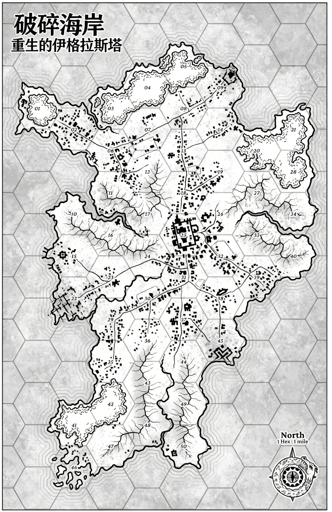

重生的伊格拉斯塔 — 区域地图

破碎海岸（BROKEN SHORES）
设计者与作者：亚历克斯·T.（Alex T.）
文本版权：© 2023 黑誓娱乐公司（Blackoath Entertainment）
封面插画：彭妮·梅尔加雷霍（Penny Melgarejo）
标志设计：肖勒·333（Sholeh 333）
图标设计：伊尔哈图形工作室（Irha Graphics）
插画师：乌马尔（Umar）、肖勒·333（Sholeh 333）、彭妮·梅尔加雷霍（Penny Melgarejo）、阿万佩纳（Awanpena）、卡洛斯·卡斯蒂略（Carlos Castilho）、尼德戈尔（NerdGore）
部分 artwork：© 2015 迪恩·斯宾塞（Dean Spencer），经许可使用
版式设计：亚历克斯·T.（Alex T.）
特别鸣谢：感谢赞助者们的支持，让《破碎海岸》得以问世——万分感谢！
赞助链接：www.patreon.com/blackoathgames
特别致谢斯诺基普（Snowkeep）协助编辑并完善探索规则，同时感谢黑誓游戏Discord社区的朋友们，你们的反馈让这款游戏变得更出色。
授权协议：知识共享署名4.0国际许可协议（Creative Commons Attribution 4.0 International License）——您可自由分享、改编本材料，唯需注明出处。
角色表与辅助工具：可在 www.blackoathgames.com 获取
版本：1.2
联系邮箱：blackoathentertainment@gmail.com
目录
- 基础规则（The Basics）- 8页
- 角色创建（Characters）- 10页
- 核心规则（The Rules）- 22页
- 无游戏主持规则与工具（GM-less Rules and Tools）- 40页
- 巫术（Sorcery）- 50页
- 探索独海（Exploring the One Sea）- 66页
- 搜刮独海（Looting the One Sea）- 108页
- 野兽、恶魔及其他威胁（Beasts, Demons, and Other Threats）- 122页
来吧，漂泊者，讲讲你的故事……潮水渐涨，深渊永无宁日。
1. 基础规则（The Basics）
什么是《破碎海岸》？
《破碎海岸》是一款以百分骰为核心机制的角色扮演游戏（RPG），需使用全套多面骰子、纸笔进行游玩。在游戏中，玩家将扮演“漂泊者”（Drifters）——一场毁灭世界的远古灾难后幸存的人类，如今的世界已沦为一片汪洋地狱。玩家将探索随机生成的海洋，从无数废弃船只与新近浮现的小岛中搜刮生存物资。这是一个黑暗而残酷的世界：淡水比血更珍贵，魔法既变幻莫测，亦是通往终极力量的关键。
如何游玩《破碎海岸》？
游戏最佳配置为1名游戏主持（GM）与1名玩家角色（PC）。虽支持多人组队游玩，但“孤身对抗世界”的设定更能凸显游戏核心魅力，单人PC模式最能体现这一体验。为此，我们特别加入了单人规则与工具，供无需GM引导、想独自踏入泽弗罗斯（Zephorus）汪洋世界的玩家使用。
当PC尝试执行结果未知或存在风险的行动时，GM会要求进行“判定”（check）：投掷1枚百分骰（D100），若结果小于或等于角色表上对应技能数值，则判定成功。第三章将详细说明该流程。
《破碎海岸》核心特色
- 黑暗奇幻风格，背景设定于后末日世界泽弗罗斯——诸神已逝，人类挣扎于残酷、恶劣的环境中。
- 魔法极度危险，因此常被禁止且遭人排斥。
- 玩家扮演漂泊者，穿梭于独海（One Sea）之上，寻找可搜刮的小岛。
- 神核碎片（Godshards）是最珍贵的宝物，既是巫术施展的关键，也是各大教派争抢的目标；古老世界亦遗留着诸多遗迹，若你足够勇敢，便可深入探索……
- 以六边形地图为基础的海洋探索，核心玩法为探索与搜刮。
- 探索远古遗迹、葱郁岛屿、漂浮废船——这个古老的世界暗藏无数待发现的秘密与财富。
- 自定义玩法：支持单人模式或传统GM引导的战役模式。
2. 角色创建（Characters）
在扬帆探索独海之前，你需要创建一名玩家角色（PC）——它将是你在泽弗罗斯世界的化身，带你穿越这片广阔而危险的海洋。遵循以下步骤，你将快速打造出一名能适应残酷世界的新角色。除了步骤中生成的数值外，角色的一切皆由你构想：你可以自行决定其姓名、性别、外貌与背景故事，创建流程结束时，你应对这个角色有清晰的认知。
新角色均被称为“漂泊者”，开局时除身上衣物外几乎一无所有。设定中，所有新角色刚从近年兴起的某一教派中逃脱，仅来得及带走少量口粮、一件武器及零星物品。
属性（ATTRIBUTES）
属性是角色的基础，决定其先天能力与核心素养，同时影响多项技能的初始数值——数值越高，能力越强（例如：意志值12的角色必然比意志值10的角色更具精神力量）。所有角色均拥有以下6项属性：
- 力量（Strength，STR）：决定角色的物理强度，影响举重、破物等蛮力行为，同时决定无负重惩罚时的装备携带量。
- 敏捷（Dexterity，DEX）：体现角色的灵活性与手部精细操作能力，如闪避、撬锁等。
- 体质（Constitution，CON）：衡量角色的抗伤害能力与对毒物、疾病等有害效果的抵抗力。若体质值降至0，角色死亡。
- 意志（Will，WIL）：代表精神力量与自我认同，是操控强大魔法、抵御说服的关键属性，能帮助角色坚守立场、达成目标。
- 智力（Intelligence，INT）：反映角色的心智敏锐度与逻辑思维能力，适用于行动前的深思熟虑、解谜或破解谜语。
- 魅力（Charisma，CHA）：体现角色的亲和力，用于获取信息、与非玩家角色（NPC）互动并获得优势。
初始属性生成
投掷3枚六面骰（3D6）共6次（每项属性对应1次投掷），将结果分配至6项属性中。初始属性值范围为3-18，自然方式下属性值最高不可超过20。
属性判定（Attribute Roll）
每项属性对应“属性判定值”= 属性值×5。当行动未对应任何技能，或直接考验属性本身时（由GM指定，或触发陷阱、中毒、回忆信息等特定情境），需进行属性判定。
- 力量判定 - 蛮力（Brawn）：纯靠蛮力解决问题或摆脱困境时使用（如挣脱束缚、举起重石），也可用于与其他角色/生物的对抗判定（如掰手腕）。
- 敏捷判定 - 协调（Coordination）：需快速反应的场景（如躲避陷阱、接住投掷物）。
- 体质判定 - 活力（Vitality）：考验身体耐力或肠胃耐受度的场景（如彻夜不眠、抵御晕船、变质食物、烈酒或毒物）。
- 意志判定 - 坚韧（Tenacity）：挑战角色决心或自我控制的场景（如抵抗法术效果），对施法者至关重要（详见第五章）。
- 智力判定 - 才智（Intellect）：体现角色的推理、决策或洞察力（如理解重复符号的含义、寻找脱困方法），可用于主动搜寻线索、收集信息、实验或研究（注意：避免将其作为解谜的“捷径”，谜题应优先由玩家自行解决）。
- 魅力判定 - 魅惑（Charm）：无需言语即可给人留下好印象、吸引注意力或达成目标（如初次见面建立好感、成为群体决策的核心）。
次要属性（SECONDARY ATTRIBUTES）
- 生命值（Health Points，HP）：角色承受伤害的上限，数值=体质值×2。普通人类每完整休息1天恢复3点生命值。
- 能量值（Power Points，PP）：代表角色的精神与心灵力量，用于施展法术，数值=意志值。完整休息1晚后恢复。
- 速度（Speed）：1回合（10秒）内，角色步行/游泳速度=敏捷值×2英尺，奔跑速度=敏捷值×4英尺。
技能（SKILLS）
技能体现角色的后天经验与专长，数值范围为0（完全无能）-100（精通大师），为百分比概率（例如：识字技能40的角色，阅读时成功概率为40%）。进行技能判定时，投掷D100，结果低于技能值则判定成功。
技能初始值
每项技能的初始值等于其关联属性值（例如：敏捷16的角色，其锻造、闪避等敏捷关联技能初始值均为16），后续可通过技能分配点叠加。
技能分配规则
初始属性分配完成后，按以下规则分配技能点：
- 1项技能+60
- 3项技能+40
- 5项技能+20（可选替代方案：学习1个法术，4项技能+20；或学习2个法术，3项技能+20）
- 2项技能+10
技能列表及效果
- 杂技（Acrobatics，DEX）：翻滚穿过闭合的大门、用绳索荡过峡谷、在危险边缘保持平衡。
- 动物驯养（Animal Handling，CHA）：安抚家畜、洞察动物意图、危险动作中控制坐骑。
- Athletics（STR）：游泳、冲刺、攀爬、跳跃等体能动作。
- 指挥（Command，CHA）：领导士兵作战、组织高效团队任务（如船员调度），体现指挥下属的能力。
- 锻造（Crafting，DEX）：修理或制作小型物品（如修补皮靴、修复剑柄），涵盖皮革加工、骨骼雕刻、木工等通用工艺（无需专业知识）。
- 闪避（Dodge，DEX）：战斗或非战斗场景中规避伤害，也可用于近战中脱离战斗。
- 洞察力（Insight，WIL）：推断生物的目标或动机。
- 识字（Literacy，INT）：阅读、理解并书写文字，是学习魔法书与符号中魔法秘密的必备技能（泽弗罗斯的“文字”可能是骨头上的精细刻痕、羊皮纸上的字母/象形文字，或阿萨里人的复杂结绳语言）。
- 操控（Manipulation，CHA）：通过威胁、谎言或奉承影响NPC的观点或行动。
- 军用武器（Martial Weapons，STR）：使用战斧、连枷、长柄刀、巨斧、巨剑、长矛、长剑、战锤、晨星锤、弯刀、短剑、三叉戟、战镐、钉头锤、鞭子等武器。
- 医术（Medicine，INT）：稳定濒死者状态、治疗/诊断疾病/毒物、愈合伤口、判断死因。
- 自然知识（Nature，INT）：了解自然地形、怪物、植物及威胁（与生存技能不同，无需实际野外经验）。
- 感知（Perception，WIL）：视觉、听觉或其他感官的感知能力。
- 表演（Performance，CHA）：唱歌、演戏等取悦观众的行为。
- 远程武器（Ranged Weapons，DEX）：使用各类弓箭、投掷匕首、飞镖、投掷网等远程武器作战。
- 航海（Sailing，DEX）：操控、导航各类尺寸的船只。
- siege武器（Siege Weapons，DEX）：使用堡垒或大型船只配备的重型武器（如弩炮、投石机）。
- 简易近战武器（Simple Melee Weapons，STR）：使用棍棒、匕首、巨棒、手斧、标枪、钉头锤、短杖、长矛等武器。
- 戏法（Sleight of Hand，DEX）：变戏法、扒窃、在他人身上藏物、传递秘密手势等敏捷类欺骗动作。
- 潜行（Stealth，DEX）：隐藏自身或避免被发现，通常与潜在观察者的感知判定对抗。
- 生存（Survival，INT）：钓鱼、追踪、规避自然危险、在独海中导航不迷路。
- 徒手格斗（Unarmed Combat，STR）：包括临时武器格斗、Dirty Fighting、优雅武术等，无武器时适用，造成D4点伤害。
天赋（TALENTS）
新角色开局可从以下列表中选择2项天赋：
- 瞄准（Aim）：花费1整回合瞄准后，下一次远程武器技能+30，伤害+1。
- 远古灵魂（Ancient Soul）：永久增加5点能量值（PP）。
- 箭术专家（Archery Expert）：远程武器攻击忽略目标2点护甲。
- 背刺（Backstab）：使用单手近战武器攻击未察觉的目标时，伤害翻倍。
- 格挡（Brace）：受到暴击时，成功通过活力判定可避免投掷暴击表（仍需承受双倍伤害）。
- 斗殴者（Brawler）：徒手攻击造成D6点伤害；在自然地形中潜行时，自动通过所有潜行判定。
- 控制呼吸（Controlled Breathing）：屏息时间=体质值×2回合。
- 破甲（Break Armor）：进行标准攻击，命中后目标护甲-1。
- 冲锋（Charger）：冲锋进入战斗时，攻击判定+10，伤害+D4。
- 无畏（Dauntless）：免疫恐惧效果。
- 双持（Dual Wielder）：双持单手武器时无任何惩罚。
- 决斗者（Duelist）：使用单手武器时，攻击技能+20。
- 灵活（Elusive）：同一回合内每次闪避后，闪避技能仅-20（而非-30）。
- 弱点利用（Exploit Weak Spot）：攻击忽略目标1点护甲。
- 快速游泳者（Fast Swimmer）：游泳速度=敏捷值×3英尺/回合。
- 节俭（Frugal）：每2天仅需消耗1份口粮。
- 天赋 - 魅力（Gifted - Charisma）：魅力关联技能判定失败时可重投。
- 天赋 - 敏捷（Gifted - Dexterity）：敏捷关联技能判定失败时可重投。
- 天赋 - 智力（Gifted - Intelligence）：智力关联技能判定失败时可重投。
- 天赋 - 力量（Gifted - Strength）：力量关联技能判定失败时可重投。
- 天赋 - 意志（Gifted - Will）：意志关联技能判定失败时可重投。
- 优雅战士（Graceful Fighter）：简易武器与军用武器的基础属性改为敏捷（而非力量）。
- 议价者（Haggler）：出售战利品时，获得不低于标准价格的收益。
- 医者（Healer）：使用医术技能治疗他人时，对方愈合速度×3。
- 鼓舞战歌（Inspiring Chant）：每场战斗可进行1次表演判定，成功则自身与盟友获得5点临时生命值（战斗结束后消失）。
- 战斗领袖（Lead the Fight）：每场战斗可进行1次指挥判定，成功则盟友攻击判定+10（持续至战斗结束）。
- 神射手（Marksman）：使用远程武器时，攻击技能+20。
- 心灵堡垒（Mind Fortress）：免疫所有精神控制或魅惑效果。
- 月触（Moon-Touched）：法术效果表投掷+20。
- 多重攻击（Multiple Attacks）：可将攻击技能拆分为两段，同一回合内使用拆分后的数值进行两次不同攻击（例如：军用武器技能56可拆分为30和26，分别进行两次判定）。
- 神秘打击（Mystical Strike）：可消耗最多5点能量值（PP），使攻击额外造成等量伤害。
- 强效（Powerful）：目标抵抗你的法术时，坚韧值-20。
- 巧手（Quick-Handed）：戏法技能判定+30。
- 快速愈合（Quick Healer）：每休息1天恢复5点生命值（而非3点）。
- 坚韧（Resilient）：受到重伤时，成功通过活力判定可忽略伤口效果。
- 静默（Silent）：潜行技能判定+30。
- 灵活脱身（Slippery）：可自动脱离近战，无需进行闪避判定。
- 杀戮者（Slayer）：使用双手武器时，攻击技能+20。
- 蛇血（Snakeblood）：抵抗毒物/毒液时，活力值+30。
- 巫师（Sorcerer）：开局额外掌握1个自选法术（仅新角色可选）。
- 嘲讽（Taunt）：操控技能+20并进行判定，成功则所有听力范围内的人类对手下回合必须攻击你。
- 恐怖之声（Terrifying Voice）：操控技能+20并进行判定，成功则目标需通过坚韧判定，否则陷入恐惧状态D4回合。
- 无甲速行（Unencumbered Speed）：未穿护甲时，速度+10英尺/回合，所有受到的伤害-1。
- 势不可挡（Unstoppable）：将对手生命值降至0后，可立即对最近的对手进行1次免费攻击。
- 活力充沛（Vigorous）：永久增加5点生命值（HP）。
- 警惕（Watchful）： Initiative+5，不会被突袭。
被俘背景（CAPTURED）
你的故事并非始于准备探索独海的漂泊者，而是教派神庙船上的一名囚徒。过往经历已无足轻重，你甚至几乎记不起自己的名字——遭受殴打、羞辱、饥饿与残酷惩罚，但你从未屈服。一场猛烈的风暴袭击船只时，你终于成功逃脱。通过以下表格生成逃脱细节：
所属教派（D10）
- 千泪教（The Thousand Tears）：狂热的阿菲翁（Aphion）崇拜者，行事极端暴力。
- 尼雷娜使者（Nirena’s Emissaries）：崇拜死亡女神尼雷娜（Nirena）的教会。
- 神圣信条（The Hallowed Creed）：致力于复活正义之神芬尼尔（Phenir）的狂热分子。
- 黄金神谕（The Golden Oracle）：希望复活魔法之神卡纳斯（Qhanas）的狂热信徒。
- 红天教（The Red Sky）：末日教派，持续向天空女神乌拉（Uara）献祭受害者。
- 褪色者（The Faded）：认为人类应被灭绝的狂热组织。
- 静默集会（The Silent Gathering）：崇拜夜之女神曼翠丝（Mantris）的神秘组织。
- 青铜之子（The Bronze Children）：皮肤布满晒伤与肿瘤，崇拜太阳神伊鲁斯（Irus）。
- 破碎者（The Broken）：风之神乌利斯（Ulies）的追随者，试图复活神明。
- 最后教团（The Last Order）：试图解读责任女神科瑟（Kothe）遗言的迷失灵魂。
被俘时长（D10）
1-2：1周
3-4：1个月
5-6：3个月
7-8：6个月
9-10：1年
教派对你的评价（D6）
- 你这个肮脏的异端！
- 我们的事业需要鲜血。
- 有人得去划桨。
- 你一定知道些什么！
- 你身上有值钱的东西。
- 谁知道这些混蛋为什么这么做？
逃脱方式（D8）
- 诱惑船员逃脱（操控技能+5）
- 杀出重围（徒手格斗技能+5）
- 抓住机会逃脱（感知技能+5）
- 精心策划并执行逃脱（洞察力技能+5）
- 潜行逃脱（无人察觉，潜行技能+5）
- 装死逃脱（表演技能+5）
- 利用技能脱身（锻造技能+5）
- 发动叛乱逃脱（指挥技能+5）
额外选择：是否掠夺教派？
逃脱前，你有机会冒险从教派掠夺一件宝物——若选择“是”，投掷D6生成宝物（需承担相应代价）：
- 无（仅逃脱，无额外收益与惩罚）
- 附魔武器（投掷随机武器表），额外造成D4点伤害；但你身负无法彻底愈合的伤口（体质-1）
- 月石（可储存最多10点能量值）；头部遭受重创（智力-1）
- 水肺戒指（每日可施展1次“水肺”法术）；面部被划伤（魅力-1）
- 火焰之手手镯（每日可施展1次“火焰之手”法术）；被教派追杀（Hunted状态）
- 治愈戒指（每日可施展1次“缝合伤口”法术）；身受重伤，开局失去5点生命值。
额外选择：是否解救他人？
若选择“是”，获得1名盟友，但开局减少20枚硬币（Ҁ）与1份口粮。盟友可能在未来随机出现提供帮助（或由GM安排）。
初始装备
逃脱时，你顺手带走了以下物资：
- 1件随机武器（投掷随机武器表，见112页）；若为弓箭，额外获得1壶D6支箭矢。
- D4+6份口粮。
- 5D20枚硬币（Ҁ）。
- 1件随机初始装备（投掷随机初始装备表）。
随机初始装备表（D10）
- 背包
- 匕首
- 火把（使用骰D4）
- D4支蜡烛
- D4空瓶
- 钓鱼竿
- 绳索（40英尺）
- 火绒盒
- 绷带（使用骰D4）
- 锻造材料
收尾细节（FINISHING TOUCHES）
最后确定角色的基本性格特质等角色扮演要素：选择姓名、外貌、性别、年龄等信息，你的新角色即可就绪！
角色成长（IMPROVING YOUR CHARACTER）
技能提升
若技能判定结果低于其关联属性值，该技能可标记为“待提升”。游戏回合结束时，对所有标记技能进行“技能提升判定”：投掷D100，结果高于当前技能值则技能+1%。
示例：阿罗思（Arothe）需通过感知判定寻找隐藏出口，其感知技能45，关联意志值12。他投掷出03（成功找到出口），同时标记感知技能待提升。回合结束时，投掷D100得到50（高于45），感知技能提升至46。
属性提升
每次通过技能提升判定增加技能值时，标记该技能关联属性的“成长进度条”（每回合仅可标记1项属性）。当进度条填满，清空进度并将该属性+1（属性值最高不超过20），同时更新关联技能、生命值或能量值。
学习新天赋
每次提升任意属性时，可从天赋列表中选择1项新天赋。
3. 核心规则（The Rules）
《破碎海岸》中所有行动的核心机制均为“判定”（check）：当情境或GM要求时，投掷D100，结果小于或等于对应属性/技能值则判定成功。
难度调整（DIFFICULTY MODIFIERS）
部分行动因情境不同存在难易差异，GM（或单人游玩时由玩家）需根据难度分配调整值，调整值将在投掷前应用于属性/技能。
| 难度等级 | 调整值 |
|---|---|
| 轻而易举（Child's play） | +30 |
| 毫不费力（Effortless） | +20 |
| 简单（Easy） | +10 |
| 普通（Normal） | +0 |
| 费力（Demanding） | -10 |
| 困难（Hard） | -20 |
| 近乎不可能（Almost Impossible） | -30 |
随机难度判定（D8）
1-2：普通
3：轻而易举
4：毫不费力
5：简单
6：费力
7：困难
8：近乎不可能
对抗判定（OPPOSED CHECKS）
当玩家与其他角色（PC或NPC）直接竞争时，需进行对抗判定：双方均进行标准判定（属性或技能），未超过自身属性/技能值且结果更高者获胜；若平局（如双方均失败），则相关属性/技能值更高者获胜。
暴击与失误（CRITICAL SUCCESSES & FUMBLES）
- 暴击（Critical Success）：投掷结果01-05时触发，效果最佳（战斗中尤为重要，详见28页）。
- 失误（Fumble/Critical Failure）：投掷结果96-100时触发，行动以极其糟糕的方式失败（战斗中风险极高，详见28页）。
战斗规则（COMBAT）
攻击判定（THE ATTACK ROLL）
攻击判定与其他技能判定一致：投掷D100，结果小于或等于对应战斗技能（简易近战武器、军用近战武器、远程武器、 siege武器、徒手格斗）值则攻击成功。
闪避与格挡（DODGING & PARRYING）
攻击目标可尝试闪避或格挡：
- 闪避（Dodging）：进行闪避判定，成功则规避攻击。限制：同一回合每闪避1次，闪避技能临时-30，回合开始时恢复原值。闪避为攻击后的回应动作，需在攻击成功后投掷。
- 格挡（Parrying）：类似闪避，需使用武器技能进行判定，成功则格挡攻击。限制：仅盾牌或带有“格挡”特质的武器可使用；同一回合每格挡1次，武器技能临时-30（可能影响后续攻击）。建议：攻击前优先闪避，攻击后再格挡。
闪避与格挡均为免费动作。
战斗流程（COMBAT STEP-BY-STEP）
- 判定突袭：GM决定战斗参与者是否遭受突袭（单人游玩时根据情境或随机判定）。
- 确定位置：GM安排所有角色与对手的位置，计算距离与方向（单人游玩时根据情境判断）。
- 投掷先攻权：所有参与者投掷先攻权，决定战斗回合顺序（全程固定）。
- 依次行动：按先攻权顺序，每位参与者轮流行动。
- 回合结束：所有参与者行动完毕后，本回合结束，下一回合按原顺序继续。
回合与轮次（TURNS & ROUNDS）
- 回合（Turn）：单个战斗参与者的行动机会。
- 轮次（Round）：所有参与者完成1次行动的周期，持续约10秒。
突袭（SURPRISE）
- 若双方均未潜行，互相察觉，无突袭，正常投掷先攻权。
- 若一方潜行，进行潜行vs感知对抗判定：未察觉威胁的角色/怪物将被突袭——突袭回合无法移动或行动，且无法进行防御，直至本回合结束。
先攻权（INITIATIVE）
- 投掷方式：战斗开始时，每位玩家投掷D10+敏捷值，结果为先行权数值。
- 群体敌人：GM为一组相同怪物投掷1次先攻权，该组敌人同步行动。
- 调整规则：暴击使先攻权+1（持续至战斗结束），失误使先攻权-1；部分天赋、行动或法术可能影响先攻权顺序。
战斗回合行动（THE COMBAT TURN）
PC回合内可移动（最大距离=自身速度）并执行1个标准动作，可选择先移动后行动或先行动后移动。常见行动包括：
- 标准攻击（Standard attack）：使用近战/远程武器攻击范围内目标；部分天赋、装备或法术可能允许1回合多次攻击（怪物也可能具备该能力）。
- 战术动作（Maneuvers）：替代标准攻击的特殊行动：
- 冲锋（Charge）：移动至最大速度并进行近战攻击；下回合前无法闪避或格挡。
- 制造破绽（Create Opening）：攻击成功后，可选择造成一半伤害，使下一位攻击同一目标的角色（无论敌我）攻击+20（需攻击前声明）。
- 缴械（Disarm）：进行协调对抗判定，试图解除对手武器。
- 擒拿（Grapple）：放弃攻击，进行 Athletics 对抗判定，试图控制目标。
- 推开（Push）：正常攻击命中后，目标需通过蛮力判定，否则被击退10英尺。
- 绊倒（Trip）：放弃攻击，进行 Athletics 对抗判定，试图绊倒对手。
- 横扫（Wide Swing）：攻击技能-20，可同时攻击目标及5英尺范围内其他敌人；每个目标可正常闪避/格挡，伤害均摊。
- 施法（Spells）：PC或部分角色可施法，施法通常占用1个行动（法术描述另有说明除外）。
- 脱离战斗（Disengage）：进行闪避判定，成功则脱离近战；失败则近战范围内的对手可进行1次免费攻击。
- 其他行动（Other）：使用物品、与环境互动、协助盟友、再次移动（最大距离=奔跑速度）或切换武器。
伤害结算
攻击命中后，投掷武器/法术伤害，叠加所有适用调整值：
- 怪物/NPC生命值降至0：死亡。
- PC生命值降至0或以下：陷入昏迷，需投掷伤害表（详见31页）。
战斗关键规则
- 双持：双持单手武器可获得每回合1次免费格挡，伤害+2，但攻击技能-30。
- 徒手攻击：造成D4点伤害。
- 战斗技能满值（100）：可选择1回合1次满值攻击，或拆分技能值进行多次攻击（每次攻击至少40点技能值）。
- 近距离远程攻击：非法术类远程攻击在5英尺及以内时，攻击技能-20。
- 俯卧目标：攻击俯卧状态的目标时，攻击技能+30。
- 无意识/睡眠目标：攻击无需技能判定。
- 水下战斗：所有非魔法伤害-2；远程攻击不可用（法术除外）；近战攻击技能-20。
- 伤害抗性/免疫/弱点：部分生物对特定伤害类型具有抗性（伤害减半）、免疫（无伤害）或弱点（伤害翻倍）。
护甲规则（ARMOR）
每件护甲均有“防护等级”（Protection Rate），角色受到的伤害需先减去护甲防护等级。同时护甲拥有“耐久度骰子”（Integrity），战斗中使用过的护甲需在战后投掷耐久度骰子：
- 结果1-2：耐久度骰子降级（骰子链：D12→D10→D8→D6→D4）。
- D4骰子投掷1-2：护甲彻底损坏，无法修复，需丢弃。
护甲修复：消耗2份锻造材料，可使护甲耐久度骰子升级1级（不可超过护甲最大耐久度，具体以护甲描述为准）。
盾牌规则（SHIELDS）
- 格挡方式：持盾角色可使用盾牌格挡，格挡技能与主手武器技能一致（例如：主手使用匕首时，用简易武器技能格挡）。
- 限制：每格挡1次，盾牌关联技能临时-30（回合结束恢复），与主手武器技能独立计算（不影响后续攻击）。
- 额外效果：多数盾牌提供格挡调整值（详见盾牌描述），且需追踪耐久度（规则同护甲）。
重伤规则（可选，MAJOR WOUNDS）
若希望战斗更快速、致命，可启用重伤规则：当角色单次受到的伤害≥自身总生命值的一半时，需投掷重伤表，效果立即生效，相关技能需重新计算。除表中效果外，重伤角色每回合失去1点生命值，攻击技能-10。
重伤需完整休息1天才能自然愈合（愈合前持续受效果影响），“治愈重伤”法术可立即治愈重伤表中的任意伤口。
重伤表（D6）
- 肌腱受损：敏捷-D4
- 面部丑陋伤口：魅力-D4
- 肌肉损伤：力量-D4
- 躯干重创：体质-D4
- 精神冲击：意志-D4
- 头部震荡：智力-D4
暴击表（CRITICAL HITS）
攻击投掷01-05时触发暴击，攻击自动命中，伤害翻倍，同时投掷对应暴击表：
近战武器暴击表（D10）
- 颅骨破裂：目标眩晕3回合，无法行动
- 要害打击：目标恶心，所有行动-20（直至治愈）
- 击退：目标被击退D4×5英尺
- 腿部重创：目标移动速度减半（直至治愈）
- 护甲凹陷：目标护甲防护等级-D4（直至修复）
- 膝盖重击：目标俯卧
- 横扫：攻击者可对最近敌人额外攻击1次
- 撕裂伤口：目标流血，每回合失去1点生命值
- 格挡失效：目标掉落武器（无武器则额外受到D6点伤害）
- 粉碎打击：目标死亡
远程武器暴击表（D10）
- 眼部重创：目标眩晕3回合，无法行动
- 格挡反击：攻击者格挡时+20（直至下回合）
- 嘲讽炫技：目标仅能对攻击者进行标准攻击
- 冲撞：攻击者下一次攻击+20
- 护甲凹陷：目标护甲防护等级-D4（直至修复）
- 武器摧毁：目标武器被破坏（无武器则额外受到D8点伤害）
- 劈砍：目标额外受到D6点伤害
- 胸部撕裂：目标每回合失去D4点生命值
- 开膛破肚：目标需通过活力判定，否则死亡
- 斩首：目标死亡
徒手格斗暴击表（D10）
- 突袭破绽：攻击者本回合额外获得1次行动
- 一石二鸟：自动对附近第二个目标造成普通伤害
- 神经损伤：目标眩晕D6回合，无法行动
- 腿部重创：目标移动速度减半（直至治愈）
- 护甲受损：目标护甲防护等级-D4（直至修复）
- 深度伤口：目标每回合失去1点生命值
- 前臂刺穿：目标掉落武器（无武器则额外受到D6点伤害）
- 重击：目标所有行动-20
- 刺穿：伤害变为三倍（而非双倍）
- 颈部重创：目标死亡
法术暴击表（D10）
- 目标需通过坚韧判定，否则瘫痪10分钟
- 弱点暴露：该类型攻击对目标造成双倍伤害
- 眩晕：目标眩晕D10回合，无法行动
- 击退：目标被击退20英尺
- 回声冲击：另一个目标受到该法术效果
- 大出血：目标流血，每回合失去1点生命值
- 震荡冲击：目标被击飞后坠落，额外受到1D6点伤害，眩晕1回合
- 神经损伤：伤害变为三倍（而非双倍）
- Savage伤害：目标需投掷永久伤害表
- 瓦解：目标死亡
失误表（FUMBLES）
攻击投掷96-100时触发失误，投掷失误表（敌人/NPC/怪物无需投掷，直接失去回合，且下回合前无法防御）：
| 投掷结果 | 效果 |
|---|---|
| 1 | 掉落武器，下回合需消耗行动拾取（无武器则下一次攻击-20） |
| 2 | 武器用力过猛嵌入墙壁/地面，需通过蛮力判定才能取回（无武器则下一次攻击-20） |
| 3 | 武器用力过猛撞击石头断裂（无武器则下一次攻击-20） |
| 4 | 背包中随机1件物品掉落（易碎物品会损坏） |
| 5 | 陷入混乱，失去D8点能量值 |
| 6 | 绊倒摔倒，浪费本次行动；俯卧，下回合需消耗行动站起 |
| 7 | 攻击时绊倒，向前移动5英尺并俯卧 |
| 8 | 若可能，攻击命中目标附近最近的盟友 |
| 9 | 用普通攻击击中自己 |
| 10 | 被自己的武器重伤，受到1次暴击 |
治疗与死亡（HEALING & DEATH）
自然愈合
- 休息愈合：完整休息1天（卫生条件良好）恢复3点生命值；休息被打断则当天不愈合。
- 医术辅助：他人每日成功进行医术判定，可使伤者愈合速度翻倍。
- 止血：成功进行医术判定（需绷带）可停止所有类型伤口的流血效果。
- 暴击效果愈合：暴击造成的额外效果（如眩晕、护甲损坏）需单独愈合，与生命值恢复无关（即使生命值满，暴击效果仍可能存在）。
生命值降至0或以下
角色陷入昏迷，生死状态需由盟友治疗或战斗结束后判定，此时需投掷伤害表（结合调整值）：
| 伤害表结果 | 状态 |
|---|---|
| -10-0 | 死亡 |
| 1-5 | 伤势过重，1分钟内未恢复1点生命值则死亡 |
| 6-10 | 重伤，需卧床休息1个月 |
| 11-15 | 伤势严重，需卧床休息1周 |
| 16-20 | 休克但存活，恢复1点生命值，需卧床休息1周 |
| 21-25 | 仅被击晕，休息1晚即可恢复 |
| 26+ | 无永久伤害，正常恢复 |
伤害表调整值
- +1：通过活力判定
- +5：生命值恰好为0
- +5：昏迷后立即被他人用医术技能治疗
- -5：昏迷后1小时内才被治疗
- -10：昏迷后1天内才被治疗
永久伤害（Permanent Wound）
若伤害表结果为1-15且角色存活，需投掷永久伤害表（调整值=体质调整值）：
| 投掷结果 | 效果 |
|---|---|
| 1 | 一条腿截肢/粉碎：需拐杖或假腿，移动速度-20英尺，敏捷不再加成相关技能 |
| 2 | 一条手臂截肢/粉碎：无法攀爬、使用盾牌、双持或双手武器 |
| 3 | 一只眼睛失明：远程攻击-20，感知判定-20 |
| 4 | 一只耳朵失聪：感知判定-20 |
| 5 | 肺部刺穿：体质-1 |
| 6 | 肌腱受损：力量-1 |
| 7 | 神经损伤：敏捷-1 |
| 8 | 脑损伤：智力-1 |
| 9 | D6颗牙齿脱落：魅力-1 |
| 10 | 精神力量受损：永久失去5点能量值 |
状态效果（CONDITIONS）
角色可能受到以下常见状态影响：
- 失明（Blindness）：所有判定-40。
- 魅惑（Charm）：无法攻击魅惑者或对其使用有害能力；与魅惑者的社交判定对其有利。
- 缠绕（Entangled）：被物体束缚，无法移动，移动类行动-20；回合内可进行蛮力判定挣脱（难度根据情境调整）。
- 恐惧（Fear）：恐惧源在视野内时，所有判定-20，无法接近恐惧源。
- 冻伤（Freezing）：所有技能-10，战斗中最后行动；第一回合后需通过活力判定恢复（失败则每回合重投，不计入行动）；人类每10回合状态恶化，陷入体温过低（所有行动-50），最终死亡。
- 瘫痪（Paralysis）：无法行动或说话，攻击自动命中。
- 俯卧（Prone）：被攻击时，攻击者技能+30。
- 坏血病（Scurvy）：缺乏新鲜蔬果导致的常见疾病，每月未摄入新鲜蔬果则病情升级1级（共6级，最终死亡）。
- 睡眠（Sleep）：立即俯卧，受到的攻击均为暴击。
- 眩晕（Stun）：失去本回合行动。
- 窒息/溺水（Suffocating/Drowning）：屏息回合数=体质值；无法呼吸时每回合体质-1，直至死亡（体质0）；恢复呼吸后，失去的体质值逐渐恢复。
坏血病等级效果
| 等级 | 效果 |
|---|---|
| 1 | 永久获得1级疲劳 |
| 2 | 骨痛，蛮力与协调判定-20 |
| 3 | 易受伤，每次受到伤害+1 |
| 4 | 牙齿脱落 |
| 5 | 无法自然愈合 |
| 6 | 死亡 |
疲劳（FATIGUE）
疲劳由疲惫、暴露、饥饿、受伤等因素导致，常见触发条件：24小时未进食/饮水（需每日消耗1份口粮）、24小时未休息、环境极端恶劣，或能量值耗尽（能量值为0时立即获得1级疲劳，直至恢复）。
疲劳等级效果叠加，严重时可致命；每获得1次充足食物或完整睡眠，疲劳等级-1。
| 疲劳等级 | 效果 |
|---|---|
| 1 | 速度减半 |
| 2 | 蛮力、协调、活力判定-20 |
| 3 | 所有攻击判定-20 |
| 4 | 最大生命值减半 |
| 5 | 速度降至5英尺，无法维持慢速移动 |
| 6 | 死亡 |
计时器（TIMERS）
用于追踪游戏中特定事件（如潮水上涨、援军到达、火山喷发），计时器分为5个等级（骰子链：D12→D10→D8→D6→D4），等级越高，事件触发越晚。
计时器判定规则
需检查计时器时（GM指定、情境触发或玩家决定），投掷当前等级骰子：
- 结果1-2：计时器降级（例：D8→D6）。
- D4骰子结果1-2：事件触发。
锻造规则（CRAFTING）
尽管存在贸易船只与定居点，但自给自足更为可靠。锻造需先在木筏上建造“锻造台”（消耗20份锻造材料），锻造均需进行判定，失败则损失50%所用材料。
锻造材料（CRAFTING SUPPLIES）
抽象化的材料集合（含废料、金属、木材、布料、骨骼、石头），重量判定为“轻便”。
常见锻造项目及消耗
| 项目 | 消耗 | 说明 |
|---|---|---|
| 护甲适配 | 1份锻造材料 | 找到的护甲需适配尺寸才能穿戴，仅可在锻造台进行 |
| 护甲/盾牌修复 | 2份锻造材料 | 护甲/盾牌耐久度骰子升级1级 |
| 箭矢 | 2份锻造材料 | 箭矢使用骰+1级 |
| 绷带 | 2份锻造材料 | 绷带使用骰+1级 |
| 渔网 | 3份锻造材料 | 被动捕鱼工具，每日结合足够水源产出1份口粮 |
| 钓鱼竿 | 2份锻造材料 | 无需锻造台，成功进行生存判定后，结合足够水源产出1份口粮 |
| 撬锁工具 | 2份锻造材料 | 撬锁工具使用骰+1级 |
| 太阳能蒸馏器升级 | 10份锻造材料 | 升级后每日产出2杯淡水 |
| 火把 | 2份锻造材料 | 火把使用骰+1级 |
航海规则（SAILING）
航海是泽弗罗斯世界中人类最重要的技能之一，多数情况下仅需偶尔操控船舵，但特殊情境（如抵御风暴、穿越狭窄危险遗迹）需进行一系列航海判定。
航海失误表（Sailing Fumble）
航海判定失误时，投掷D8：
- 剧烈转向损坏船身，受到D6点伤害
- 操作失败导致船桨断裂
- 部分货物丢失，随机D6件船上货物坠入海中
- 船帆撕裂，船速降低0.5英里/小时
- 突然操作失误导致随机1名角色失足，需通过协调判定否则落水
- 船舵断裂，无法操控船只，需消耗10份锻造材料修复（否则船只漂流）
- 主桅杆断裂，船上角色需通过协调判定否则受到2D6点钝击伤害
- 船身破洞，无法修复，需弃船否则沉没
海上失事（LOST AT SEA）
船只彻底损坏沉没或角色落水时，角色需在海中挣扎求生：
- 生存时间：投掷与体质值相等数量的D12（1点体质=1小时生存时间）。
- 获救判定：每次投掷D12，结果1则触发“遭遇表”（被他人/生物发现）；所有骰子投掷完毕未出现1则死亡。
船只规则（VESSELS）
泽弗罗斯的人类大多终生生活在船上（木筏、小船、大船、城镇船、神庙船等），核心功能为漂浮、抵御风暴、运送船员。
船只伤害（VESSEL DAMAGE）
- 船身强度（Hull）：相当于船只的“生命值”，初始玩家木筏船身强度=20（其他船只可能更高）。
- 损伤效果：船身强度≤50%时，船只进水或帆具损坏，速度减半；船身强度=0时，船只沉没报废。
- 修复规则：船身强度>50%时可在船上修复（每点船身强度消耗1份锻造材料，需进行锻造判定；失败则需额外1周时间与1次判定，材料损失）；船身强度≤50%时，需停靠码头修复，耗时1周。
- 自然损耗：每航行5个六边形地图，船身强度-1。
- 火灾规则：船只被燃烧弹药、法术或意外引燃时，GM投掷2D6，结果≥5则船只起火（无即时伤害）；之后每回合投掷，成功则船身强度-1。船员可尝试灭火：首次火灾伤害前进行协调判定；第二次判定-10；第三次-20，以此类推，直至船只沉没或火灾扑灭。
随机船只生成器（RANDOM VESSEL GENERATOR）
意外遭遇船只时，通过以下表格生成细节：
- 尺寸（D4）：1=小型，2=中型，3=大型，4=巨舰
- 状态（D6）：1=废弃，2=进水，3-6=良好
- 所属势力（D10）：1-6=独立，7-10=教派所属
- 货物（D6）：1=无，2=奴隶，3=武器，4=食物，5=金属，6=普通货物
- 船员数量（D10）：1-2=少于预期，3-8=符合预期，9-10=超载
你的木筏（YOUR RAFT）
逃脱时，你获得了一艘简陋木筏，可通过收集材料升级：
- 船身强度（Hull）：初始20，可消耗10份锻造材料/点强化（最大40）。
- 货舱空间（Cargo Space）：20个物品槽，每受到1点结构损伤，槽位-1。
- 太阳能蒸馏器（Solar Still）：初始每日产出1杯淡水，消耗10份锻造材料升级后每日产出2杯（足够1人使用）。
- 船帆（Sails）：初始1面破旧船帆，速度1英里/小时（约1个海洋六边形/天），消耗10份锻造材料升级后速度2英里/小时。
- 船桨（Oars）：无帆或无风时使用，速度0.5英里/小时，每小时需进行活力判定。
木筏改装选项
- 漂浮物收集器（Flotsam collector）：消耗10份锻造材料，每日被动产出1份锻造材料。
- 种植区（Growing Plot）：每块消耗5份锻造材料，最多可建造5块，用于种植可食用或实用植物。
- 锻造台（Crafting Station）：消耗20份锻造材料，用于修复或制作物品。
4. 无游戏主持规则与工具（GM-less Rules and Tools）
无需GM引导即可游玩《破碎海岸》，需结合本章工具、第六章随机探索流程及生物战斗规则，支持单人或合作游玩。
是非神谕（ANSWERING YES/NO QUESTIONS）
核心工具为“是非神谕表”，用于在无GM时获取角色经历的结果：
- 提问方式：以“是/否”形式提问（例：“守卫会转身朝我走来吗？”）。
- 判定概率：根据事件可能性选择对应判定阈值，投掷D20。
- 特殊结果：自然1=绝对否定（Exceptional No），自然20=绝对肯定（Exceptional Yes）。
- 细化结果（可选）：投掷D20时额外投掷D6，结果1则触发“意外事件”（肯定时为潜在麻烦，否定时为潜在利好），可结合“麻烦表”生成细节。
事件概率与判定阈值
| 事件概率 | 判定阈值（D20≥该值触发“是”） |
|---|---|
| 近乎不可能（Almost Impossible） | 16 |
| 极不可能（Very Unlikely） | 14 |
| 不可能（Unlikely） | 12 |
| 五五开（Fifty-Fifty） | 10 |
| 可能（Likely） | 8 |
| 极可能（Very Likely） | 6 |
| 几乎确定（Almost Certain） | 4 |
意外事件表（D6）
- 关键时刻发生意外（利好或利空）
- 表象与实际不符
- 新角色出现或现有角色真实身份揭露（如援军到来、无害NPC实为敌人间谍）
- 物理环境变化（天气突变、地面塌陷、陷阱触发）
- 有用物品（钥匙、装备、信件）获得或丢失
- 社交环境变化（如角色母亲实为姨妈、PC被误认为他人）
行动与主题表（ACTION & THEME TABLES）
无GM游玩的核心辅助工具，通过投掷两张表格获得“行动”与“主题”，结合情境解读，可激发剧情、角色细节或动机：
行动表（D100）
| 1-拮抗（Antagonize） | 26-揭露（Reveal） | 51-狩猎（Hunt） | 76-警报（Alert） |
|---|---|---|---|
| 2-侵犯（Violate） | 27-防御（Defend） | 52-维护（Uphold） | 77-夺取（Take） |
| 3-袭击（Assault） | 28-专注（Focus） | 53-移动（Move） | 78-撤退（Withdraw） |
| 4-附着（Attach） | 29-持有（Hold） | 54-交付（Deliver） | 79-辩论（Debate） |
| 5-协助（Assist） | 30-突破（Breach） | 55-拒绝（Reject） | 80-引发（Cause） |
| 6-照料（Care） | 31-恢复（Restore） | 56-回避（Avoid） | 81-旅行（Travel） |
| 7-谎言（Lie） | 32-转变（Transform） | 57-开始（Begin） | 82-宣誓（Swear） |
| 8-发展（Develop） | 33-违抗（Defy） | 58-揭露（Uncover） | 83-建造（Build） |
| 9-返回（Return） | 34-阻挡（Block） | 59-背叛（Betray） | 84-偏转（Deflect） |
| 10-询问（Inquire） | 35-忽视（Neglect） | 60-投降（Surrender） | 85-搜索（Search） |
| 11-篡夺（Usurp） | 36-滥用（Abuse） | 61-分享（Share） | 86-学习（Learn） |
| 12-赋予（Bestow） | 37-开启（Open） | 62-冒险（Risk） | 87-保存（Preserve） |
| 13-反对（Oppose） | 38-携带（Carry） | 63-捕获（Capture） | 88-逃避（Evade） |
| 14-战斗（Fight） | 39-吸引（Attract） | 64-挑战（Challenge） | 89-摧毁（Destroy） |
| 15-增加（Increase） | 40-惩罚（Punish） | 65-释放（Release） | 90-创造（Create） |
| 16-浪费（Waste） | 41-引导（Guide） | 66-护送（Escort） | 91-获得（Attain） |
| 17-告知（Inform） | 42-加固（Fortify） | 67-诱惑（Seduce） | 92-沟通（Communicate） |
| 18-减少（Decrease） | 43-聚集（Gather） | 68-守卫（Guard） | 93-伤害（Harm） |
| 19-推迟（Postpone） | 44-保留（Withhold） | 69-检查（Inspect） | 94-满足（Gratify） |
| 20-提议（Propose） | 45-打破（Break） | 70-打破（Break） | 95-守卫（Guard） |
| 21-压制（Suppress） | 46-支配（Dominate） | 71-定位（Locate） | 96-模仿（Imitate） |
| 22-探索（Explore） | 47-逃避（Evade） | 72-服务（Serve） | 97-容忍（Tolerate） |
| 23-保护（Secure） | 48-调查（Investigate） | 73-控制（Control） | 98-信任（Trust） |
| 24-抛弃（Abandon） | 49-打动（Impress） | 74-完成（Finish） | 99-欺骗（Deceive） |
| 25-询问（Ask） | 50-分散（Distract） | 75-忍受（Endure） | 100-帮助（Help） |
主题表（D100）
| 1-争端（Dispute） | 26-考验（Trial） | 51-装备（Gear） | 76-生命（Life） |
|---|---|---|---|
| 2-死亡（Death） | 27-危险（Danger） | 52-行动（Action） | 77-道路（Path） |
| 3-能量（Energy） | 28-武器（Weapon） | 53-信仰（Belief） | 78-疾病（Disease） |
| 4-外界（Outside） | 29-愤怒（Anger） | 54-盟友（Ally） | 79-生物（Creature） |
| 5-朋友（Friend） | 30-和平（Peace） | 55-观点（Opinion） | 80-奖品（Prize） |
| 6-敌人（Enemy） | 31-信息（Information） | 56-债务（Debt） | 81-探险（Expedition） |
| 7-情感（Emotions） | 32-地点（Location） | 57-安全（Safety） | 82-痛苦（Pain） |
| 8-计划（Plans） | 33-历史（History） | 58-崇敬（Reverence） | 83-名望（Fame） |
| 9-财产（Possessions） | 34-土地（Land） | 59-不幸（Misfortune） | 84-毁灭（Destruction） |
| 10-建议（Advice） | 35-代价（Price） | 60-幸运（Fortune） | 85-旅行（Travel） |
| 11-谣言（Rumor） | 36-秘密（Secret） | 61-能力（Ability） | 86-关注（Attention） |
| 12-知识（Knowledge） | 37-无辜（Innocence） | 62-战斗（Battle） | 87-利益（Benefit） |
| 13-力量（Power） | 38-社区（Community） | 63-工具（Tool） | 88-监狱（Prison） |
| 14-战斗（Fight） | 39-派系（Faction） | 64-自然（Nature） | 89-阴谋（Conspiracy） |
| 15-信息（Message） | 40-血缘（Blood） | 65-问题（Problem） | 90-生存（Survival） |
| 16-环境（Environment） | 41-贸易（Trade） | 66-损失（Loss） | 91-逆境（Adversity） |
| 17-反对（Opposition） | 42-优势（Advantage） | 67-庇护所（Shelter） | 92-谜团（Mystery） |
| 18-信任（Trust） | 43-健康（Health） | 68-指引（Guidance） | 93-财富（Wealth） |
| 19-动物（Animal） | 44-想法（Idea） | 69-机会（Opportunity） | 94-领袖（Leader） |
| 20-财富（Riches） | 45-责任（Duty） | 70-方向（Direction） | 95-特工（Agent） |
| 21-胜利（Victory） | 46-时间（Time） | 71-欺骗（Deception） | 96-障碍（Obstacle） |
| 22-友谊（Friendship） | 47-希望（Hope） | 72-记忆（Memory） | 97-理智（Sanity） |
| 23-愿望（Wishes） | 48-羁绊（Bond） | 73-负担（Burden） | 98-期望（Expectations） |
| 24-自由（Liberty） | 49-恐惧（Fear） | 74-灾难（Disaster） | 99-欲望（Desire） |
| 25-伤口（Wound） | 50-资源（Resource） | 75-梦想（Dream） | 100-事业（Enterprise） |
生物战斗行动（CREATURE COMBAT ACTIONS）
模拟敌人决策过程，敌人回合时投掷对应表格判定行动（免疫恐惧的生物需重投“逃跑”结果）：
普通敌人行动表（D10）
1-3：标准攻击
4-6：特殊攻击/技能（无则标准攻击）
7：尝试包抄
8：尝试缴械
9：未进入战斗则尝试潜行伏击
10：尝试利用地形/位置
智能敌人行动表（D10）
1-2：标准攻击
3-4：特殊攻击/技能（无则标准攻击）
5：与盟友协作（无则标准攻击）
6-7：防御/寻找掩护
8：使用防御/增益物品或能力（如治疗物品、法术，无则潜行伏击）
9：呼救/召唤援军（无则撤退）
10：逃跑
濒死敌人行动表（D10）
1-2：拼死攻击（攻击技能-20，伤害+3）
3-4：撤退
5-6：拼死攻击
7-10：逃跑
初始遭遇反应与态度（INITIAL ENCOUNTER REACTIONS & DISPOSITION）
无GM时，通过以下表格判定NPC初始态度与遭遇反应（怪物、无脑野兽或被恶魔附身的生物会直接攻击）：
NPC初始态度表（D20）
| 结果 | 态度 | 反应判定调整值 |
|---|---|---|
| ≤1 | 敌对（Hostile） | -5 |
| 2-4 | 不友好（Unfriendly） | -2 |
| 5-16 | 中立（Indifferent） | 0 |
| 17-19 | 友好（Friendly） | +2 |
| ≥20 | 乐于助人（Helpful） | +5 |
初始态度调整值
- NPC为商人/有求于你：+2
- NPC避世/隐瞒秘密：-2
- NPC独来独往：-4
- NPC通常敌对（如掠夺者、教派成员）：-10
初始遭遇反应表（D10）
| 结果 | 反应 | 后续判定 |
|---|---|---|
| 1 | 立即攻击 | - |
| 2-4 | 可能攻击 | 重投：1-6=攻击，7-10=不确定→重投（1-4=攻击，5-7=离开，8-10=友好） |
| 5-7 | 不确定 | 重投：1-4=谈判→重投（1-4=攻击，5-7=离开，8-10=友好），5-7=离开，8-10=友好 |
| 8-9 | 可能友好 | 重投：1-5=不确定→重投（1-4=攻击，5-7=离开，8-10=友好），6-10=友好 |
| 10 | 立即友好 | - |
NPC外貌生成（D6）
- 性别外观：1-2=女性，3-4=男性，5-6=中性
- 年龄：1-2=年轻，3-5=中年，6=老年
NPC动机表（D100）
1-接纳（Acceptance） | 26-知识（Knowledge） | 51-骄傲（Pride） | 76-敌意（Hostility）
2-成瘾（Addiction） | 27-冒险（Adventure） | 52-苦行（Asceticism） | 77-娱乐（Entertainment）
3-权力（Power） | 28-认可（Approval） | 53-生存（Survival） | 78-利他（Altruism）
4-顺从（Conformity） | 29-同情（Compassion） | 54-占据优势（Gain the upper hand） | 79-仇恨（Hatred）
5-贪婪（Greed） | 30-债务（Debt） | 55-绝望（Desperation） | 80-虔诚（Devotion）
6-慈善（Charity） | 31-无聊（Boredom） | 56-虚无主义（Nihilism） | 81-嫉妒（Envy）
7-服从命令（Follow orders） | 32-信仰（Faith） | 57-名望（Fame） | 82-复仇（Revenge）
8-获取好感（Gain favor） | 33-安康（Well-being） | 58-享乐主义（Hedonism） | 83-打动他人（Impress someone）
9-困惑（Confusion） | 34-地位（Status） | 59-正义（Justice） | 84-传统（Tradition）
10-嫉妒（Jealousy） | 35-爱（Love） | 60-忠诚（Loyalty） | 85-控制（Control）
11-精通（Mastery） | 36-财富（Wealth） | 61-恐惧（Fear） | 86-荣耀（Glory）
12-义务（Obligations） | 37-爱国主义（Patriotism） | 62-荣誉（Honor） | 87-和平（Peace）
13-愤怒（Anger） | 38-和平（Peace） | 63-误导（Misguidedness） | 88-个人成长（Personal growth）
14-肆意妄为（Wantonness） | 39-自由（Freedom） | 64-嫉妒（Enviousness） | 89-慈善（Philanthropy）
15-愉悦（Pleasure） | 40-力量（Strength） | 65-偏见（Prejudice） | 90-反叛（Rebellion）
16-制造混乱（Sow discord） | 41-救赎（Redemption） | 66-信仰（Belief） | 91-尊重（Respect）
17-安全（Security） | 42-支配（Domination） | 67-夺取权力（Take power） | 92-社会凝聚力（Social Cohesion）
18-保护（Protection） | 43-精神力量（Spiritual power） | 68-不朽（Immortality） | 93-声誉（Reputation）
19-稳定（Stability） | 44-打破现状（Destroy the status quo） | 69-腐败（Corruption） | 94-教训他人（Teach a lesson）
20-认可（Recognition） | 45-自尊（Self-esteem） | 70-骄傲（Pride） | 95-安全（Safety）
21-造成伤害（Cause harm） | 46-欲望（Lust） | 71-超越（Transcendence） | 96-漫游欲（Wanderlust）
22-敲诈（Blackmail） | 47-绝望（Desperation） | 72-仇恨（Hate） | 97-自我提升（Self-improvement）
23-责任（Responsibility） | 48-阴谋（Conspiracy） | 73-（空白） | 98-精神疾病（Mental illness）
24-帮助他人（Help Others） | 49-被迫（Pressured） | 74-被敲诈（Victim of blackmail） | 99-证明自己（Prove oneself）
25-伤害敌人（Harm their enemies） | 50-健康（Health） | 75-独立（Independence） | 100-无（None）
NPC特质表（D100）
1-贫穷（Poor） | 26-富有（Wealthy） | 51-干净（Clean） | 76-肮脏（Dirty）
2-粗糙（Rough） | 27-奢华（Fancy） | 52-礼貌（Polite） | 77-粗鲁（Rude）
3-受过训练（Trained） | 28-熟练（Skilled） | 53-受过教育（Educated） | 78-无知（Ignorant）
4-普通（Common） | 29-聪慧（Intelligent） | 54-不寻常（Unusual） | 79-温柔（Sweet）
5-恶臭（Foul） | 30-美丽（Beautiful） | 55-有动力（Driven） | 80-矮小（Small）
6-高大（Large） | 31-喧闹（Loud） | 56-快速（Fast） | 81-缓慢（Slow）
7-安静（Quiet） | 32-异域（Exotic） | 57-信息不足（Uninformed） | 82-有趣（Interesting）
8-色彩鲜艳（Colorful） | 33-提供信息（Informative） | 58-丑陋（Ugly） | 83-危险（Dangerous）
9-无能（Inept） | 34-笨拙（Clumsy） | 59-有能力（Capable） | 84-闯入性（Intrusive）
10-恭敬（Respectful） | 35-原始（Primitive） | 60-优雅（Elegant） | 85-武装（Armed）
11-不同（Different） | 36-年轻（Young） | 61-难缠（Difficult） | 86-乐于助人（Helpful）
12-有害（Harmful） | 37-自律（Disciplined） | 62-古怪（Erratic） | 87-狂野（Wild）
13-威严（Commanding） | 38-温顺（Meek） | 63-幽默（Humorous） | 88-恐惧（Frightened）
14-强壮（Strong） | 39-冲动（Impulsive） | 64-天真（Naive） | 89-令人惊讶（Surprising）
15-精于算计（Calculative） | 40-老练（Sophisticated） | 65-年老（Old） | 90-疯狂（Crazy）
16-自信（Confident） | 41-被动（Passive） | 66-大胆（Bold） | 91-粗心（Careless）
17-谨慎（Cautious） | 42-狡猾（Sneaky） | 67-令人畏惧（Intimidating） | 92-强大（Powerful）
18-精神失常（Unhinged） | 43-无力（Powerless） | 68-受伤（Hurt） | 93-和蔼（Gracious）
19-关怀（Caring） | 44-正直（Honorable） | 69-有原则（Principled） | 94-傲慢（Arrogant）
20-温和（Gentle） | 45-勇敢（Brave） | 70-虚弱（Weak） | 95-好奇（Curious）
21-支持（Supportive） | 46-英勇（Heroic） | 71-不信任（Distrusting） | 96-虔诚（Pious）
22-慷慨（Generous） | 47-故作姿态（Posed） | 72-贪婪（Greedy） | 97-紧张（Nervous）
23-绝望（Hopeless） | 48-善于社交（Sociale） | 73-可疑（Sketchy） | 98-轻蔑（Disdainful）
24-内敛（Reserved） | 49-骄傲（Proud） | 74-乐观（Optimistic） | 99-谦逊（Humble）
25-害羞（Shy） | 50-冷静（Calm） | 75-有礼貌（Courteous） | 100-正式（Formal）
NPC当前状态表（D20）
- 逃亡中（Fleeing）
- 躲藏中（Hiding）
- 宗教朝圣（On a religious pilgrimage）
- 饥饿（Starving）
- 等待他人（Waiting for someone）
- 狩猎（Hunting）
- 寻找地点（Looking for a place）
- 搜寻宝藏（Searching for treasure）
- 巡逻（On patrol）
- 寻找某人（Searching for someone）
- 调查（Investigating）
- 休息（Resting）
- 举行仪式（Performing a ritual）
- 准备食物（Preparing food）
- 修理/锻造（Repairing/crafting）
- 醉酒（Being intoxicated）
- 处理伤口（Tending to their wounds）
- 学习（Studying）
- 嬉戏/放松（Frolicking/relaxing）
- 自言自语（Talking to themself）
5. 巫术（Sorcery）
魔法、巫术、妖术——无论名称如何，它都是一种强大的力量。但随着诸神（尤其是魔法之神卡纳斯）的死亡，施展魔法变得极具风险。因此，巫师在任何社群中都鲜有受欢迎者，往往被视为“必要之恶”。正是那些愿意冒着生命危险施法的人，让早期航海社群得以存活：他们的治愈法术、水下呼吸能力以及将海水转化为淡水的魔法，曾拯救（如今仍在拯救）无数生命。然而，大多数巫师无疑是疯狂的——只有精神错乱者，才会为了一丝神秘力量赌上一切。
施法规则（SPELLCASTING）
- 消耗能量值：施法前需消耗法术描述中指定的能量值（PP）。
- 坚韧判定：消耗能量值后，需进行坚韧判定——失败则能量值消耗，法术不生效；成功则进入下一步。
- 法术效果判定：若未使用神核碎片确保法术生效，需进行法术效果判定（部分地点、天赋或装备可能对该判定有正负调整）。
- 法术准备时间：除非法术描述另有说明，否则所有法术需消耗1整回合准备，于施法者下一回合开始时生效；准备期间可正常闪避或格挡。
- 法术抵抗：部分法术允许目标通过坚韧对抗判定抵抗效果（详见法术描述）。
简化施法流程
- 消耗所需能量值（PP）。
- 进行坚韧判定：成功则花费本回合准备法术。
- 下一回合：若消耗神核碎片，法术直接生效；否则投掷法术效果表判定是否生效。
- 若适用，目标进行坚韧判定抵抗法术。
- 结算法术效果。
法术效果表（D100）
| 结果 | 效果 |
|---|---|
| 1-2 | 自身爆裂，鲜血溅满周围一切 |
| 3-4 | 随机1项属性永久-1，法术失败 |
| 5-6 | 随机肢体腐烂脱落（过程持续D4小时，或可被阻止），法术失败 |
| 7-8 | 愤怒的恶魔出现并立即攻击你，法术失败 |
| 9-10 | 失去角色控制权D10分钟（攻击周围一切），法术失败 |
| 11-12 | 未来1周内，每次进行 Athletics 判定时呕吐蠕虫，法术失败 |
| 13-14 | 陷入狂怒（盲目攻击敌人，攻击技能-20，不防御，伤害+D4），法术失败 |
| 15-16 | 极度饥饿（吃掉所有可获得的口粮），法术失败 |
| 17-18 | 流出血泪并D4天内无法说话，法术失败 |
| 19-20 | 胸部被无形野兽抓伤，受到D8点伤害，法术失败 |
| 21-22 | 遗忘所有法术（需重新学习记忆），法术失败 |
| 23-24 | 未来D20天内，在任何野兽附近时触发恐惧效果，法术失败 |
| 25-26 | 下巴异常扭曲张开（永久魅力-1），法术失败 |
| 27-28 | 失去所有能量值并眩晕D4回合，法术失败 |
| 29-30 | 附近随机1名角色/生物起火（每回合D4点伤害），法术失败 |
| 31-32 | 未来D10天内失去方向感（无法成功进行导航类判定），法术失败 |
| 33-34 | 汗液变得如焦油般粘稠（散发腐肉气味D4天），法术失败 |
| 35-36 | 嘴唇粘合D20小时，法术失败 |
| 37-38 | 遗忘随机1个法术（D10天内无法重学），法术失败 |
| 39-40 | 30英尺内小型明火（蜡烛、火把）自动熄灭（效果持续D10周），法术失败 |
| 41-42 | 体毛全部脱落，法术失败 |
| 43-44 | 随机身体部位永久变黑，法术失败 |
| 45-46 | 永久触发：当他人向你倾诉悲伤或私密事时疯狂大笑，法术失败 |
| 47-78 | 随机施展本书记载的1个法术（50%概率以自身为目标/中心，若适用） |
| 79-80 | 忽略法术特殊性，法术正常生效 |
| 81-95 | 法术正常生效 |
| 96-100 | 法术效果翻倍（若适用） |
法术特殊性（SPELL IDIOSYNCRASIES）
所有巫师虽借助相同的星界能量施法，但不同魔法传统的施法方式与效果描述各异。因此，角色学习新法术时，需投掷“法术特殊性表”确定其独特属性——即使两种法术效果相同（如古老神庙的治愈术与阿萨里结绳魔法书的治愈术），施法时的表现也会不同。
法术特殊性表（D66）
| 骰子组合 | 特殊性 |
|---|---|
| 11 | 施法时永久失去1点生命值 |
| 12 | 施法后，20英尺范围内其他法术的效果判定-20 |
| 13 | 施法后，自身接下来D4回合所有行动-10 |
| 14 | 法术受恶魔能量污染，施法者需通过活力判定，否则投掷恶魔腐化表 |
| 15 | 需牺牲1个活物才能施法 |
| 16 | 施法消耗的能量值翻倍 |
| 21 | 施法后需通过活力判定，否则强制休息D4回合（期间仅能防御） |
| 22 | 施法前需泼洒1杯淡水 |
| 23 | 施法时坚韧判定-10 |
| 24 | 法术无法对类人生物使用 |
| 25 | 施法后50%概率遗忘该法术 |
| 26 | 动物（不包括大型攻击性野兽）对法术感到恐惧 |
| 31 | 法术仅能在接触范围内施展 |
| 32 | 施法时随机1名盟友受到D4点伤害 |
| 33 | 白天施法时效果判定+10，夜晚-10 |
| 34 | 施法时远处可听到雷声 |
| 35 | 施法时附近植物枯萎 |
| 36 | 每次施法，双手永久变黑（逐渐加深） |
| 41 | 施法时流出血汗（无伤害） |
| 42 | 施法后D4回合内，手部发出强光 |
| 43 | 可与另1名友好巫师协作施法（效果判定+20） |
| 44 | 施法时清除自身1个负面状态 |
| 45 | 可消耗1件宝石道具，跳过法术效果判定 |
| 46 | 施法后下一回合可额外移动10英尺 |
| 51 | 可指定另1名自愿目标代为承受法术效果 |
| 52 | 若使用神核碎片施法，50%概率碎片不被消耗 |
| 53 | 施法时10英尺范围内陷入绝对黑暗（持续D4回合，施法者不受影响且可视） |
| 54 | 连续回合施法时，效果判定累计+10 |
| 55 | 法术可即时生效（无需准备回合） |
| 56 | 施法时短暂脱离现实，本回合闪避+20 |
| 61 | 施法时呈现恐怖形态，敌人需通过坚韧判定，否则失去下一回合 |
| 62 | 施法时获得D4点临时生命值 |
| 63 | 法术效果判定可投掷2次，取较高值 |
| 64 | 法术能量值消耗减半（向上取整） |
| 65 | 法术稳定性极高，效果判定+20 |
| 66 | 施法时自身周围生成火焰光环（持续D4回合，近战攻击者每回合受到D4点伤害） |
能量值恢复（RECOVERING POWER POINTS）
角色仅能在夜间休息时恢复能量值，白天休息无效。学者推测这与月神阿什娜（Ashena）有关——作为魔法之神卡纳斯的配偶，她被认为是凡人仍能操控巫术的唯一原因，月亮能以太阳无法实现的方式为人类精神充能。
学习新法术（LEARNING NEW SPELLS）
新法术需通过寻找魔法书并学习获得，流程如下：
- 识字判定：首先需通过识字判定（理解魔法书内容）——魔法书形式多样（刻骨、羊皮纸、结绳等），与材质无关。
- 学习时间：成功理解后，需花费1周时间学习1个法术，每周结束时进行才智判定——失败则需额外1周学习。
- 法术记忆上限：角色可记忆的法术数量=智力值÷2，若需学习新法术且已达上限，需遗忘1个已记忆法术（可通过魔法书重新学习）。
- 初始法术福利：掌握法术的新角色自动拥有记载该法术的魔法书，重新学习时无需识字判定；魔法书会自动更新新学法术或信息，无需额外判定。
随机法术表（D20）
- 加速（Accelerate）
- 鸟视（Birdsight）
- 平息风浪（Calm Wind）
- 净化腐化（Cleanse Corruption）
- 暗影斗篷（Cloak of Shadows）
- 笨拙术（Clumsiness）
- 腐化武器（Corrupt Weapon）
- 解除巫术（Dispel Sorcery）
- 溺水术（Drown）
- 迷惑术（Enthrall）
- 火焰之手（Flaming Hand）
- 治愈重伤（Heal Major Wound）
- 能量枢纽（Power Nexus）
- 净化水源（Purify Water）
- 缝合伤口（Stitch Wound）
- 眩晕术（Stun）
- 召唤元素（Summon Elemental）
- 召唤小恶魔（Summon Minor Demon）
- 超常反射（Unnatural Reflexes）
- 水肺术（Waterlungs）
法术详情（SPELL DETAILS）
1. 加速（Accelerate）
- 消耗：1点能量值
- 范围：自身
- 抵抗：无
- 持续时间：战斗结束
- 效果：先攻权+5；施法者身后出现影子，仿佛在引导其动作，使其达到超自然速度。
2. 鸟视（Birdsight）
- 消耗：1点能量值
- 范围：100英尺
- 抵抗：无
- 持续时间：意志值分钟数
- 效果：控制1只鸟类的视野方向，共享其视角；即使鸟类脱离视线，法术仍持续至结束；施法时，带有施法者面容的咯咯作响的头骨飞向目标鸟类并融入其中。
3. 平息风浪（Calm Wind）
- 消耗：8点能量值
- 范围：100英尺
- 抵抗：无
- 持续时间：永久
- 效果：将风力等级降低1级（如“狂风”→“强风”，“和风”→“微风”）；施法者高声吟唱咒语，最后一个音节释放可见能量波，平息周围风浪。
4. 净化腐化（Cleanse Corruption）
- 消耗：8点能量值
- 范围：接触
- 抵抗：无
- 持续时间：永久
- 效果：清除目标1次恶魔腐化效果，但目标会受到D4点 necrotic 伤害；目标周围出现苍白光环，随其痛苦尖叫逐渐增强，直至法术完成。
5. 暗影斗篷（Cloak of Shadows）
- 消耗：2点能量值
- 范围：自身
- 抵抗：无
- 持续时间：意志值回合数
- 效果：潜行技能+50；周围所有影子融合，将施法者包裹在黑暗中。
6. 笨拙术（Clumsiness）
- 消耗：2点能量值
- 范围：30英尺
- 抵抗：是
- 持续时间：意志值回合数
- 效果：目标攻击技能-20；目标双手剧烈颤抖，周围环绕红色尘埃。
7. 腐化武器（Corrupt Weapon）
- 消耗：2点能量值
- 范围：接触
- 抵抗：无
- 持续时间：意志值回合数
- 效果：目标武器额外造成D4点 necrotic 伤害；武器短暂覆盖绿色脓液状物质，随后被吸收，留下微弱绿光。
8. 解除巫术（Dispel Sorcery）
- 消耗：5点能量值
- 范围：20英尺
- 抵抗：无
- 持续时间：永久
- 效果：抵消1个魔法效果或力量；星界火焰席卷目标，烧毁现有巫术。
9. 溺水术（Drown）
- 消耗：5点能量值
- 范围：30英尺
- 抵抗：是
- 持续时间：意志值×2回合
- 效果：目标肺部充满液体（适用溺水规则，见34页）；法术结束时，目标需通过活力判定恢复失去的体质值（1小时后完全恢复）；溺水状态下目标仅能喘息，失去回合；仅对活物生效；目标口鼻涌出黑色焦油状物质，挣扎呼吸。
10. 迷惑术（Enthrall）
- 消耗：5点能量值
- 范围：30英尺
- 抵抗：是
- 持续时间：意志值回合数
- 效果：目标陷入魅惑状态；施法者头部射出无形绳索，连接至目标心脏（仅施法者可见）。
11. 火焰之手（Flaming Hand）
- 消耗：3点能量值
- 范围：10英尺
- 抵抗：无
- 持续时间：即时
- 效果：施法者手部投射火焰，对目标造成D8+2点火焰伤害；施法者手部涌出星界火焰，形成燃烧的能量 bolt。
12. 治愈重伤（Heal Major Wound）
- 消耗：6点能量值
- 范围：接触
- 抵抗：无
- 持续时间：永久
- 效果：治愈目标因重伤或暴击造成的所有附加效果（不恢复生命值）；目标身体突然僵硬，可见能量贯穿其体内，皮肤隆起、骨骼复位。
13. 能量枢纽（Power Nexus）
- 消耗：特殊（无固定消耗）
- 范围：接触
- 抵抗：无
- 持续时间：特殊
- 效果：将中大型物体（石头、花瓶、火盆等）指定为能量储备容器，可存入任意数量的能量值（上限=意志值×3）；施法者在20英尺范围内可随时提取储备能量；物体移动则链接失效；施法者胸部涌出星界能量，注入枢纽，能量越多枢纽光芒越亮。
14. 净化水源（Purify Water）
- 消耗：2点能量值
- 范围：接触
- 抵抗：无
- 持续时间：永久
- 效果：净化最多半加仑水（去除所有杂质，可安全饮用）；星界能量聚集水中杂质，形成漂浮球体后消失。
15. 缝合伤口（Stitch Wound）
- 消耗：4点能量值
- 范围：接触
- 抵抗：无
- 持续时间：永久
- 效果：目标恢复D6+5点生命值；施法者指尖渗出红色丝线状血液，缝合目标伤口。
16. 眩晕术（Stun）
- 消耗：3点能量值
- 范围：30英尺
- 抵抗：是
- 持续时间：意志值÷2回合
- 效果：目标陷入眩晕状态；目标下一回合开始时可通过活力判定解除眩晕；巨大的破旧手掌出现在目标头顶并击打。
17. 召唤元素（Summon Elemental）
- 消耗：10点能量值
- 范围：30英尺
- 抵抗：无
- 持续时间：意志值回合数
- 效果：需拥有对应元素源才能施法；施法需4回合完成，召唤1只对应元素生物（服从简单指令）；元素以类人形态出现，眼中燃烧着难以抑制的怒火，明显不愿受凡人束缚。
18. 召唤小恶魔（Summon Minor Demon）
- 消耗：10点能量值（额外牺牲3点生命值）
- 范围：30英尺
- 抵抗：无
- 持续时间：意志值回合数
- 效果：施法需3回合完成，召唤1只小恶魔（详见126页），受施法者束缚直至法术结束；施法时，献祭的血液汇聚成球体，撕裂现实，打开通往冥界的 portal，恶魔形态怪异，散发轻蔑与嘲讽的气息。
19. 超常反射（Unnatural Reflexes）
- 消耗：2点能量值
- 范围：自身
- 抵抗：无
- 持续时间：意志值回合数
- 效果：闪避技能+20，护甲+1；星界能量 bolt 击中施法者，强化其动作。
20. 水肺术（Waterlungs）
- 消耗：3点能量值
- 范围：自身
- 抵抗：无
- 持续时间：意志值÷2分钟
- 效果：法术期间可在水中呼吸（无法在空气中呼吸）；施法者喉咙发出轻微碎裂声，鳃状器官开合（与心跳同步）。
神核碎片能力（GODSHARD POWERS）
诸神死后，神核碎片（Godshards）应运而生。与普通碎片（仅为结晶化神圣能量）不同，神核碎片蕴含神明的本质核心。这些碎片散落在独海各处，数百年来极少被发现，但随着海水退去、新岛屿与遗迹浮现，情况正在改变——神核碎片真实存在，只要足够幸运就能找到。
获取神核碎片意味着获得神明的一部分力量。不择手段者已开始吸收碎片，这让多数教派与宗教团体感到恐惧。吸收过程瞬间完成，获得者能立即掌握新能力，仿佛与生俱来。
神核碎片基础规则
- 对应神明：不同神核碎片对应不同神明，能力各异（常见神明见下表）。
- 吸收限制：凡人仅能吸收1枚神核碎片——过量力量会破坏灵魂完整性，吸收后无法逆转。
- 能力解锁：每枚神核碎片提供1个被动能力与4个主动能力，其中被动能力与1个主动能力初始解锁，剩余3个主动能力需通过吸收元素精华唤醒（元素精华可在独海随机获取）。
- 元素精华效果（永久生效）：
- 大地精华：护甲+1
- 水源精华：生命值+2
- 火焰精华：伤害+1
- 空气精华：能量值+2
- 能力特性：所有神核碎片能力均为即时生效（除非说明），无需技能判定。
常见神明与神核碎片（D10）
- 阿克索（Axor）：大地之神
- 黛莉西亚（Dhylesia）：梦境之神
- 伊鲁斯（Irus）：太阳神
- 科瑟（Kothe）：责任女神
- 曼翠丝（Mantris）：夜之女神
- 芬尼尔（Phenir）：正义之神
- 卡纳斯（Qhanas）：魔法之神
- 图穆斯（Tumus）：战斗之神
- 乌拉（Uara）：天空女神
- 乌利斯（Ulies）：风之神
各神明神核碎片能力详情
1. 阿克索（Axor）：大地之神
- 被动能力 - 鼓舞之力（Inspiring Might）：自身及10英尺范围内盟友护甲+1（永久生效）。
- 主动能力1 - 大地束缚（Earthbound）
- 消耗：4点能量值
- 范围：20英尺
- 抵抗：无
- 持续时间：特殊
- 效果：获得临时生命值（数值=力量值）；选择1个目标，其受到的伤害转移至你身上（直至临时生命值耗尽）。
- 主动能力2 - 血肉石化（Flesh to Stone）
- 消耗：5点能量值
- 范围：20英尺
- 抵抗：是
- 持续时间：意志值÷2回合
- 效果：目标陷入瘫痪状态。
- 主动能力3 - 大地碎片（Shard of the Earth）
- 消耗：3点能量值
- 范围：自身
- 抵抗：无
- 持续时间：战斗结束
- 效果：武器注入大地之力，额外造成2点大地伤害。
- 主动能力4 - 支配（Command）
- 消耗：6点能量值
- 范围：30英尺
- 抵抗：是
- 持续时间：永久
- 效果：控制1只大地元素（直至其被摧毁）。
2. 黛莉西亚（Dhylesia）：梦境之神
- 被动能力 - 假死（Feign Death）：每日1次，若受到致命攻击（生命值将降至0），则瞬移至攻击者身后并进入隐形状态（持续意志值÷2回合，攻击后失效）。
- 主动能力1 - 梦境步（Dreamstep）
- 消耗：4点能量值
- 范围：自身
- 抵抗：无
- 持续时间：意志值÷2回合
- 效果：闪避技能+30。
- 主动能力2 - 幻象（Illusion）
- 消耗：5点能量值
- 范围：自身
- 抵抗：无
- 持续时间：1回合
- 效果：下一回合开始前，所有攻击你的敌人被幻象干扰，失去回合。
- 主动能力3 - 休憩（Rest）
- 消耗：2点能量值
- 范围：自身
- 抵抗：无
- 持续时间：永久
- 效果：疲劳等级-1。
- 主动能力4 - 幻梦愿景（Dreamlike Visions）
- 消耗：6点能量值
- 范围：30英尺
- 抵抗：是
- 持续时间：意志值分钟数
- 效果：目标陷入魅惑状态。
3. 伊鲁斯（Irus）：太阳神
- 被动能力 - 免疫火焰（Incombustible）：永久免疫火焰伤害。
- 主动能力1 - 日光束（Sunbeam）
- 消耗：3点能量值
- 范围：30英尺
- 抵抗：无
- 效果：发射纯阳光束，对目标造成2D6点火焰伤害。
- 主动能力2 - 净化污秽（Burn Impurity）
- 消耗：3点能量值
- 范围：30英尺
- 抵抗：无
- 持续时间：永久
- 效果：清除目标1个负面状态。
- 主动能力3 - 神圣权威（Divine Authority）
- 消耗：5点能量值
- 范围：30英尺
- 抵抗：是
- 持续时间：永久
- 效果：选择1个目标，其不会主动攻击你（除非你先攻击）。
- 主动能力4 - 太阳耀斑（Solar Flare）
- 消耗：6点能量值
- 范围：10英尺
- 抵抗：无
- 效果：自身爆发火焰，10英尺范围内所有角色受到2D6点火焰伤害。
4. 科瑟（Kothe）：责任女神
- 被动能力 - 信念（Conviction）：永久免疫恐惧效果。
- 主动能力1 - 科瑟印记（Kothe’s Brand）
- 消耗：4点能量值
- 范围：30英尺
- 抵抗：是
- 持续时间：永久
- 效果：在目标身上留下科瑟神圣印记，所有攻击该目标的盟友攻击技能+10。
- 主动能力2 - 强者意志（Will of the Strong）
- 消耗：5点能量值
- 范围：自身
- 抵抗：无
- 持续时间：战斗结束
- 效果：保护无辜者时，伤害+2，攻击技能+20。
- 主动能力3 - 束缚印记（Seal of Binding）
- 消耗：5点能量值
- 范围：20英尺
- 抵抗：是
- 持续时间：意志值÷2回合
- 效果：目标陷入缠绕状态。
- 主动能力4 - 誓约惩罚（Scourge of the Oathbrakers）
- 消耗：5点能量值
- 范围：30英尺
- 抵抗：是
- 持续时间：意志值÷2回合
- 效果：目标感到剧烈灼烧疼痛，每回合受到D4点火焰伤害。
5. 曼翠丝（Mantris）：夜之女神
- 被动能力 - 夜之斗篷（Night’s Mantle）：可随时激活黑暗斗篷，从任意高度滑翔降落。
- 主动能力1 - 星光（Starlight）
- 消耗：2点能量值
- 范围：自身
- 抵抗：无
- 持续时间：意志值小时数
- 效果：夜之斗篷投射星光光环，照亮20英尺范围。
- 主动能力2 - 汲取（Sap）
- 消耗：2点能量值
- 范围：自身
- 抵抗：无
- 持续时间：意志值÷2回合
- 效果：使用武器进行标准攻击，命中后不造成伤害，但使目标眩晕。
- 主动能力3 - 毒武器（Poisoned Weapon）
- 消耗：4点能量值
- 范围：自身
- 抵抗：特殊
- 持续时间：意志值÷2回合
- 效果：每次用武器击中目标，使其获得1层中毒效果（目标可通过活力判定抵抗）；每层中毒每回合造成1点伤害。
- 主动能力4 - 隐形（Invisibility）
- 消耗：3点能量值
- 范围：自身
- 抵抗：无
- 持续时间：意志值÷2回合
- 效果：夜之斗篷覆盖全身，使自身对肉眼隐形（攻击后失效）。
6. 芬尼尔（Phenir）：正义之神
- 被动能力 - 正义光环（Aura of Justice）：10英尺范围内所有友方角色攻击伤害+1、生命值+1、护甲+1。
- 主动能力1 - 重击（Smite）
- 消耗：5点能量值
- 范围：30英尺
- 抵抗：是
- 效果：向目标发射火焰正义柱，造成D10+2点神圣伤害。
- 主动能力2 - 鼓舞（Inspire）
- 消耗：5点能量值
- 范围：20英尺
- 抵抗：无
- 效果：20英尺范围内所有友方角色获得1次额外行动。
- 主动能力3 - 献祭攻击（Sacrificial Strike）
- 消耗：特殊（牺牲生命值）
- 范围：自身
- 抵抗：无
- 效果：下一次攻击伤害+2×牺牲的生命值。
- 主动能力4 - 封印（Seal）
- 消耗：2点能量值
- 范围：30英尺
- 抵抗：是
- 持续时间：意志值回合数
- 效果：封印目标1个能力或法术（持续期间无法使用）。
7. 卡纳斯（Qhanas）：魔法之神
- 被动能力 - 能量强化（Empowered）：最大能量值永久翻倍。
- 主动能力1 - 能量转移（Power Transfer）
- 消耗：无（转移自身能量值）
- 范围：接触
- 抵抗：无
- 效果：可将任意数量的能量值转移给另1名角色。
- 主动能力2 - 魔法聚焦（Magic Focus）
- 消耗：2点能量值
- 范围：自身
- 抵抗：无
- 效果：下一次施法无需进行法术效果判定。
- 主动能力3 - 奥术转化（Arcane Conversion）
- 消耗：无
- 范围：自身
- 抵抗：无
- 效果：自身造成的所有伤害可转为奥术伤害（任意切换）。
- 主动能力4 - 法术宝库（Spell Vault）
- 消耗：无
- 范围：自身
- 抵抗：无
- 效果：可记忆的法术数量翻倍。
8. 图穆斯（Tumus）：战斗之神
- 被动能力 - 战斗天赋（Battleborn）：所有攻击技能永久+20，伤害+1。
- 主动能力1 - 破甲（Sunder Armor）
- 消耗：4点能量值
- 范围：30英尺
- 抵抗：是
- 持续时间：永久
- 效果：目标护甲-2。
- 主动能力2 - 野蛮挥砍（Brutal Swing）
- 消耗：4点能量值
- 范围：自身
- 抵抗：无
- 效果：下一次近战攻击伤害翻倍。
- 主动能力3 - 战斗狂热（Battle Frenzy）
- 消耗：4点能量值
- 范围：自身
- 抵抗：无
- 效果：本回合额外获得2次攻击机会。
- 主动能力4 - 压制（Overwhelm）
- 消耗：6点能量值
- 范围：自身
- 抵抗：无
- 持续时间：D4回合
- 效果：对手无法使用任何防御动作，仅能依赖护甲防御。
9. 乌拉（Uara）：天空女神
- 被动能力 - 静电场（Static Field）：受到攻击时，攻击者受到1点空气伤害。
- 主动能力1 - 闪电 bolt（Lightning Bolt）
- 消耗：5点能量值
- 范围：30英尺
- 抵抗：是
- 效果：闪电击中目标，造成D10+2点伤害。
- 主动能力2 - 快速反应（Speedy Reaction）
- 消耗：4点能量值
- 范围：自身
- 抵抗：无
- 效果：攻击目标；若上一回合成功格挡该目标的攻击，伤害额外+敏捷值÷2。
- 主动能力3 - 希望 beacon（Beacon of Hope）
- 消耗：6点能量值
- 范围：自身
- 抵抗：无
- 持续时间：意志值÷2回合
- 效果：20英尺范围内友方角色每回合恢复1点生命值。
- 主动能力4 - 风暴主宰（Stormlord）
- 消耗：无
- 范围：周围区域
- 抵抗：无
- 效果：可将附近风暴减弱为微风。
10. 乌利斯（Ulies）：风之神
- 被动能力 - 轻羽步（Featherstep）：身体极轻，可在水面行走。
- 主动能力1 - 风之屏障（Windshroud）
- 消耗：4点能量值
- 范围：自身
- 抵抗：无
- 持续时间：2回合
- 效果：所有瞄准你的投射物被强风偏转（无法命中）。
- 主动能力2 - 风冲（Windrush）
- 消耗：2点能量值
- 范围：自身
- 抵抗：无
- 效果：先攻权+1（持续至战斗结束）。
- 主动能力3 - 灵活闪避（In Control）
- 消耗：无
- 范围：自身
- 抵抗：无
- 效果：同一回合内每次闪避，闪避技能仅-15（而非-30）。
- 主动能力4 - 无形（Intangible）
- 消耗：无
- 范围：自身
- 抵抗：无
- 效果：每日1次，若攻击将使生命值降至0或以下，自身转为无形状态（持续D4回合，每回合恢复D6点生命值）。
6. 探索独海（Exploring the One Sea）
诸神之死（THE DEATH OF THE GODS）
诸神在泽弗罗斯爆发战争。起初，不同教派与宗教互相厮杀，鲜血染红四大洲；随后诸神亲自参战，分裂为两大阵营——一方由大地之神阿克索领导，另一方由其妹妹、海洋女神阿菲翁（Aphion）率领。战争短暂却惨烈，最终仅阿菲翁幸存，其他神明的尸体碎裂在她脚下。在愤怒与悲痛的驱使下，她掀起巨浪淹没泽弗罗斯：四大洲与所有文明一同消失。
新时代（A NEW AGE）
阿菲翁崛起已过去四百年。大灾难幸存者的后代生活艰难，但人类坚韧不屈。许多人居住在大型漂浮社区（由绳索勉强固定的简陋建筑群），而传言逐渐成真：海水正在退去。
小岛开始浮现（虽仅是汪洋中的小点），人们迅速抓住机遇——最勇敢者甚至建立新定居点，利用新土地上的资源：木材、石头、淡水，这些曾无比珍贵的物资，如今为冒险者所掌控。
诸神碎片（SHARDS OF THE GODS）
在这些新资源中，神核碎片（Godshards）无疑最为珍贵。诸神死后（尤其是魔法之神卡纳斯），巫术几乎无法信赖——最简单的法术也可能引发灾难性后果（如火花术变为火焰风暴，或撕裂现实让异界生物涌入泽弗罗斯）。魔法本就危险，尝试使用魔法的人常被排斥，扔进大海自生自灭。
如今，神明遗留的碎片改变了这一切。这些形似结晶光体的物体，是泽弗罗斯已故诸神的本质凝结。仅1枚碎片就足以稳定任意法术，为持有者带来无与伦比的力量。此外，古老教派卷土重来，试图收集尽可能多的神核碎片，以复活他们信仰的神明。对这些狂热分子而言，消耗碎片稳定施法是最大的异端——他们的漂浮神庙辨识度极高，桅杆上悬挂着所谓“异端”的尸体，周围环绕着成群海鸟。
需注意：神核碎片并非均等——小块碎片（简称“碎片”）与水、贵金属同为泽弗罗斯的通用货币，虽稀有但遍布独海，是安全施法的必需品；而蕴含神明核心灵魂的大块碎片被称为“神核碎片”（Godshards），蕴含已故神明的结晶力量与意志，能为勇敢的吸收者赋予强大能力。尽管小块碎片有其价值，但神核碎片掌握着真正的神明之力，多数教派会毫不犹豫地摧毁任何据传持有神核碎片的定居点——拥有神核碎片的人，会立即成为死亡目标。
众多教派（A MYRIAD CULTS）
泽弗罗斯曾由数百位神明统治，复杂扭曲的神权体系催生了数千个教派与宗教，即便崇拜同一神明，教派间也常互相争斗。诸神与信徒死后，阿菲翁成为主要神明，多数宗教随之消失。
除阿菲翁外，仅死亡女神尼雷娜（Nirena）与月神阿什娜（Ashena）幸存，被合称为“三姐妹”。她们的崇拜延续至今，多因恐惧：传说尼雷娜幸存是因为“死亡无法死亡”，而阿什娜（魔法之神卡纳斯的妻子）因未参与诸神战争得以存活。
随着碎片（尤其是神核碎片）的发现，古老教派回归。无人知晓“复活旧神”的想法如何起源，但人们相信，收集足够多的碎片与神核碎片，汇聚神明的本质与力量，就能重塑神明。无论真假，从不缺乏渴望权力者愿为此不择手段。
以下是近年出现的最危险、最广泛的教派：
1. 千泪教（The Thousand Tears）
阿菲翁的崇拜者，坚信她们的女神是世界上最强大的力量。千泪教起源于秘密组织，成员来自各行各业，但都对阿菲翁无比虔诚。她们以残暴无情著称，为达目的不择手段。古籍记载，该教派由一小群阿菲翁的忠实信徒在阿波斯城（现已消失的王国南部港口）创立。多年来，千泪教势力壮大，开始对拒绝崇拜阿菲翁的人发动暴力袭击，尤其残忍对待水手与渔民（认为他们对女神不敬）。尽管名声恶劣，千泪教仍有许多愿为事业献身的信徒，他们相信阿菲翁会在来世奖赏忠诚者——据说这正是世界毁灭的种子。由于女神仍在世，千泪教是少数为个人利益争夺神核碎片的教派，希望维持女神对世界的霸权，将碎片视为推行意志的完美工具。
2. 尼雷娜使者（Nirena’s Emissaries）
该教派认为尼雷娜是冥界的终极统治者，毕生致力于侍奉她、执行她的意志。尽管听起来崇高（尼雷娜实为仁慈神明），但尼雷娜从未向信徒传达过意志——这导致许多教派分支被权势者操控，他们宣称自己更了解女神的意愿。多数尼雷娜信徒是无害的“灵魂引导者”，但尼雷娜使者截然不同：这是一个残暴的暴力团体，认为“最好的侍奉是让所有人尽快面见女神”。他们不喜欢折磨或不必要的痛苦，追求高效快速杀戮——这正是他们争夺神核碎片的原因：拥有如此力量，他们能在瞬间摧毁整个城镇，在人们察觉前夺走数十条生命。
3. 神圣信条（The Hallowed Creed）
诸神之死前，正义之神芬尼尔被逐出主神系，原因不明（有人称他揭露了针对其他神明的阴谋，也有人说他试图颠覆现状）。芬尼尔的信徒认为神明遭到不公对待，致力于让他回归神位、恢复正当权力。黑暗时代中，教派迅速壮大，信徒愈发狂热——但诸神死后，芬尼尔的崇拜几乎消失。如今的神圣信条是原教派的精神继承者，由“正义者赫rono”（Hezrono the Just）重建，他不惜一切代价想要复活心爱的神明。
4. 黄金神谕（The Golden Oracle）
由一群巫师近期创立，渴望魔法回归与随之而来的力量。尽管目标是复活魔法之神卡纳斯，但他们已向千泪教及所有阿菲翁崇拜者宣战——认为阿菲翁信徒应为卡纳斯之死负责。为此，他们悬赏通缉任何阿菲翁祭司或重要教派成员，是少数愿意对话的教派（前提是对方不崇拜阿菲翁）。
5. 红天教（The Red Sky）
在独海航行时，看到红天教的旗帜是最可怕的遭遇之一。这个残暴的教派崇拜天空女神乌拉，相信通过足够多的人类献祭，就能抵达女神所在之地。他们故意延长受害者的痛苦，制造尽可能多的惨叫，认为这能将祈祷传递到高空。红天教是少数不相信女神已死的教派——“若乌拉已死，天空为何未坠落？”他们认为女神抛弃了人类，而红天教的使命是“通过一次次缓慢痛苦的死亡，将她带回人间”。
6. 褪色者（The Faded）
这个神秘组织坚信“人类时代已终结”：诸神已逝，世界毁灭，人类只是固执地苟延残喘。褪色者自称“引导者”，致力于推动人类灭绝，他们不崇拜任何神明（包括三姐妹），认为所有神明都已消失。
7. 静默集会（The Silent Gathering）
夜之女神曼翠丝的崇拜者，以诡异隐秘的仪式闻名（全程静默，据说能获得女神青睐）。这是一个神秘团体，无人知晓其目标，行动模式看似随机，多数人认为他们只是“伪装掌握古老秘密的疯子”。无论动机如何，其成员中不乏强大的巫师与刺客，教派似乎总能找到想要追踪的人。
8. 青铜之子（The Bronze Children）
太阳神伊鲁斯的崇拜者，外貌极具辨识度——皮肤布满晒伤与肿瘤，他们将这些标记视为对神明的虔诚象征。其目标是建立“太阳王国”，据说正在寻找足够大的岛屿作为基地。尽管狂热，青铜之子却是出色的探险家，拥有该地区最好的地图。
9. 破碎者（The Broken）
又称“哭泣者”或“哀悼者”，崇拜风之神乌利斯。他们将诸神之死（尤其是乌利斯之死）视为泽弗罗斯历史上最大的灾难，鼓励信徒尽情哭泣尖叫。他们迫切想要复活乌利斯，会欢笑着挥砍着冲向任何据传有神核碎片的地方，在哭泣与呐喊中高呼神明的名字。
10. 最后教团（The Last Order）
责任女神科瑟的崇拜者，目标是解读女神的遗言（由教派领导层严密保管）。据说成员每晋升一级，就能学习一个遗言中的词语。当然，复活女神能立即解决所有问题，因此近年来这已成为他们的主要目标。
其他势力与派系（OTHER GROUPS & FACTIONS）
1. 埃格雷斯家族（The House of Egress）
埃格雷斯家族是已消失的埃格雷斯蒂亚王国（Egrastea）最后的王室血脉。诸神之死前，他们统治埃格雷斯蒂亚，引领人民、守护边境；阿菲翁崛起后，家族成为昔日伟大文明仅存的遗迹。尽管衰败，家族成员仍坚守王室传统与祖先习俗，乘坐装饰华丽、体型庞大的船只在独海缓慢航行，寻找失落的王国。海水退去让他们重燃希望，组织活动变得异常活跃，决心不惜一切代价实现“新埃格雷斯蒂亚”的梦想。
2. 阿萨里人（The Atharri）
这个由多个氏族组成的游牧群体，据说后裔是数代人前（甚至在阿菲翁崛起前）被驱逐出故土的水手与渔民。他们被迫在公海漂泊，依靠土地与海洋生存，凭借智慧与技能活了下来。随着时间推移，阿萨里人适应了严酷环境，与海洋建立深厚联系，变得独立而勇猛，成为技艺高超的水手与战士，在公海令人生畏。阿菲翁崛起对阿萨里人的生活影响甚微，他们是少数在诸神之死后仍保留传统与习俗的群体。其中最独特的是他们的“结绳语言”——用于储存各类知识（历史、传统、法术），阿萨里人的魔法书常与他们佩戴的装饰品无异。阿萨里人信仰虔诚，崇敬海洋与海洋生物，狂热崇拜阿菲翁（称其为“母亲阿鲁玛”），骄傲而独立，会不惜一切代价保护自己的生活方式与与海洋的联系。
3. 珊瑚王（The Coral Kings）
一群掌控庞大船队与少量岛屿的权贵统治者，以奢华与残忍闻名，会不择手段维护权力与影响力。
4. 唤潮者（The Tidecallers）
在海洋中漂泊的游牧者，寻找新土地与冒险，以冒险精神与热爱自由著称。唤潮者背景多样、成分复杂，因对冒险的热爱与探索海洋深处的渴望聚集在一起。他们是技艺高超的水手与导航员，能在独海的危险水域中顺利航行，群体内部关系紧密，彼此忠诚，会全力保护同伴与生活方式。
5. 海洋之子（The Oceanborn）
据说由海洋本身孕育的神秘隐居生物，拥有奇异的超凡能力，令人既恐惧又敬畏。海洋之子罕见而神秘，其起源与能力鲜为人知——有人说他们是海洋女神的后代，也有人认为是古老巫术或恶魔影响的结果。传说他们能操控洋流与海浪，与海洋生物交流，身体强壮坚韧，能在极端环境中生存。尽管能力非凡，海洋之子却孤僻隐居，喜欢远离尘世喧嚣，很少被外人见到。
独海（THE ONE SEA）
泽弗罗斯的人口大多集中在赤道附近，原因有二：首先，赤道地区气候稳定温暖，风暴与生物资源丰富，生存条件更优（尽管鱼类丰富也吸引了各类怪物，风暴虽带来淡水也造成破坏，但仍是值得的权衡）；其次，向北航行气温骤降，风暴迅速升级为台风，向南则会遭遇“大漩涡”（一个巨大的水漩涡，似乎无法绕开）。
尽管两大威胁间的宜居区域广阔，但除少数固定定居点与连接它们的贸易路线外，文明几乎不存在。近年来，随着陆地的发现，定居点开始出现，带来新的问题与机遇——但绝大多数人仍在公海漂泊，很少见到同类，且往往后悔遇到的人。
在泽弗罗斯，佩戴金耳环是一种习俗：人们认为若健康不佳，金耳环可用于支付药费；若死亡，金耳环可支付火葬或其他葬礼费用。
天气（WEATHER）
每天开始时，需投掷以下表格判定天气状况。
温度（可选，TEMPERATURE）
泽弗罗斯是一颗天气系统多样的行星，但阿菲翁崛起后，多数幸存者自然聚集在赤道附近（气候更优、温度稳定、鱼类与雨水充足）。因此，赤道地区温度通常维持在70-80°F（约21-27°C），但有时温度会突然变化。
| D20结果 | 温度状况 |
|---|---|
| 1-17 | 正常 |
| 18-20 | 异常温度（投掷D4：1-2=比往常热，3-4=比往常冷） |
降水（可选，PRECIPITATION）
赤道地区降水常见，使用以下表格判定当日降水情况。
| D20结果 | 降水状况 |
|---|---|
| 1-10 | 无雨 |
| 11-17 | 小雨 |
| 18-20 | 异常降水（投掷D4：1=大雨，2=浓雾，3=冰雹，4=雪） |
- 雨天可收集到足够当日饮用的淡水。
风力强度（WIND STRENGTH）
船只进入新的六边形地图时，需判定风力状况：风力强度≤船只最大船身强度时，无威胁；风力强度>船只最大船身强度时，领航员需进行航海判定，否则船只受损（每阶段需重新判定）。
| D100结果 | 风力类型 | 强度 | 造成伤害 |
|---|---|---|---|
| 1-50 | 无风（Calm） | 0 | 无 |
| 51-65 | 微风（Breeze） | 5 | D4 |
| 66-80 | 和风（Moderate Wind） | 10 | D6 |
| 81-90 | 强风（Strong Wind） | 20 | D6+2 |
| 91-99 | 狂风（Gale） | 40 | D10+5 |
| 100 | 飓风（Hurricane） | 80 | 3D6+10 |
探索流程（EXPLORATION PROCEDURES）
在泽弗罗斯，“导航”概念模糊——没有地标，也没有真正的海岸（直到近期小岛出现），缺乏参照点与目的地。船只大多只是漫无目的地漂泊，希望找到有价值的东西，躲避可能迅速摧毁任何大小船只的危险。尽管有传言称，一些社区已在浅海区域锚定定居点，且新岛屿的出现也迫使人们重新评估现状，但绝大多数人仍在公海漂泊，很少见到同类，且往往后悔遇到的人。
通用探索流程
无论在公海还是岛屿，探索需遵循以下基本规则：
- 时间划分：每天的探索与旅行分为3个阶段，每阶段8小时（早晨、傍晚、夜晚）。
- 行动选择：每个阶段需声明行动（从可用行动中选择），阶段时长可根据团队行为调整，但每天固定3个阶段。
- 休息要求：若3个阶段中未安排至少1个阶段休息，角色获得1级疲劳。
海洋探索（OCEAN EXPLORATION）
探索独海需使用六边形地图（可使用本书附录地图或在线下载），选择任意六边形作为起点（即你从教派逃脱后的初始位置）。
六边形类型（D10）
- 岛屿（Island）
2-10. 海洋（Ocean）
海洋探索步骤
- 判定风力强度。
- 确定六边形类型。
- 生成细节：若为岛屿，生成岛屿信息；若为海洋，投掷“海洋探索-发现表”判定发现物。
- 遭遇判定：投掷D12，结果1则触发潜在危险，投掷“海洋探索-遭遇表”。
- 阶段行动选择（每个阶段选1项）：
- 航行（Sail）：根据速度航行6或12英里（详见37-39页）。
- 划船（Row）：详见39页。
- 休息（Sleep）。
- 捕鱼（Fish）：需进行生存判定，成功获得D4份口粮。
- 锻造（Craft）。
- 探索废弃船只或类似结构（若适用）。
海洋探索-发现表（D100）
| 结果 | 发现物 |
|---|---|
| 1-10 | 无特殊发现 |
| 11-13 | 遭遇麻烦（投掷麻烦表） |
| 14-16 | 此处适合捕鱼（生存判定+10） |
| 17-19 | 区域魔法异常（投掷D6：1-3=法术效果判定+30，4-6=法术效果判定-30） |
| 20-22 | 海水极浅，可见海底；深处可见碎片的独特光芒（半埋在沙中）；游泳至海底获取需进行 Athletics 判定，成功获得D20枚碎片；每次尝试需重新进行遭遇判定 |
| 23-25 | 区域遍布船只残骸，收集到D10+5份锻造材料 |
| 26-30 | 发现废弃船只（若决定探索，使用废弃船只生成表） |
| 31-33 | 漂浮的阿菲翁神龛（供奉1枚碎片，下次遭遇麻烦时可重投发现表） |
| 34-36 | 海水腐烂变质（可能是自然瘟疫、受诅咒的海床、有毒海藻或其他危险）；停留期间每小时需进行活力判定，失败受到D10点伤害 |
| 37-39 | 由多个临时平台组成的漂浮结构，4支巨大燃烧的火把表明这是死亡女神尼雷娜的领域；每个平台上可见多具包裹的尸体（海鸟等动物未啄食）；若决定搜刮尸体与祭品，投掷“普通战利品表”，但需投掷D10：结果1则死亡守护者苏醒并攻击 |
| 40-45 | 海中矗立着一座孤独的塔楼（曾是灯塔或堡垒瞭望塔），部分结构露出水面，值得探索；若决定探索，使用遗迹生成规则，规模为小型（D6） |
| 46-48 | 远处可见黑色烟柱；靠近后发现火焰（似乎不受海水影响） |
| 49-51 | 巨大的静止水墙（数百英尺高）阻挡前进，需绕行该六边形 |
| 52-54 | 发现漂浮的大烧瓶，内有羊皮纸卷轴（记载1个法术，投掷“随机法术表”） |
| 55-57 | 海水清澈，可见海底完整的大型城市 |
| 58-60 | 奇怪的有翼类人生物从远处跟随，不久后消失 |
| 61-63 | 海底生长着巨大树木（最小约100英尺高、10英尺粗），形成奇特的森林；空气中鸟鸣嘈杂刺耳；树木间距足够小型船只通行，但需进行航海判定，失败则船身受到D4点伤害；成功进行生存判定可获得D4份口粮与D6份锻造材料（树枝、树液、幼虫、偶尔有鸟蛋） |
| 64-68 | 巨大的石塔从海底缓缓升起，看似人造结构；若决定探索，使用遗迹探索规则，规模为小型（D6）；石塔沉没前有D6回合倒计时，每个房间需进行判定 |
| 69-71 | 听到船底传来清晰的敲击声，查看后无发现 |
| 72-74 | 区域覆盖大量浮冰，需进行3次航海技能判定，每次失败船身受到D4点伤害 |
| 75-77 | 闻到腐烂 flesh 气味，随后看到成群海鸟围绕着巨大海洋生物的漂浮尸体；若决定靠近，投掷D10：结果1则遭到深红鸬鹚（Crimson Cormorant）攻击；靠近后发现生物尸体已腐烂无法食用，但可收集皮肤与鳞片，获得5份锻造材料 |
| 78-80 | 发现废弃木筏（与你的木筏相似），现已空置，但留有物品，投掷“贵重战利品表” |
| 81-83 | 奇怪的光球在船只周围舞动，看似可怕但无危险 |
| 84-87 | 发现漂浮的板条箱，投掷“普通战利品表” |
| 88-90 | 海底有通往冥界的传送门，涌出恶魔能量；需进行坚韧判定，失败则被迫跳入；跳入后获得1次恶魔腐化 |
| 91-93 | 海水变为粘稠的胶状物质，船只速度减半（直至离开该六边形） |
| 94-96 | 区域存在高浓度原始元素能量，可感受到现实裂隙（通往元素位面：投掷D4，1=大地，2=水，3=火，4=空气）；游泳至海底获取需进行 Athletics 判定，成功获得1份对应元素精华 |
| 97-99 | 海水完全静止，如油状液体，周围无任何生物 |
| 100 | 陨石雨袭击区域，木筏随机1项升级被摧毁，但在残骸中发现1枚神核碎片 |
恶魔腐化表（D20）
| 结果 | 效果 |
|---|---|
| 1 | 双眼变为鲜红色，但即便在完全黑暗中，你也能看到生物的生命能量呈红色光环 |
| 2 | 双手化为利爪。所有涉及手部的判定-10，但徒手战斗额外造成D6点伤害 |
| 3 | 身上散发腐肉气味。魅力-1 |
| 4 | 体内不再有血液。生命值-4，但免疫流血效果 |
| 5 | 你的存在会让其他生物感到不安。魅力-1，使用操控技能恐吓时+20 |
| 6 | 长出犄角。魅力-1，可使用徒手技能冲撞对手，造成D8点伤害 |
| 7 | 舌头变得像蛇一样。嗅觉提升十倍，自动通过所有基于气味的感知判定 |
| 8 | 全身布满疼痛的疮疡。所有行动-5 |
| 9 | 皮肤变为深红色 |
| 10 | 身边始终有昆虫嗡嗡作响 |
| 11 | 无法通过巫术治愈，但血液带有酸性，近战攻击你的敌人会受到D6点伤害 |
| 12 | 肌肉部分萎缩。力量-5，但施法无需消耗碎片维持稳定，法术必定生效 |
| 13 | 战斗中会变得极度狂暴，必须通过坚韧判定才能不对盟友发动攻击 |
| 14 | 无法说出真话 |
| 15 | 每日恢复D4点生命值，但能量值永久-5 |
| 16 | 外表苍老二十岁 |
| 17 | 无需睡眠，但每日需额外消耗1份口粮（以生肉形式） |
| 18 | 体内偶尔会钻出蠕虫。无伤害，但极其令人不适 |
| 19 | 日光下视力受损（感知-30），但夜间视力极佳 |
| 20 | 所有人都会将你视为可疑或有罪之人，任何意外事件都会归咎于你 |
海洋探索-麻烦表（D100）
| 结果范围 | 麻烦类型 | 说明 |
|---|---|---|
| 1-10 | 老鼠侵扰 | 老鼠偷偷溜上船，吃掉了D4份口粮 |
| 11-20 | 部件损坏 | 某部件故障需修复。修复前，船只船身强度- D6，速度减半。修复需3份锻造材料 |
| 21-30 | 船只漏水 | 船只正在进水，情况尚不紧急，但48小时内未修复则船只报废。修复需D4份锻造材料 |
| 31-40 | 船帆撕裂 | 船速降至正常速度的一半。修复需1份锻造材料 |
| 41-50 | 乌鳍幼崽附着 | 这些生物喜欢附着在各类船只上，本身无威胁但会吸引成年个体。需通过 Athletics 判定清除，失败则船只会遭到乌鳍攻击 |
| 51-70 | 巨浪冲击 | 山一般的巨浪可能将船只击碎。需通过航海判定成功驾驭巨浪，否则船只受到D20点伤害 |
| 71-80 | 暗礁撞击 | 需通过航海判定，失败则船只受到D6点伤害 |
| 81-90 | 搁浅浅滩 | 船只在浅海区域搁浅，需通过航海判定避免。若搁浅，需等待D6小时涨潮才能脱困 |
| 91-95 | 深海巨兽 | 深海怪物对船只产生兴趣。设置D6计时器，每回合进行计时器判定。若计时器结束前未对怪物造成20点伤害（证明不易对付），则船只被摧毁 |
| 96-100 | 漩涡陷阱 | 前方出现狂暴旋转的漩涡。设置D6计时器，每回合进行判定。若计时器结束前未通过5次航海判定，船只和船员将一同沉没 |
海洋探索-遭遇表（D20）
| 结果 | 遭遇内容 |
|---|---|
| 1-10 | 遭遇危险，投掷海洋探索-战斗遭遇表 |
| 11 | 商人船只 |
| 12 | 其他漂泊者 |
| 13 | 阿萨里家族氏族 |
| 14 | 猎人小队 |
| 15 | 海域守护者 |
| 16 | 逃亡奴隶 |
| 17 | 海龙现身 |
| 18 | 朝圣者队伍 |
| 19 | 埃格雷斯家族使者 |
| 20 | 漂浮神庙 |
海洋探索-战斗遭遇表（D12）
| 结果 | 遭遇敌人 |
|---|---|
| 1 | 阿芙拉纳人 |
| 2 | 食人族 |
| 3 | 深红鸬鹚 |
| 4 | 教派狂热分子 |
| 5 | 敦雷斯兽 |
| 6 | 乌鳍怪 |
| 7 | 巨型章鱼 |
| 8 | 灰色粘液怪 |
| 9 | 克罗索克人 |
| 10 | 迷雾行者 |
| 11 | 劫掠者 |
| 12 | 水元素 |
废弃船只（漂流残骸）规则
大多数城镇最初只是由船只捆绑拼接而成的聚居地，之后选择固定锚定。但风暴常将它们卷走，使其成为残破漂流的“废弃船只”，数十甚至数百年间在独海漂泊，成为各类生物的避难所。受恶魔能量、巫术风暴等奇异现象影响，部分废弃船只已扭曲变形，脱离原始用途。
注意：废弃船只未固定锚定，若离开发现它的六边形区域，将无法再次找到。再次探索该区域时，需重新投掷海洋探索-发现表（忽略岛屿结果）。
废弃船只-当前居住者（D6）
| 结果 | 居住者类型 |
|---|---|
| 1 | 破碎教团 |
| 2 | 教派信徒 |
| 3 | 不朽守卫 |
| 4 | 克罗索克人 |
| 5 | 被附身者 |
| 6 | 劫掠者 |
废弃船只-规模（D6）
| 结果 | 规模 | 骰子链起点 |
|---|---|---|
| 1-2 | 小型 | D6 |
| 3-4 | 中型 | D8 |
| 5-6 | 大型 | D10 |
骰子链规则：D10→D8→D6→D4。每次进入新房间需判定是否为最后一个房间，结果1-2则骰子链降级，掷出D4的1-2时，到达最后一个房间。
废弃船只探索步骤
- 确定当前居住者：废弃船只内所有遭遇均为该类型敌人。无GM游玩时，建议首次遭遇敌人时再确定居住者，以保持悬念。
- 确定规模：即废弃船只的“房间”数量。
- 进入新房间时，投掷废弃船只探索表。
- 搜索房间：指定1名角色进行感知判定，其他角色协助可使该角色感知技能+10。每个房间仅能搜索1次，成功则投掷废弃船只-特殊发现表。
废弃船只探索时间规则
探索废弃船只时，时间以“探索回合（ET）”计算，1个探索回合=10分钟。以下行动需消耗1个探索回合：
- 搜索房间
- 撬锁
- 拆除陷阱
- 破门或破坏容器
其他时间规则：
- 每2个探索回合，需判定是否遭遇游荡生物：投掷D10，结果1则触发遭遇。
- 每5个探索回合，需检查光源（魔法光源除外）。
- 每10个探索回合，需休息1个探索回合。
房间连接通道表（D20）
| 结果范围 | 通道类型 | 伏击概率 |
|---|---|---|
| 1-10 | 普通走廊 | 30% |
| 11 | 下行楼梯 | 无 |
| 12 | 上行楼梯 | 30% |
| 13-16 | 宽阔大厅 | 20% |
| 17 | 通道桥梁 | 30% |
| 18-20 | 房间直接相连 | 无 |
说明：房间连接通道无搜索价值，无需投掷废弃船只探索表，但可能发生伏击（见上表概率）。
房间入口数量表（D10）
| 结果范围 | 额外入口数量 |
|---|---|
| 1-2 | 无 |
| 3-6 | 1个 |
| 7-9 | 2个 |
| 10 | 3个 |
说明：若当前房间无额外入口，但规模骰子链未结束（仍有未探索房间），则在该房间添加1条隐藏通道；若仍有入口未探索但已无房间，可忽略剩余入口。
废弃船只探索表（D20）
| 结果 | 房间内容 |
|---|---|
| 1-10 | 战斗遭遇 |
| 11 | 物资储藏室 |
| 12 | 污染房间 |
| 13 | 武器库 |
| 14 | 粘液区域 |
| 15 | 幸存者 |
| 16 | 疾病区域 |
| 17 | 宝库 |
| 18 | 祭坛 |
| 19 | 陷阱房间 |
| 20 | 船体碰撞 |
废弃船只-特殊发现表（D10）
| 结果 | 发现内容 |
|---|---|
| 1 | 误以为有价值的垃圾 |
| 2-7 | 投掷普通战利品表 |
| 8-9 | 投掷贵重战利品表 |
| 10 | 投掷珍稀战利品表 |
陷阱表
| 结果 | 线索与迹象 | 陷阱效果 |
|---|---|---|
| 1 | 断裂的箭矢、尸体 | 隐藏处射出箭矢，对触发者造成D10点伤害 |
| 2 | 地面略有不同 | 触发隐藏捕熊夹，受到D6点伤害，速度减半直至伤口愈合。解救需通过蛮力判定，消耗1个探索回合 |
| 3 | 无 | 网陷阱突然触发，目标陷入缠绕状态。每次尝试挣脱（困难难度）需消耗1个探索回合，他人协助可加速 |
| 4 | 飞镖、尸体 | 喷射有毒飞镖，触发者需通过活力判定否则中毒。飞镖造成1点伤害，毒素每探索回合造成2点伤害 |
| 5 | 地面略有不同 | 坠入伪装的活板门陷阱，洞穴内充满水，需通过 Athletics 判定攀爬脱困 |
| 6 | 血迹、有标记的地面 | 摆动的利刃攻击触发者，需投掷挥砍暴击表 |
| 7 | 小型孔洞 | 释放有毒气体，所有角色需通过活力判定否则立即失去D4点生命值，留在房间内每回合额外失去2点生命值 |
| 8 | 烧伤痕迹、煤烟 | 火球充斥房间，所有角色受到2D6点伤害 |
| 9 | 令人不安的刺痛感 | 触发警报（机械、魔法或其他类型），吸引该区域居住者，投掷对应战斗遭遇表 |
| 10 | 异常潮湿 | 海水涌入房间，同时所有出入口关闭。需解锁或破门（困难难度），否则陷入溺水状态 |
岛屿探索规则
遇到岛屿时，玩家可选择登岛探索。流程与公海探索类似：使用岛屿六边形工作表，记录探索发现。每个岛屿六边形包含多个子六边形，每个子六边形可能存在兴趣点，子六边形面积为1英里。
岛屿天气表（2D6）
| 2D6结果 | 天气状况 |
|---|---|
| 2-3 | 炎热 |
| 4-6 | 晴朗 |
| 7-9 | 多云 |
| 10 | 小雨 |
| 11 | 大雨 |
| 12 | 风暴 |
说明：靠近岛屿需通过航海判定，失败则船只因岛屿周围的暗礁和废墟受到D6点船身伤害。
岛屿探索步骤
- 确定岛屿大小：投掷D20+10，结果为岛屿的子六边形数量，可自由绘制岛屿形状和海岸线。
- 确定地形类型：登岛的第一个子六边形必定为丛林地形，后续地形通过岛屿地形表判定。
- 选择行动：从可用行动中选择一项。
- 遭遇判定：每次进入新子六边形，投掷D10，结果1则触发危险，投掷岛屿遭遇表。
- 阶段行动：每天分为3个阶段（早晨、傍晚、夜晚），每个阶段选择一项行动（见87-92页）。
岛屿地形表（D20）
| 上一地形\当前地形 | 沼泽 | 丛林 | 丘陵 | 山地 | 灌木丛 | 古代遗迹 | 沙漠 |
|---|---|---|---|---|---|---|---|
| 沼泽 | 1-10 | 11-13 | 14-15 | 16-17 | 18 | 19 | 20 |
| 丛林 | 11-13 | 1-10 | 14-15 | 16-17 | 18 | 19 | 20 |
| 丘陵 | 14-15 | 14-15 | 1-10 | 11-13 | 16-17 | 18 | 19-20 |
| 山地 | 16-17 | 16-17 | 11-13 | 1-10 | 14-15 | 18 | 19-20 |
| 灌木丛 | 18 | 18 | 16-17 | 14-15 | 1-10 | 11-13 | 19-20 |
| 古代遗迹 | 19 | 19 | 18 | 18 | 11-13 | 1-10 | 20 |
| 沙漠 | 20 | 20 | 19 | 19 | 19 | 18 | 1-10 |
岛屿探索行动
每天的每个阶段，玩家可选择以下行动之一：
扎营（Camp）
玩家尝试寻找合适的扎营地点，包括搭建帐篷、寻找水源、收集柴火和生火。理想情况下，这是登岛后的首个行动，作为探索期间的行动基地。
- 执行方式：1名玩家进行生存判定，其他玩家协助可使该玩家生存技能+10/人。
- 失败后果：触发扎营意外表，需次日更换地点重新扎营。
- 消耗：2份锻造材料。
扎营意外表（D10）
| 结果 | 意外情况 |
|---|---|
| 1 | 扎营时噪音过大，吸引不速之客，投掷岛屿战斗遭遇表 |
| 2 | 蚊虫肆虐，休息质量极差，下次充分休息前体质-1 |
| 3 | 扎营地点潮湿，醒来后衣物装备浸湿，未来24小时活力判定-20，感觉疲惫未休息好 |
| 4 | 选址不佳（风大、暴露等），需迁移营地，无人能入睡，每人获得1级疲劳，不恢复能量值 |
| 5 | 部分口粮变质，移除D4份口粮 |
| 6 | 营地附近水源受污染，每人需额外消耗1份口粮弥补 |
| 7 | 随机1名角色丢失1件装备，无论如何寻找都无法找到 |
| 8 | 营地存在能量汲取效果，发现时已晚，所有角色失去D10点能量值 |
| 9 | 火势失控蔓延，每人随机1件装备被烧毁 |
| 10 | 在小洞穴扎营，夜间洞穴顶部部分坍塌，掩埋物资、帐篷和角色，每人随机失去以下一项：D6点生命值、2份口粮、1件随机装备，所有角色获得1级疲劳 |
探索（Explore）
角色在岛屿内寻找显著特征和有趣地点，进入新子六边形并投掷岛屿探索-发现表，每个子六边形仅能探索1次。
岛屿探索-发现表（D100）
| 结果范围 | 发现内容 |
|---|---|
| 1-10 | 无特殊发现 |
| 11-20 | 遭遇危险或障碍，投掷危险与障碍表 |
| 21-30 | 地形不可通行，需绕行该子六边形 |
| 31-36 | 发现小型淡水湖，可装满所有容器 |
| 37-40 | 偶然发现隐藏洞穴（仅数英尺深），洞内有箱子，投掷贵重战利品表 |
| 41-45 | 区域魔法异常，投掷D6：1-3法术效果判定+30，4-6法术效果判定-30 |
| 46-60 | 发现古老船只残骸，船体残留腐烂木材和生锈金属碎片，获得D6份锻造材料 |
| 61-65 | 奇异果树结满光鲜多汁的果实，冒险摘取需投掷D4：1-2果实有毒，受到D10点伤害；3-4可食用，收集D10份口粮 |
| 66-70 | 独特地标，投掷地标表生成 |
| 71-80 | 发现定居点 |
| 81-100 | 发现古代遗迹，决定探索则使用遗迹生成规则 |
岛屿遭遇表（D20）
| 结果 | 遭遇内容 |
|---|---|
| 1-10 | 前方有危险，投掷岛屿探索-战斗遭遇表 |
| 11 | 被困荒岛的遇难者 |
| 12 | 猎头者，正在寻找目标 |
| 13 | 商人及其随从，正在岛上搜寻可交易物品 |
| 14 | 旅行者小队，在此短暂休息 |
| 15 | 受伤的克罗索克人营地 |
| 16 | 奴隶贩子，正在抓捕奴隶并扎营 |
| 17 | 一群人，试图建立永久性避难所 |
| 18 | 蹒跚行走的生物群，未察觉你的存在 |
| 19 | 朝圣者队伍 |
| 20 | 一位瓦拉女巫（女先知）坐在火堆前，她失明的双眼直直地凝视着你。 |
岛屿探索-战斗遭遇表（D12）
| 结果 | 遭遇敌人 |
|---|---|
| 1 | 食人族 |
| 2 | 深红鸬鹚 |
| 3 | 教派狂热分子 |
| 4 | 不朽守卫 |
| 5 | 不朽巫师 |
| 6 | 漂泊者 |
| 7 | 敦雷斯兽 |
| 8 | 土元素 |
| 9 | 克罗索克人 |
| 10 | 被附身者 |
| 11 | 劫掠者 |
| 12 | 潮汐巨魔 |
地标-物体表（D100）
| 结果范围 | 物体类型 |
|---|---|
| 1-2 | 球体 |
| 3-4 | 巨石阵 |
| 5-6 | 大门 |
| 7-8 | 深坑 |
| 9-10 | 堡垒 |
| 11-12 | 拱门 |
| 13-14 | 十字路口 |
| 15-16 | 圆圈结构 |
| 17-18 | 传送门 |
| 19-20 | 塔门 |
| 21-22 | 石碑 |
| 23-24 | 石棺 |
| 25-26 | 纪念碑 |
| 27-28 | 雕刻 |
| 29-30 | 骨库 |
| 31-32 | 战场遗迹 |
| 33-34 | 火山口 |
| 35-36 | 花园 |
| 37-38 | 圣所 |
| 39-40 | 陵墓 |
| 41-42 | 方尖碑 |
| 43-44 | 池塘 |
| 45-46 | 阶梯金字塔 |
| 47-48 | 石柱 |
| 49-50 | 祭坛 |
| 51-52 | 墙壁 |
| 53-54 | 雕像 |
| 55-56 | 神像 |
| 57-58 | 基座 |
| 59-60 | 塔楼 |
| 61-62 | 树木 |
| 63-64 | 石块 |
| 65-66 | 巨石 |
| 67-68 | 铃铛 |
| 69-70 | 小教堂 |
| 71-72 | 水道 |
| 73-74 | 地窖 |
| 75-76 | 石堆 |
| 77-78 | 坟墓 |
| 79-80 | 能量枢纽 |
| 81-82 | 金字塔 |
| 83-84 | 水井 |
| 85-86 | 洞穴 |
| 87-88 | 王座 |
| 89-90 | 桥梁 |
| 91-92 | 喷泉 |
| 93-94 | 螺旋结构 |
| 95-96 | 台阶 |
| 97-98 | 小山 |
| 99-100 | 水池 |
地标-描述词表（D100）
| 结果范围 | 描述词 |
|---|---|
| 1 | 怪异的 |
| 2 | 反光的 |
| 3 | 破败的 |
| 4 | 巨大的 |
| 5 | 阴森的 |
| 6 | 有污渍的 |
| 7 | 沾满血迹的 |
| 8 | 令人着迷的 |
| 9 | 奇异的 |
| 10 | 传奇的 |
| 11 | 受诅咒的 |
| 12 | 永恒的 |
| 13 | 神话般的 |
| 14 | 飘忽不定的 |
| 15 | 象牙制的 |
| 16 | 庞然大物的 |
| 17 | 厚重的 |
| 18 | 精美的 |
| 19 | 金色的 |
| 20 | 未激活的 |
| 21 | 元素的 |
| 22 | 献祭用的 |
| 23 | 扭曲的 |
| 24 | 野兽般的 |
| 25 | 原始的 |
| 26 | 变幻的 |
| 27 | 被掩埋的 |
| 28 | 被损毁的 |
| 29 | 破碎的 |
| 30 | 被摧毁的 |
| 31 | 被遮蔽的 |
| 32 | 长满苔藓的 |
| 33 | 倒置的 |
| 34 | 冻结的 |
| 35 | 被禁止的 |
| 36 | 被遗忘的 |
| 37 | 沦为废墟的 |
| 38 | 魔法的 |
| 39 | 可使用的 |
| 40 | 占星术相关的 |
| 41 | 致命的 |
| 42 | 受祝福的 |
| 43 | 变化的 |
| 44 | 明亮的 |
| 45 | 沉没的 |
| 46 | 燃烧的 |
| 47 | 被洪水淹没的 |
| 48 | 坠落的 |
| 49 | 骨骼制的 |
| 50 | 被遗弃的 |
| 51 | 伟大的 |
| 52 | 奇特的 |
| 53 | 神秘的 |
| 54 | 失落的 |
| 55 | 被亵渎的 |
| 56 | 凄凉的 |
| 57 | 古老的 |
| 58 | 壮观的 |
| 59 | 黑暗的 |
| 60 | 催眠的 |
| 61 | 危险的 |
| 62 | 声名狼藉的 |
| 63 | 受诅咒的 |
| 64 | 奇妙的 |
| 65 | 腐朽的 |
| 66 | 被遮蔽的 |
| 67 | 著名的 |
| 68 | 神圣的 |
| 69 | 旋转的 |
| 70 | 雕刻的 |
| 71 | 石头制的 |
| 72 | 扭曲的 |
| 73 | 光滑的 |
| 74 | 发光的 |
| 75 | 尖叫的 |
| 76 | 古怪的 |
| 77 | 隐藏的 |
| 78 | 危险的 |
| 79 | 不透明的 |
| 80 | 彩绘的 |
| 81 | 漂白的 |
| 82 | 色彩鲜艳的 |
| 83 | 可怕的 |
| 84 | 迷宫般的 |
| 85 | 异常的 |
| 86 | 金属制的 |
| 87 | 阴险的 |
| 88 | 中空的 |
| 89 | 镶嵌的 |
| 90 | 倒置的 |
| 91 | 活跃的 |
| 92 | 神秘的 |
| 93 | 燃烧的 |
| 94 | 上升的 |
| 95 | 混乱的 |
| 96 | 血腥的 |
| 97 | 反常的 |
| 98 | 原始的 |
| 99 | 深渊的 |
| 100 | 黑色的 |
其他岛屿探索行动
觅食（Forage）
在野外时，角色可搜寻食物、水和其他天然物资。觅食时队伍需停留在同一子六边形，无法移动。需通过生存或自然知识判定，成功则获得2份口粮（需搭配4杯水）。多名角色可同时进行该行动。
狩猎/捕鱼（Hunt/Fish）
为获取食物，角色可进行狩猎或捕鱼。行动时队伍需停留在同一子六边形，无法移动。仅靠近湖泊或海洋的子六边形可捕鱼。需通过生存判定，成功则获得2份口粮（需搭配4杯水）。多名角色可同时进行该行动。
互动（Interact）
队伍在同一地点停留至少1天，包括探索遗迹或访问城镇。
收集材料（Scavenge for Materials）
收集木材、石头等材料，获得2D6份锻造材料。
旅行（TRAVEL）
除探索行动外，队伍可选择移动至新子六边形（仅穿过该区域）。岛屿规模较小，旅行次数上限为队伍中体质最低值，且不计入阶段行动。角色需在当天结束时返回基地营地，否则需通过生存判定，失败则从当前位置返回营地的每个子六边形，失去2点生命值或1份口粮。游戏回合结束时未及时返回营地，也适用此规则。
危险与障碍表
遇到危险或障碍时，要么阻碍前进（障碍），要么需通过协调判定避免伤害（危险）。若被危险伤害，伤害值=（判定结果-技能值）÷10×2（向下取整）。
示例：萨尔塞克遭遇山体滑坡，协调值54，投掷结果87（判定失败）。失败差值为33，受到6点伤害（33÷10=3.3，向下取整为3，3×2=6）。
危险与障碍类型（D10）
| 结果范围 | 类型 |
|---|---|
| 1-4 | 地质类 |
| 5-7 | 人造类 |
| 8-10 | 其他类 |
地质类危险与障碍（D6）
| 结果 | 类型 | 性质 |
|---|---|---|
| 1 | 大型洞穴 | 障碍 |
| 2 | 坠落碎石 | 危险 |
| 3 | 间歇泉 | 障碍 |
| 4 | 山体滑坡 | 危险 |
| 5 | 流沙 | 障碍 |
| 6 | 天坑 | 危险 |
人造类危险与障碍（D4）
| 结果 | 类型 | 性质 |
|---|---|---|
| 1 | 魔法陷阱 | 危险 |
| 2 | 挖掘坑洞 | 危险 |
| 3 | 滚石陷阱 | 危险 |
| 4 | 套索陷阱 | 危险 |
其他类危险与障碍（D6）
| 结果 | 类型 | 性质 |
|---|---|---|
| 1 | 巫术风暴 | 危险 |
| 2 | 闪电袭击 | 危险 |
| 3 | 有毒植物 | 障碍 |
| 4 | 荆棘丛 | 障碍 |
| 5 | 龙卷风 | 危险 |
| 6 | 迷雾屏障 | 障碍 |
遗迹探索规则
独海及新浮现的岛屿上遍布旧世界遗迹，包括城市、堡垒、神庙、公共设施等，等待勇敢的漂泊者探索。探索时可在空白纸张上绘制房间布局，无需精确尺寸，只需标记走廊、出口等细节。
遗迹规模（D10）
| 结果范围 | 规模 | 骰子链起点 |
|---|---|---|
| 1-3 | 小型 | D6 |
| 4-6 | 中型 | D8 |
| 7-8 | 大型 | D10 |
| 9 | 巨型 | D12 |
| 10 | 迷宫型 | D20 |
骰子链规则：D20→D12→D10→D8→D6→D4。每次进入新房间需判定是否为最后一个房间，结果1-2则骰子链降级，掷出D4的1-2时，到达最后一个房间。
遗迹探索时间规则
探索遗迹时，时间以“探索回合（ET）”计算，1个探索回合=10分钟。以下行动需消耗1个探索回合：
- 搜索房间
- 撬锁
- 拆除陷阱
- 破门或破坏容器
其他时间规则：
- 每2个探索回合，需判定是否遭遇游荡生物：投掷D10，结果1则触发遭遇，投掷遗迹遭遇表。
- 每5个探索回合，需检查光源（魔法光源除外）。
- 每10个探索回合，需休息1个探索回合。
遗迹探索步骤
- 确定遗迹原始用途和特殊性质。
- 每次进入新房间，投掷D10，结果1则触发危险，投掷遗迹遭遇表。
- 若无遭遇，进行事件判定。
- 投掷房间内容表。
- 搜索房间（可选）：寻找有价值的物品。
遗迹原始用途（D10）
| 结果 | 原始用途 |
|---|---|
| 1 | 神庙 |
| 2 | 监狱 |
| 3 | 堡垒 |
| 4 | 庄园 |
| 5 | 地下墓穴 |
| 6 | 仓库 |
| 7 | 学校/大学 |
| 8 | 宫殿 |
| 9 | 下水道 |
| 10 | 避难所 |
遗迹特殊性质（D12）
| 结果 | 特殊性质 |
|---|---|
| 1 | 无特殊性质 |
| 2 | 正在坍塌 |
| 3 | 魔法不稳定 |
| 4 | 时间扭曲 |
| 5 | 重力异常 |
| 6 | 水下区域 |
| 7 | 有毒 atmosphere |
| 8 | 受诅咒 |
| 9 | 神圣之地 |
| 10 | 已被洗劫 |
| 11 | 极度炎热 |
| 12 | 植被疯长 |
房间内容表（D10）
| 结果范围 | 内容类型 |
|---|---|
| 1-3 | 空房间 |
| 4 | 通道堵塞 |
| 5 | 陷阱房间 |
| 6 | 特殊特征 |
| 7-10 | 其他内容 |
特殊特征-物体表（D6）
| 结果 | 物体类型 |
|---|---|
| 1 | 祭坛 |
| 2 | 火盆 |
| 3 | 壁画 |
| 4 | 喷泉 |
| 5 | 神龛/神像 |
| 6 | 雕像 |
特殊特征-效果表（D10）
| 结果 | 效果 |
|---|---|
| 1 | 反魔法场 |
| 2 | 赋予知识/秘密 |
| 3 | 隐藏/揭示 |
| 4 | 预言 |
| 5 | 激怒 |
| 6 | 引发贪婪 |
| 7 | 技能调整 |
| 8 | 治愈 |
| 9 | 能量恢复 |
| 10 | 属性调整 |
房间细节-动词表（D100）
| 结果范围 | 动词 |
|---|---|
| 1 | 抛弃 |
| 2 | 指控 |
| 3 | 激怒 |
| 4 | 援助 |
| 5 | 警报 |
| 6 | 伏击 |
| 7 | 改变 |
| 8 | 震惊 |
| 9 | 驱逐 |
| 10 | 召唤 |
| 11 | 欺骗 |
| 12 | 爆破 |
| 13 | 打扰 |
| 14 | 打破 |
| 15 | 传播 |
| 16 | 捕获 |
| 17 | 携带 |
| 18 | 挑战 |
| 19 | 魅惑 |
| 20 | 追逐 |
| 21 | 窒息 |
| 22 | 声称 |
| 23 | 攀爬 |
| 24 | 坍塌 |
| 25 | 碰撞 |
| 26 | 隐藏 |
| 27 | 对抗 |
| 28 | 混淆 |
| 29 | 污染 |
| 30 | 腐化 |
| 31 | 损坏 |
| 32 | 挑衅 |
| 33 | 腐烂 |
| 34 | 衰退 |
| 35 | 奉献 |
| 36 | 损毁 |
| 37 | 击败 |
| 38 | 防御 |
| 39 | 拆除引信 |
| 40 | 交付 |
| 41 | 摧毁 |
| 42 | 发现 |
| 43 | 讨论 |
| 44 | 驱散 |
| 45 | 打扰 |
| 46 | 转移 |
| 47 | 躲避 |
| 48 | 危及 |
| 49 | 结束 |
| 50 | 强制执行 |
| 51 | 参与 |
| 52 | 设计 |
| 53 | 启发 |
| 54 | 诱捕 |
| 55 | 进入 |
| 56 | 交换 |
| 57 | 撤离 |
| 58 | 躲避 |
| 59 | 检查 |
| 60 | 交换 |
| 61 | 爆炸 |
| 62 | 伪造 |
| 63 | 坠落 |
| 64 | 跟随 |
| 65 | 强迫 |
| 66 | 预言 |
| 67 | 破碎 |
| 68 | 释放 |
| 69 | 恐吓 |
| 70 | 挫败 |
| 71 | 聚集 |
| 72 | 给予 |
| 73 | 瞥见 |
| 74 | 抓住 |
| 75 | 守卫 |
| 76 | 匆忙 |
| 77 | 伤害 |
| 78 | 点燃 |
| 79 | 侵扰 |
| 80 | 告知 |
| 81 | 煽动 |
| 82 | 变异 |
| 83 | 模糊 |
| 84 | 阻碍 |
| 85 | 执行 |
| 86 | 禁止 |
| 87 | 提供 |
| 88 | 追捕 |
| 89 | 修复 |
| 90 | 研究 |
| 91 | 奖励 |
| 92 | 搜寻 |
| 93 | 隔离 |
| 94 | 夺取 |
| 95 | 说话 |
| 96 | 诱惑 |
| 97 | 转变 |
| 98 | 消失 |
| 99 | 警告 |
| 100 | 见证 |
房间细节-主题表（D100）
| 结果范围 | 主题 |
|---|---|
| 1-2 | 自然 |
| 3-4 | 秩序 |
| 5-6 | 傲慢 |
| 7-8 | 巫术 |
| 9-10 | 疯狂 |
| 11-12 | 奇迹 |
| 13-14 | 占卜 |
| 15-16 | 保护 |
| 17-18 | 转变 |
| 19-20 | 灵魂 |
| 21-22 | 阴影 |
| 23-24 | 恢复 |
| 25-26 | 知识 |
| 27-28 | 欲望 |
| 29-30 | 盗窃 |
| 31-32 | 贪婪 |
| 33-34 | 战争 |
| 35-36 | 权力 |
| 37-38 | 折磨 |
| 39-40 | 遗产 |
| 41-42 | 和谐 |
| 43-44 | 模仿 |
| 45-46 | 虔诚 |
| 47-48 | 恶魔 |
| 49-50 | 献祭 |
| 51-52 | 支配 |
| 53-54 | 饥饿 |
| 55-56 | 荒野 |
| 57-58 | 悲剧 |
| 59-60 | 野蛮 |
| 61-62 | 秘密 |
| 63-64 | 完成 |
| 65-66 | 腐化 |
| 67-68 | 逆转 |
| 69-70 | 光明 |
| 71-72 | 死亡 |
| 73-74 | 神明 |
| 75-76 | 灾难 |
| 77-78 | 生命 |
| 79-80 | 美丽 |
| 81-82 | 建造 |
| 83-84 | 黑暗 |
| 85-86 | 其他位面 |
| 87-88 | 元素 |
| 89-90 | 海洋 |
| 91-92 | 废墟 |
| 93-94 | 弱点 |
| 95-96 | 宝藏 |
| 97-98 | 战斗 |
| 99-100 | 财富 |
遗迹事件表（D20）
| 结果 | 事件内容 |
|---|---|
| 1 | 恐怖幻象侵袭 |
| 2 | 腐蚀性苔藓蔓延 |
| 3 | 骨制王座 |
| 4 | 地面塌陷 |
| 5 | 突发洪水 |
| 6 | 被跟踪的错觉 |
| 7 | 神秘身影 |
| 8 | 怪异虫卵 |
| 9 | 精神尖叫 |
| 10 | 神秘咬伤 |
| 11 | 失忆真菌 |
| 12 | 冰封地面 |
| 13 | 上层坍塌 |
| 14 | 腐臭气味 |
| 15 | 高耸房间 |
| 16 | 金属盒子 |
| 17 | 逃生通道 |
| 18 | 嗡鸣增强 |
| 19 | 怀旧平静 |
| 20 | 腐化光球 |
遗迹遭遇表（D12）
| 结果 | 遭遇敌人 |
|---|---|
| 1 | 破碎教团成员 |
| 2 | 食人族 |
| 3 | 教派狂热分子 |
| 4 | 不朽守卫 |
| 5 | 不朽巫师 |
| 6 | 恶魔 |
| 7 | 漂泊者 |
| 8 | 土元素 |
| 9 | 灰色粘液怪 |
| 10 | 克罗索克人 |
| 11 | 被附身者 |
| 12 | 劫掠者 |
房间搜索规则
角色可搜索房间寻找有价值物品，指定1名角色进行感知判定，其他角色协助可使该角色感知技能+10。每个房间仅能搜索1次，成功则投掷以下表格：
房间搜索结果表（D10）
| 结果 | 搜索结果 |
|---|---|
| 1-2 | 误以为有价值的垃圾 |
| 3 | 隐藏通道 |
| 4 | 带珠宝的骨骼/残骸 |
| 5-8 | 投掷普通战利品表 |
| 9 | 投掷贵重战利品表 |
| 10 | 投掷珍稀战利品表 |
遗迹通道表（D20）
| 结果范围 | 通道类型 | 伏击概率（若有遭遇） |
|---|---|---|
| 1-10 | 普通走廊 | 30% |
| 11 | 下行楼梯 | 无 |
| 12 | 上行楼梯 | 无 |
| 13-16 | 宽阔大厅 | 20% |
| 17 | 通道桥梁 | 无 |
| 18-20 | 房间直接相连 | 无 |
说明：通道无搜索价值，无需投掷房间内容表，但需进行遭遇判定，部分可能触发伏击。
遗迹入口数量表（D10）
| 结果范围 | 额外入口数量 |
|---|---|
| 1-2 | 无 |
| 3-6 | 1个 |
| 7-9 | 2个 |
| 10 | 3个 |
说明：若当前房间无额外入口，但规模骰子链未结束（仍有未探索房间），则在该房间添加1条隐藏通道；若仍有入口未探索但已无房间，可忽略剩余入口或通过走廊连接至现有房间。
门/容器锁定与陷阱判定流程
- 判定是否锁定：投掷D20，结果≥10则锁定。
- 判定锁的难度：投掷22页的随机难度表，该难度会影响角色戏法技能撬锁判定。
- 判定是否有陷阱：仅在尝试开锁后进行，投掷D10，结果≥7则有陷阱。
- 陷阱探测与拆除：需通过感知判定探测陷阱，成功则可通过戏法技能判定拆除，失败则触发陷阱；未探测到陷阱则开锁时触发，投掷陷阱表（见85页）。
- 破门/破坏容器：若无法撬锁，可选择破门，可能吸引敌人：投掷D10，结果≥7则遭遇随机敌人。
定居点规则
随着新土地的发现，独海各地开始出现定居点。绝大多数定居点近乎难民营，建筑仓促搭建、规划混乱，帐篷和改装船只居多。这些新兴社区人口极少超过500人，尽管拥有新资源，仍严重依赖捕鱼和海上生活。定居点的繁荣吸引了劫掠者，志愿者、士兵和雇佣兵成为城镇防御的关键。无论规模、位置和产业如何，所有定居点都有交易场所、医疗人员，且只要能让当地人相信无威胁，通常能找到住宿处。
定居点名称生成
| 前缀（D10） | 后缀（D10） |
|---|---|
| 1. 苔藓 | 1. -沃什（-wash） |
| 2. 卤水（Brine-） | 2. -里奇（-ridge） |
| 3. 海洋 | 3. -芒德（-mound） |
| 4. 岩石 | 4. -希尔（-hill） |
| 5. 锚点 | 5. -穆尔（-moor） |
| 6. 盐粒 | 6. -贝（-bay） |
| 7. 螃蟹 | 7. -克雷斯特（-crest） |
| 8. 沙滩 | 8. -斯特兰德（-strand） |
| 9. 深海 | 9. -普尔（-pool） |
| 10. 迷雾 | 10. -巴罗（-barrow） |
示例：苔藓沃什（Mosswash）、卤水里奇（Brine-ridge）、海洋芒德（Seamound）
定居点主要产业（D10）
| 结果范围 | 主要产业 |
|---|---|
| 1-4 | 捕鱼 |
| 5 | 农业 |
| 6 | 狩猎 |
| 7 | 伐木业 |
| 8 | 手工艺 |
| 9 | 采矿 |
| 10 | 宗教 |
定居点对陌生人的态度（D10）
| 结果范围 | 态度 |
|---|---|
| 1 | 吃掉他们！ |
| 2 | 一见就杀 |
| 3-4 | 拒绝任何人 |
| 5-6 | 需先证明意图 |
| 7-8 | 只是陌生面孔而已 |
| 9-10 | 欢迎所有人 |
定居点政府类型（D6）
| 结果范围 | 政府类型 |
|---|---|
| 1-2 | 议会制 |
| 3-4 | 霸主统治 |
| 5-6 | 全民投票制 |
定居点潜在冲突（D8）
| 结果 | 潜在冲突 |
|---|---|
| 1 | 周边怪物威胁 |
| 2 | 具有攻击性的教派 |
| 3 | 劫掠者侵扰 |
| 4 | 压迫性政府 |
| 5 | 即将到来的自然灾害 |
| 6 | 疾病蔓延 |
| 7 | 恶魔活动 |
| 8 | 家族血仇 |
定居点常见任务-行动（D6）
| 结果 | 行动类型 |
|---|---|
| 1 | 找回 |
| 2 | 寻找 |
| 3 | 窃取 |
| 4 | 回收 |
| 5 | 摧毁 |
| 6 | 守卫 |
定居点常见任务-目标（D6）
| 结果 | 目标类型 |
|---|---|
| 1 | 宗教圣物 |
| 2 | 碎片 |
| 3 | 宝藏 |
| 4 | 文件资料 |
| 5 | 魔法物品 |
| 6 | 贸易货物 |
定居点常见任务-目标对象（D8）
| 结果 | 目标对象 |
|---|---|
| 1 | 雇主的对手 |
| 2 | 教派成员 |
| 3 | 劫掠者 |
| 4 | 雇主的主人 |
| 5 | 商人 |
| 6 | 小偷 |
| 7 | 巫师 |
| 8 | 官员 |
定居点常见任务-目标地点（D8）
| 结果 | 目标地点 |
|---|---|
| 1 | 河流 |
| 2 | 遗迹 |
| 3 | 矿山 |
| 4 | 宗教场所 |
| 5 | 森林 |
| 6 | 山脉 |
| 7 | 城镇 |
| 8 | 房屋 |
定居点常见NPC（D20）
| 结果 | NPC描述 |
|---|---|
| 1 | 阿兰（Aran），巫师，正在研究手稿 |
| 2 | 塔莉亚（Thalia），女祭司，正在向人群布道 |
| 3 | 冈瑟（Gonthyur），漂泊者，正在找工作 |
| 4 | 博纳尔（Bornar），水手，正在寻找新船员 |
| 5 | 达拉（Dalra），奴隶主，正在虐待奴隶 |
| 6 | 贝德尔（Bedle），猎人，正在回家 |
| 7 | 哈亚克斯（Hayax），守卫，正在巡逻 |
| 8 | 杰伦特（Jeront），盗墓者，正在研究地图 |
| 9 | 哈尔雷克斯（Halrex），工匠，正在排队等待治疗 |
| 10 | 伊利奥斯（Illios），战士，正在磨砺武器 |
| 11 | 费伦（Feren），医者，正在照料病人 |
| 12 | 琼塔（Jonta），草药师，正在寻找助手 |
| 13 | 拉斯塔斯（Rasthas），猎头者，正在醉酒 |
| 14 | 埃奥妮卡（Eonika），埃格雷斯骑士，正在寻找同伴 |
| 15 | 索克拉蒂斯（Thokratis），渔民，正在人群前讲述离奇故事 |
| 16 | 伦恩（Renn），孤儿，正在寻找食物 |
| 17 | 斯拉拉（Slara），店主，正在搬运重物 |
| 18 | 玛拉（Marla），助产士，正在清洗血迹 |
| 19 | 萨尔（Saer），残疾人，挣扎着站立并打开包裹 |
| 20 | 科西亚斯（Cosias），商人，正在木板上钉告示 |
敌人与盟友规则
树敌规则
对某个派系或群体造成足够伤害后，他们会注意到你并将你标记为敌人。通常是因为杀害该派系大量成员、多次干扰其计划，或摧毁/占领其定居点或船只。之后，你的角色将获得“被追杀（Hunted）”状态：每次遭遇随机派系时，投掷D10，结果1-2则遭遇该派系派出的追杀小队，需使用精英属性块（他们会派出最强战力）。
盟友规则
特定情况下（通常是在关键时刻帮助他人后），你的角色可能获得盟友。拥有盟友后，在以下情境中，盟友可能会现身相助：
- 被困荒岛
- 在公海游泳且无船只
- 生命值降至0，情况危急
- 疲劳等级≥4
触发判定：投掷D10，结果1则盟友奇迹般出现解围。每天最多触发1次，盟友不会一直庇护你。
搜刮独海
货币规则
由于没有真正的政府或有组织的王国，各类货币体系早已崩溃。陆地消失导致淡水（雨水除外）稀缺，金属矿脉无法开采，形成了独特的经济体系：淡水是最珍贵的资源，人们愿用几乎所有物品交换；金属同样稀有，即便是普通铁制品也价值不菲。经验丰富的潜水员常搜寻浅海淹没的遗迹，收集所有贵金属，这类地点周围往往会形成聚居点。
碎片的存在也影响着独海经济——多数人知道，在熟练巫师手中，碎片可能成为救命之物。因此，独海经济基于三种珍贵物资：水、碎片和金属。为简化规则，游戏中以硬币（Ҁ）作为通用货币，本章所有价格均以硬币标注，但需牢记兑换比例：
1加仑水 = 1枚碎片 = 10枚硬币（无论金属材质）
负重规则
角色可无惩罚携带的物品数量=力量值+10。携带数量超过该上限则陷入负重状态，所有物理技能-20。
- 无负重物品：可握在掌心的小件物品、空袋子、无重量标注物品（如纸张）、穿戴的衣物和珠宝。
- 普通物品：占用1个物品槽。
- 重型物品：占用2个物品槽。
- 轻型物品：10件可捆绑为1组，占用1个物品槽（包括火把、口粮、小瓶、匕首、弹药）。
- 硬币、碎片、宝石：每100枚/块占用1个物品槽（向上取整）。
说明：角色物品默认分配在各类包裹中，护甲和武器通常穿戴在身。无背包时，角色仅能携带数量=力量值的物品。
使用骰子（Usage Die）规则
火把、弹药等消耗品通过使用骰子追踪消耗状态。首次获得该类物品时，使用骰子初始为D8（另有说明除外），每次使用后（如战斗结束后检查弓箭弹药）需投掷使用骰子：
- 结果1-2：使用骰子降级（骰子链：D12→D10→D8→D6→D4）。
- D4投掷结果1-2：物品耗尽。
游戏中使用骰子缩写为“UD”，例如火把当前使用骰子为D4，标注为“UD4”。可通过补充物品提升使用骰子等级（+1UD）。
交易规则
以下列表中的物品较为常见，所有商人库存中至少各有1件。若想出售旅行中获得的装备或战利品，需先通过以下表格判定商人是否收购及收购价格。
商人收购意愿（D10）
| 结果 | 收购价格比例 |
|---|---|
| 1-2 | 25% |
| 3-6 | 50% |
| 7-8 | 标准价格 |
| 9 | 125% |
| 10 | 150% |
商人收购物品类型（D6）
| 结果 | 收购类型 |
|---|---|
| 1-3 | 所有物品 |
| 4-5 | 除某一类外的所有物品 |
| 6 | 仅一类物品 |
收购物品类型选项（D4）
| 结果 | 物品类型 |
|---|---|
| 1 | 武器与护甲 |
| 2 | 普通战利品 |
| 3 | 贵重战利品 |
| 4 | 珍稀战利品 |
说明：若用淡水、碎片或硬币相互兑换，兑换率固定为50%。例如：用200枚硬币兑换淡水，仅能获得10加仑（而非按标准兑换比例的20加仑）。
简易近战武器表
| 武器名称 | 价格（Ҁ） | 伤害类型与数值 | 可格挡？ | 重量 | 备注 |
|---|---|---|---|---|---|
| 棍棒（Club） | 5 | 钝击伤害 D6 | 是 | 普通 | - |
| 匕首（Dagger） | 35 | 穿刺伤害 D4+1 | 否 | 轻型 | 快速 |
| 巨棒（Greatclub） | 15 | 钝击伤害 D8 | 是 | 重型 | - |
| 手斧（Handaxe） | 35 | 挥砍伤害 D6+1 | 否 | 普通 | - |
| 钉头锤（Mace） | 50 | 钝击伤害 D6+1 | 是 | 普通 | - |
| 短杖（Quarterstaff） | 5 | 钝击伤害 D8 | 是 | 普通 | 双手武器 |
| 长矛（Spear） | 20 | 穿刺伤害 D6+1 | 否 | 普通 | 多功能（双手使用时D8+1） |
军用近战武器表
| 武器名称 | 价格（Ҁ） | 伤害类型与数值 | 可格挡？ | 重量 | 备注 |
|---|---|---|---|---|---|
| 战斧（Battleaxe） | 250 | 挥砍伤害 3D6 | 是 | 重型 | 双手武器 |
| 连枷（Flail） | 300 | 钝击伤害 D10+1 | 否 | 普通 | 困难难度（50） |
| 长柄刀（Glaive） | 125 | 挥砍伤害 D10 | 是 | 重型 | 双手武器 |
| 巨剑（Greatsword） | 200 | 挥砍伤害 2D8 | 是 | 重型 | 双手武器 |
| 长矛（Lance） | 150 | 穿刺伤害 D8+1 | 否 | 普通 | 双手武器 |
| 长剑（Longsword） | 150 | 挥砍伤害 D8+1 | 是 | 普通 | 多功能（双手使用时D10） |
| 战锤（Maul） | 300 | 钝击伤害 D10+3 | 否 | 重型 | 双手武器，困难难度（50） |
| 晨星锤（Morningstar） | 250 | 钝击伤害 D10 | 否 | 普通 | - |
| 弯刀（Scimitar） | 120 | 挥砍伤害 D8+1 | 是 | 普通 | - |
| 短剑（Shortsword） | 100 | 挥砍伤害 D6+1 | 是 | 普通 | - |
| 三叉戟（Trident） | 35 | 穿刺伤害 D6+2 | 否 | 普通 | - |
| 战镐（War Pick） | 100 | 钝击伤害 D6+2 | 否 | 普通 | - |
| 鞭子（Whip） | 25 | 挥砍伤害 D6+1 | 否 | 轻型 | 困难难度（60），快速 |
远程武器表
| 武器名称 | 价格（Ҁ） | 伤害类型与数值 | 射程（英尺） | 重量 | 备注 |
|---|---|---|---|---|---|
| 弓（Bow） | 150 | 穿刺伤害 D6+1 | 320 | 普通 | 双手武器 |
| 飞镖（Dart） | 10/每+1UD | 穿刺伤害 D4+1 | 60 | 轻型 | 快速 |
| 标枪（Javelin） | 60 | 穿刺伤害 D6+1 | 120 | 轻型 | - |
| 网（Net） | 25 | - | 力量判定 | 轻型 | 目标陷入缠绕状态 |
| 投石器（Sling） | 10 | 钝击伤害 D8+1 | 120 | 轻型 | 困难难度（50） |
| 投掷匕首（Throwing Knife） | 20 | 穿刺伤害 D6+1 | 60 | 轻型 | 快速 |
随机武器表（D100）
| 结果范围 | 武器名称 |
|---|---|
| 1-4 | 棍棒（Club） |
| 5-8 | 匕首（Dagger） |
| 9-12 | 巨棒（Greatclub） |
| 13-16 | 手斧（Handaxe） |
| 17-20 | 钉头锤（Mace） |
| 21-24 | 短杖（Quarterstaff） |
| 25-28 | 长矛（Spear） |
| 29-32 | 弓（Bow） |
| 33-36 | 飞镖（Dart） |
| 37-40 | 标枪（Javelin） |
| 41-44 | 网（Net） |
| 45-50 | 投石器（Sling） |
| 51-54 | 投掷匕首（Throwing Knife） |
| 55-58 | 战斧（Battleaxe） |
| 59-62 | 连枷（Flail） |
| 63-66 | 长柄刀（Glaive） |
| 67-70 | 巨剑（Greatsword） |
| 71-74 | 长矛（Lance） |
| 75-78 | 长剑（Longsword） |
| 79-82 | 战锤（Maul） |
| 83-86 | 晨星锤（Morningstar） |
| 87-90 | 弯刀（Scimitar） |
| 91-94 | 短剑（Shortsword） |
| 95-96 | 三叉戟（Trident） |
| 97-98 | 战镐（War Pick） |
| 99-100 | 鞭子（Whip） |
武器特性说明
- 困难难度（Difficult）：部分武器需达到最低技能值才能使用。
- 快速（Fast）：该武器使先攻权+1。
- 多功能（Versatile）：可单手或双手使用，双手使用时伤害变化。
D12 随机护甲与盾牌表
| 骰子结果 | 装备名称 |
|---|---|
| 1 | 小型盾牌 |
| 2 | 中型盾牌 |
| 3 | 大型盾牌 |
| 4 | 皮头盔 |
| 5 | 金属头盔 |
| 6 | 厚重衣物 |
| 7 | 软皮甲 |
| 8 | 硬皮甲 |
| 9 | 皮骨甲 |
| 10 | 链甲 |
| 11 | 半身板甲 |
| 12 | 全身板甲 |
护甲表
| 护甲名称 | 价格（Ҁ） | 防护等级 | 重量 | 最大耐久度骰子 | 备注 |
|---|---|---|---|---|---|
| 皮头盔（Leather Helm） | 100 | +1 | 普通 | D4 | 与护甲叠加防护等级，感知-10 |
| 金属头盔（Metal Helm） | 800 | +2 | 普通 | D8 | 与护甲叠加防护等级，感知-20 |
| 厚重衣物（Heavy Clothing） | 150 | D3 | 普通 | D6 | - |
| 软皮甲（Soft Leather） | 300 | D4 | 普通 | D6 | - |
| 硬皮甲（Hard Leather） | 500 | D6 | 普通 | D8 | - |
| 皮骨甲（Leather & Bones） | 700 | D6+1 | 普通 | D10 | - |
| 链甲（Mail） | 1500 | D8 | 普通 | D10 | 潜行-10 |
| 半身板甲（Half Plate） | 3000 | D8+1 | 重型 | D12 | 潜行-20 |
| 全身板甲（Full Plate） | 5000 | D10+1 | 重型 | D12 | 潜行-20，杂技-10 |
盾牌表
| 盾牌类型 | 价格（Ҁ） | 格挡加成 | 重量 | 最大耐久度骰子 |
|---|---|---|---|---|
| 半盾 | 50 | - | 普通 | D6 |
| 小型盾牌 | 100 | +10 | 普通 | D6 |
| 中型盾牌 | 300 | +20 | 普通 | D8 |
| 大型盾牌 | 500 | +30 | 重型 | D8 |
装备表
| 装备名称 | 价格（Ҁ） | 重量 | 使用骰子 | 备注 |
|---|---|---|---|---|
| 箭矢（Arrow） | 20/支+1UD | 轻型 | - | |
| 绷带（Bandage） | 10/条+1UD | 轻型 | +1UD | 使用医术技能治疗伤口的必备物品 |
| 背包（Backpack） | 10 | 普通 | - | 可携带超过自身力量值的物品，否则仅能携带力量值数量的物品 |
| 蜡烛（Candle） | 1 | 轻型 | - | 照亮5英尺范围 |
| 锻造材料（Crafting Supply） | 15 | 轻型 | - | 用于锻造、修复装备等 |
| 撬棍（Crowbar） | 100 | 普通 | - | - |
| 空烧瓶（Flask (empty)） | 1 | 轻型 | - | 可装载液体 |
| 火绒盒（Flint & Steel） | 80 | 轻型 | - | 用于生火 |
| 抓钩（Grappling Hook） | 10 | 轻型 | - | 投掷距离=力量值×3英尺 |
| 灯笼（Lantern） | 100 | 普通 | - | 照亮30英尺范围 |
| 撬锁工具（Lockpick） | 20/每+1UD | 轻型 | +1UD | 需与盗贼工具配合使用 |
| 油（Oil） | 10/每+1UD | 轻型 | +1UD | - |
| 箭袋（Quiver） | 50 | 普通 | - | 携带箭矢的必备物品 |
| 口粮（Ration） | 15 | 轻型 | - | 每日需消耗1份，避免饥饿 |
| 绳索（Rope） | 5 | 普通 | - | 长度25英尺 |
| 麻袋（Sack） | 5 | 轻型 | - | 用于装载物品 |
| 帐篷（Tent） | 20 | 普通 | - | 可供1人使用 |
| 盗贼工具（Thieves’ Tools） | 300 | 普通 | - | 开锁、拆除陷阱的必备物品，常与撬锁工具配合使用 |
| 火把（Torch） | 5/每+1UD | 轻型 | +1UD | 照亮20英尺范围 |
| 水袋（Waterskin） | 2 | 轻型 | - | 可容纳0.5加仑水 |
战利品与其他贵重物品
战利品类型判定（D6）
| 结果范围 | 战利品类型 |
|---|---|
| 1-3 | 投掷普通战利品表 |
| 4-5 | 投掷贵重战利品表 |
| 6 | 投掷珍稀战利品表 |
普通战利品表（D20）
| 结果 | 发现物品 | 价值（Ҁ） | 重量 |
|---|---|---|---|
| 1 | 骨扣 | D4 | 轻型 |
| 2 | 骨骰子 | D4 | 轻型 |
| 3 | 装满烟草的亚麻袋 | D6 | 轻型 |
| 4 | 琥珀耳环 | 10 | 轻型 |
| 5 | 皮带 | 3D6 | 普通 |
| 6 | D4份锻造材料 | 15/份 | 轻型 |
| 7 | 坚固背包 | 20 | 普通 |
| 8 | 珊瑚吊坠 | 3D10 | 轻型 |
| 9 | 乌鳍牙齿项链 | 3D10 | 轻型 |
| 10 | +1UD绷带 | 10 | 轻型 |
| 11 | +1UD撬锁工具 | 20 | 轻型 |
| 12 | D4个空烧瓶 | 1/个 | 轻型 |
| 13 | 灯笼 | 100 | 普通 |
| 14 | 绳索 | 5 | 普通 |
| 15 | +1UD箭矢 | 20 | 轻型 |
| 16 | D4颗种子 | 50 | 轻型 |
| 17 | 稀有占卜符文组 | 100 | 轻型 |
| 18 | 硬币 | 200 | 轻型 |
| 19 | 盗贼工具 | 300 | 普通 |
| 20 | 投掷贵重战利品表 | - | - |
贵重战利品表（D20）
| 结果范围 | 发现物品 | 价值（Ҁ） | 重量 |
|---|---|---|---|
| 1-2 | 随机武器 | - | 对应武器重量 |
| 3-7 | 宝石与珠宝 | 见宝石与珠宝表 | 轻型 |
| 8-9 | 随机护甲 | - | 对应护甲重量 |
| 10 | 描绘遗忘英雄的卷轴画 | 250 | 轻型 |
| 11 | 香水瓶 | 250 | 轻型 |
| 12 | 挂毯 | 300 | 普通 |
| 13 | 象牙雕像 | 400 | 普通 |
| 14-15 | 药剂 | 500 | 轻型 |
| 16 | 技能手册 | 700 | 普通 |
| 17 | 精制随机武器（伤害+1） | 800 | 普通 |
| 18-19 | 随机法术卷轴 | 500 | 轻型 |
| 20 | 投掷珍稀战利品表 | - | - |
宝石与珠宝表（D20）
| 结果范围 | 类型 | 价值（Ҁ） |
|---|---|---|
| 1-2 | 装饰性 | D100 |
| 3-6 | 半珍贵 | 2D100 |
| 7-11 | 珍贵 | 3D100 |
| 12-15 | 奢华 | 4D100 |
| 16-18 | 华丽 | 5D100 |
| 19-20 | 极致奢华 | 6D100 |
技能手册对应技能（D6）
| 结果 | 对应技能 | 效果 |
|---|---|---|
| 1 | 锻造 | 学习后该技能+2 |
| 2 | 操控 | 学习后该技能+2 |
| 3 | 军用武器 | 学习后该技能+2 |
| 4 | 医术 | 学习后该技能+2 |
| 5 | 自然知识 | 学习后该技能+2 |
| 6 | 生存 | 学习后该技能+2 |
珍稀战利品表（D20）
| 结果范围 | 发现物品 | 价值（Ҁ） | 重量 |
|---|---|---|---|
| 1-5 | 硬币 | 8D100 | 轻型 |
| 6 | 投掷两次宝石与珠宝表 | - | 轻型 |
| 7 | 投掷两次药剂表 | 1000 | 轻型 |
| 8 | 碧蓝水滴 | 1000 | 轻型 |
| 9 | 埃根玫瑰 | 400 | 轻型 |
| 10 | 哈瓦克钥匙 | 400 | 轻型 |
| 11 | 阿纳克戒指 | 1000（耗尽后100） | 轻型 |
| 12 | 随机D4个法术的魔法书 | 1500 | 普通 |
| 13-15 | 元素精华 | 100 | 轻型 |
| 16-18 | 小型魔法物品 | - | - |
| 19 | 神核碎片 | - | 轻型 |
| 20 | 投掷神器表 | - | - |
药剂表（D10）
| 结果 | 药剂效果 |
|---|---|
| 1 | 解毒剂：清除中毒效果 |
| 2 | 狂怒药剂：接下来D6回合伤害+5，但无法进行任何防御 |
| 3 | 修复药剂：每回合恢复1点生命值，共恢复D8点 |
| 4 | 净化药剂：清除1次恶魔腐化效果 |
| 5 | 休憩药剂：疲劳等级-1 |
| 6 | 饱腹药剂：视为1份每日口粮 |
| 7 | 灵魂药剂：对生命值降至0的角色使用，使其立即起身战斗，但仍维持0点生命值，再次受到攻击或战斗结束后倒地 |
| 8 | 石肤药剂：接下来1小时护甲+1，但闪避与杂技技能-10 |
| 9 | 精神药剂：获得10点临时能量值，消耗完毕前持续存在 |
| 10 | 水肺药剂：接下来1小时可在水中呼吸，但仅能在水中呼吸 |
说明：发现药剂后，需饮用才能知晓效果；再次遇到相同药剂时，可通过外观和气味识别。
可种植植物表（D6）
| 结果 | 植物名称 | 效果 | 种植要求 |
|---|---|---|---|
| 1 | 阿巴亚果（Abaya） | 与足量淡水搭配可作为1份口粮 | 每3天结果1次，每2天需1杯水 |
| 2 | 柠檬瓜（Citric Melon） | 每月食用1次可预防坏血病 | 每周结果1次，每周需1杯水 |
| 3 | 蛋奶樱桃（Custard Cherry） | 食用后立即恢复1点能量值 | 每周结果1次，每月需1杯水 |
| 4 | 达恩果（Dajn） | 食用后立即清除眩晕或魅惑效果 | 每周结果1次，每周需1杯水 |
| 5 | 哈瑞安苹果（Harrian Apple） | 食用后清除所有中毒效果 | 每2周结果1次，每周需1杯水 |
| 6 | 治愈浆果（Healberries） | 配合良好护理可愈合伤口，每日愈合速度+1 | 成熟后可收获1次用量，每3天需1杯水 |
小型魔法物品表（D20）
| 结果 | 物品效果 |
|---|---|
| 1 | 随机1件武器，重量变为轻型（原重量为普通） |
| 2 | 戒指：法术效果判定+10 |
| 3 | 王冠：能量值+3 |
| 4 | 吊坠：生命值+3 |
| 5 | 半宝石：护甲+1 |
| 6 | 撬锁工具：永不损坏 |
| 7 | 戒指：远程武器技能+10 |
| 8 | 耳环：每日可免费施展1次随机法术 |
| 9 | 项链：所有攻击伤害+1 |
| 10 | 随机武器：伤害+5 |
| 11 | 斗篷：潜行技能+10 |
| 12 | 石头：每日可停止1次流血效果 |
| 13 | 护身符：免疫恐惧效果 |
| 14 | 耳环：感知技能+10 |
| 15 | 蜡烛：永不耗尽，照亮30英尺范围 |
| 16-20 | 手镯：每日可施展1次随机法术（首次发现时随机判定法术类型） |
说明：发现小型魔法物品后，需通过才智判定才能知晓其功能，未识别前仍可正常使用。
神器规则
泽弗罗斯曾是一个神秘力量被巫师和神秘学者广泛掌控的世界。如今，尽管神秘能量依然存在，但魔法之神卡纳斯的死亡让掌控这些能量变得异常困难。这直接导致无法再创造新的强大魔法物品——即神器。这些古老遗迹中，部分仍被幸运者持有，随着新土地的出现，更多神器被发现。它们极为稀有，每一件都是昔日泽弗罗斯王国与巫师力量的见证。
首次获得神器时，角色需通过坚韧判定才能与之共鸣并使用其能力。判定失败则无法激活神器，每周可重新尝试1次。
神器表（ARTIFACTS）
| D10 编号 | 神器名称 |
|---|---|
| 1 | 死亡之刃 |
| 2 | 奥术力量王冠 |
| 3 | 阿苏纳琉璃刃 |
| 4 | 净化圣杯 |
| 5 | 卡瑟娜之眼 |
| 6 | 月石 |
| 7 | 幻象法袍 |
| 8 | 灵魂宝石 |
| 9 | 法术护盾 |
| 10 | 元素召唤权杖 |
要不要我帮你补充一份这些神器的核心效果速查表，把每个神器的关键属性和能力浓缩成简短条目？
- 死亡之刃（Blades of Death）
- 攻击不朽者时技能+10
- 对不朽者造成双倍伤害
- 可感知不朽者的存在，使持有者免疫其伏击
这组武器（投掷D100判定具体类型：1-15=匕首，16-25=短剑，26-80=长剑，81-90=弯刀，91-100=巨剑）由死亡女神尼雷娜的祭司团于数世纪前锻造。作为死亡的仆人，他们认为不朽者的存在是最大的异端，而这些武器的核心用途便是猎杀这些畸形生物，其特性极大助力了这一使命。
- 奥术力量王冠（Diadem of Arcane Power）
- 能量值（PP）+10
- 持有者施法时，目标的坚韧值-20（用于抵抗法术）
- 伤害类法术额外造成D6点伤害
这顶华丽的金银王冠镶嵌着看似黑色小钻石的宝石，散发着微弱的幽暗光芒。它最初由魔法之神卡纳斯的教派打造，后来即便对毫无魔法天赋的人而言，也成了身份的象征。佩戴者能借助王冠调用更庞大的能量储备，使其对敢于反抗的人构成更可怕的威胁。
- 阿苏纳琉璃刃（Glassblade of Athuna）
- 短剑技能+10
- 伤害+2
- 持有者造成暴击时，可恢复所造成伤害的一半生命值
这把短剑看似由透明的绿色琉璃制成，实则是一枚大型恶魔的结晶化碎片。近距离观察可见 blade 上交错着细小的脉络状纹路。多数时候它与普通长剑无异，但当持有者发动强力攻击时，剑身会吸附在目标身上吸食血液。需通过蛮力判定才能将剑从受害者体内拔出，所汲取的生命力会部分转移给持有者。
- 净化圣杯（Goblet of Purification）
- 可中和杯内任何毒物
- 每周可将任意液体转化为1份“修复药剂”
这些装饰华丽的酒杯曾在所有宫廷中随处可见，用于确保统治贵族饮用的所有饮品安全无虞。
- 卡瑟娜之眼（Kathena’s Eye）
- 允许佩戴者在漆黑环境中视物，如同黄昏时分般清晰
- 允许佩戴者看穿潜行或隐形状态
- 感知技能+20
卡瑟娜曾是一位强大的工匠，在一次可怕的事故中失去一只眼睛后，她打造了这颗鲜红的红宝石作为替代品。她死后，其笔记被用于批量生产这些奇特的神器，并为其增添了探测与超视距能力。
- 月石（Moonstone）
- 可储存最多100点能量值（PP）
这些曾经极为常见的符文石刻有月神阿什娜的印记，能储存魔法能量，供持有者在急需时使用。
- 幻象法袍（Robe of Illusion）
- 闪避技能+20
- 潜行技能+10
- 使用者可留下自身幻象，持续时间=意志值（WIL）分钟
这些法袍曾在费罗卡斯盗贼公会中十分普遍，后来这座城市沉入海底。它们主要用于刺杀失败后的逃脱，留下与使用者惟妙惟肖的动态幻象迷惑追兵。
- 灵魂宝石（Soul Gem）
- 允许佩戴者规避死亡
这颗价值连城的祖母绿（至少5000枚硬币）被附魔以保存佩戴者的生命力。若持有者死亡，其灵魂将在宝石中储存D100小时。若在此期间其身体被修复至可存活状态，灵魂将重返躯体，相当于死而复生。
- 法术护盾（Spellshield）
- 格挡技能+10
- 抵抗法术时，坚韧值+20
- 持有者抵抗法术成功时，可吸收1点能量值（PP）
这面看似普通的青铜皮革小盾，曾是现已灭绝的“辉光教团”的标准装备。该教团是一群猎巫人，在海水上涨前为有权有势者提供服务。
- 元素召唤权杖（Wand of Elemental Summoning）
- 允许持有者每日召唤1只自选元素生物
在赫塔利亚王国与弗伦联盟的大战期间，据说“玫瑰会社”发现了一个古老的秘密，几乎实现了这种强大权杖的批量生产。最终，一支元素大军降临赫塔利亚，导致该国彻底毁灭。
野兽、恶魔及其他威胁（BEASTS, DEMONS, AND OTHER THREATS）
遭遇难度（ENCOUNTER DIFFICULTY）
遭遇战斗场景时，首先需判定遭遇难度。难度会影响生物的伤害、生命值（HP）以及战利品掉落率。
动物收割（HARVESTING ANIMALS）
部分敌人（尤其是动物）可被剥皮并收集材料。成功通过生存判定可获得1份锻造材料和1份口粮，但需消耗D4个探索回合（ET）。
| D20结果 | 难度等级 | 效果 |
|---|---|---|
| 1-5 | 简单（Easy） | 生命值-5，伤害-1，战利品掉落率-10% |
| 6-13 | 标准（Standard） | 无变化 |
| 14-18 | 精英（Elite） | 生命值+5，伤害+1，战利品掉落率+10% |
| 19-20 | 碾压（Overwhelming） | 生命值+10，伤害+D6，战利品掉落率+20% |
敌人详情（ENEMY DETAILS）
1. 阿芙拉纳人（AFRANA）
- 类型：畸变体（Aberration）
- 贵重战利品掉落率：20%
- 属性：力量12，敏捷12，体质12，意志10，智力10，魅力1
- 生命值：10 / 护甲：无
- 数量：D4
- 攻击方式：长矛（50%命中率，D6+1点穿刺伤害）、触手（80%命中率，D4+2点钝击伤害）
- 闪避：40% / 感知：60% / 可格挡？否
- 描述：奇特的海洋类人生物，腰部以下是一团蠕动的触手。
2. 破碎者（BROKEN）
- 类型：类人生物（Humanoid）
- 贵重战利品掉落率：70%
- 属性：力量10，敏捷10，体质12，意志20，智力18，魅力1
- 生命值：12 / 护甲：无
- 数量：1
- 攻击方式：拳头（40%命中率，D4-1点钝击伤害）
- 闪避：40% / 感知：30% / 可格挡？否
- 特性：免疫士气效果，每回合会施展“火焰之手”法术
- 描述：曾经强大的巫师残留的躯壳，其心智因法术失控而被摧毁。
3. 食人族（CANNIBAL）
- 类型：类人生物（Humanoid）
- 普通战利品掉落率：20%
- 属性：力量10，敏捷10，体质8，意志10，智力10，魅力5
- 生命值：10 / 护甲：无
- 数量：D4+2
- 攻击方式：长矛（50%命中率，D6+1点穿刺伤害）
- 闪避：50% / 感知：40% / 可格挡？是
- 描述：瘦弱疯狂的个体，痴迷于人类血肉。
4. 深红鸬鹚（CRIMSON CORMORANT）
- 类型：动物（Animal）
- 可收割
- 属性：力量10，敏捷18，体质8，意志10，智力5，魅力3
- 生命值：16 / 护甲：无
- 数量：1
- 攻击方式：喙（70%命中率，D6+1点穿刺伤害）
- 闪避：50% / 感知：50% / 可格挡？否
- 描述：常见于独海各处的大型机会主义鸟类。
5. 教派狂热分子（CULT FANATIC）
- 类型：类人生物（Humanoid）
- 普通战利品掉落率：80%
- 属性：力量12，敏捷10，体质12，意志16，智力10，魅力12
- 生命值：15 / 护甲：D6
- 数量：D4+2
- 攻击方式：棍棒（50%命中率，D6点钝击伤害）
- 闪避：40% / 感知：70% / 可格挡？是
- 特性：免疫士气效果
- 描述：独海各处常见的狂热教徒群体，其狂热与虔诚不容置疑。
6. 不朽守卫（DEATHLESS GUARDIAN）
- 类型：不死类人生物（Undead Humanoid）
- 贵重战利品掉落率：50%
- 属性：力量14，敏捷7，体质12，意志12，智力10，魅力1
- 生命值：15 / 护甲：D8
- 数量：D4
- 攻击方式：战镐（50%命中率，D6+2点钝击伤害）
- 闪避：40% / 感知：30% / 可格挡？否
- 特性：免疫士气效果、毒素与流血效果
- 描述：通过邪恶巫术唤醒的不死畸形体。
7. 不朽巫师（DEATHLESS SORCERER）
- 类型：不死类人生物（Undead Humanoid）
- 贵重战利品掉落率：70%
- 属性：力量10，敏捷10，体质12，意志20，智力18，魅力1
- 生命值：12 / 护甲：1
- 数量：1
- 攻击方式：匕首（40%命中率，D4+1点穿刺伤害）
- 闪避：40% / 感知：30% / 可格挡？否
- 特性：免疫士气效果、毒素与流血效果；每两回合施展“眩晕术”与“火焰之手”；法术效果判定+30
- 描述：对生命的扭曲嘲讽，即便死亡后也比生前更加强大。
8. 恶魔（DEMON）
- 类型：畸变体（Aberration）
- 贵重战利品掉落率：70%
- 属性：力量14，敏捷14，体质12，意志12，智力12，魅力1
- 生命值：12 / 护甲：D4
- 数量：1
- 攻击方式：拳头（80%命中率，D8+1点穿刺伤害）
- 闪避：40% / 感知：30% / 可格挡？否
- 特性：免疫士气效果、毒素与流血效果
- 描述：从冥界召唤而来的邪恶化身。
- 恶魔能力判定：遭遇恶魔时，需先判定其类别以确定能力数量（若重复掷出同一效果则叠加）
D10结果 类别 能力数量 1-2 小型（Minor） 1项 3-8 标准（Standard） 2项 9-10 大型（Major） 3项 D12结果 恶魔能力 效果 1 反投射物光环（Anti-missile Aura） 恶魔周围始终环绕强风，所有来袭投射物攻击判定-60 2 酸血（Acid Blood） 对恶魔造成伤害的角色会受到D4点伤害 3 燃烧（Burning） 近战范围内的角色每回合受到1点伤害 4 甲壳护甲（Chitin Armor） 恶魔拥有一层甲壳鳞片，护甲+D4 5 眩目（Dazzle） 可作为行动使用，使目标失明并眩晕D4回合 6 灵魂汲取（Drain Soul） 被恶魔伤害的角色失去D4点能量值（PP） 7 迅捷（Fast） 恶魔每回合可行动两次 8 强力（Powerful） 恶魔攻击额外造成D4点伤害 9 尖刺（Quills） 可作为远程攻击发射尖刺（60%命中率，D6+1点伤害） 10 再生（Regeneration） 恶魔每回合恢复1点生命值 11 黑暗笼罩（Shroud of Darkness） 恶魔周围永久存在10英尺范围的绝对黑暗 12 吸血（Vampiric） 恶魔每次造成伤害时，恢复D4点生命值
9. 漂泊者（DRIFTER）
- 类型：类人生物（Humanoid）
- 贵重战利品掉落率：40%
- 属性：力量14，敏捷12，体质12，意志12，智力14，魅力10
- 生命值：12 / 护甲：D6
- 数量：1
- 攻击方式：手斧（60%命中率，D6+1点挥砍伤害）、弓（D6+1点穿刺伤害）
- 闪避：60% / 感知：50% / 可格挡？是
- 描述：坚韧的独居者，不择手段以求生存。
10. 敦雷斯兽（DUNRESS）
- 类型：动物（Animal）
- 可收割
- 属性：力量14，敏捷14，体质10，意志6，智力5，魅力3
- 生命值：16 / 护甲：1
- 数量：1
- 攻击方式：喙（70%命中率，D6+2点穿刺伤害）
- 闪避：30% / 感知：40% / 可格挡？否
- 描述：体型庞大的飞行爬行动物，身躯强壮，喙部极具威力。
11. 土元素（EARTH ELEMENTAL）
- 类型：元素生物（Elemental）
- 大地元素精华掉落率：10%
- 属性：力量20，敏捷6，体质20，意志10，智力10，魅力3
- 生命值：25 / 护甲：D6+3
- 数量：1
- 攻击方式：投石（远程，80%命中率，2D6点大地伤害）、拳头（60%命中率，D6+2点钝击伤害）
- 闪避：20% / 感知：30% / 可格挡？是
- 特性：免疫非魔法攻击与水属性攻击，弱点为空气属性伤害
- 描述：由石头、泥浆和土壤构成的拟人形态，靠近时会发出低沉的隆隆声。
12. 乌鳍怪（EBON FIN）
- 类型：畸变体（Aberration）
- 可收割
- 属性：力量16，敏捷16，体质14，意志10，智力10，魅力1
- 生命值：20 / 护甲：D6
- 数量：1
- 攻击方式：咬击（80%命中率，D10点伤害）
- 闪避：70% / 感知：40% / 可格挡？否
- 描述：体型庞大的鲨鱼状生物，比外表看起来更为狡猾，且极具攻击性。
13. 巨型章鱼（GIANT OCTOPUS）
- 类型：动物（Animal）
- 可收割
- 属性：力量20，敏捷12，体质12，意志10，智力10，魅力1
- 生命值：25 / 护甲：D4
- 数量：1
- 攻击方式：触手（80%命中率，D4+2点钝击伤害）
- 闪避：40% / 感知：60% / 可格挡？否
- 特性：每回合可攻击两次
- 描述：来自深海的巨型怪物，有时会攻击小型船只以寻找易捕获的猎物。
14. 灰色粘液怪（GRAY OOZE）
- 类型：畸变体（Aberration）
- 普通战利品掉落率：60%
- 属性：力量12，敏捷10，体质12，意志3，智力1，魅力1
- 生命值：12 / 护甲：无
- 数量：1
- 攻击方式：伪足（50%命中率，D6点钝击伤害）
- 闪避：40% / 感知：40% / 可格挡？否
- 特性：吞噬（可作为行动使用，试图完全包裹目标；受害者需通过协调判定避免被吞噬，被吞噬后会溺水且每回合受到D6点酸蚀伤害，每回合可通过蛮力判定尝试挣脱）
- 描述：无定形的活体生物，充满无尽的饥饿与毁灭欲。
15. 克罗索克人（KROTHOK）
- 类型：类人生物（Humanoid）
- 普通战利品掉落率：60%
- 属性：力量12，敏捷16，体质12，意志10，智力10，魅力2
- 生命值：15 / 护甲：D4
- 数量：D6
- 攻击方式：长矛（50%命中率，D6点穿刺伤害）
- 闪避：50% / 感知：60% / 可格挡？是
- 描述：生活在水下的奇特野蛮生物，上半身类似人形，下半身是适应游泳的长鱼尾。
16. 迷雾行者（MISTBRINGER）
- 类型：畸变体（Aberration）
- 可收割
- 属性：力量12，敏捷20，体质22，意志3，智力1，魅力1
- 生命值：30 / 护甲：D4
- 数量：1
- 攻击方式：伪足（50%命中率，D6点钝击伤害）
- 闪避：40% / 感知：40% / 可格挡？否
- 特性：每回合可攻击两次；始终被迷雾笼罩，远程攻击无法命中
- 描述：体型堪比小型船只的触手生物，随洋流漂浮在独海之上，吞噬路径上的一切事物。
17. 被附身者（POSSESSED）
- 类型：畸变类人生物（Humanoid Aberration）
- 贵重战利品掉落率：40%
- 属性：力量18，敏捷14，体质17，意志12，智力8，魅力1
- 生命值：16 / 护甲：D4-1
- 数量：1
- 攻击方式：重击（60%命中率，2D4+1点钝击伤害）
- 闪避：40% / 感知：40% / 可格挡？否
- 特性：免疫所有士气效果；受到非魔法攻击时伤害减半
- 描述：被异界恶魔力量占据身体的可怜人。
18. 劫掠者（RAIDER）
- 类型：类人生物（Humanoid）
- 贵重战利品掉落率：40%
- 属性：力量14，敏捷10，体质12，意志12，智力10，魅力12
- 生命值：12 / 护甲：D6
- 数量：D6+2
- 攻击方式：弯刀（60%命中率，D8+1点挥砍伤害）、弓（D6+1点穿刺伤害）、网（40%命中率）
- 闪避：60% / 感知：50% / 可格挡？是
- 描述：残暴绝望的个体，在独海之上靠杀戮与劫掠为生。
19. 潮汐巨魔（TIDAL TROLL）
- 类型：畸变体（Aberration）
- 普通战利品掉落率：80%
- 属性：力量20，敏捷10，体质12，意志3，智力1，魅力1
- 生命值：20 / 护甲：2
- 数量：1
- 攻击方式：拳头（50%命中率，D6+2点钝击伤害）
- 闪避：40% / 感知：40% / 可格挡？否
- 特性：每回合恢复1点生命值；弱点为火焰伤害
- 描述：由肌肉与腐肉构成的庞大身躯，在独海之上缓慢地肆虐杀戮。
20. 水元素（WATER ELEMENTAL）
- 类型：元素生物（Elemental）
- 水元素精华掉落率：10%
- 属性：力量12，敏捷12，体质16，意志10，智力15，魅力13
- 生命值：25 / 护甲：无
- 数量：1
- 攻击方式：水箭（远程，80%命中率，2D6点水属性伤害）、溺水（60%命中率，使目标溺水D10回合）
- 闪避：60% / 感知：60% / 可格挡？否
- 特性：免疫非魔法攻击与水属性攻击；弱点为火焰伤害
- 描述：由水流构成的可变形生物，能随时化作最适合当前场景的形态。
索引（INDEX）
| 术语 | 对应页码 | 术语 | 对应页码 |
|---|---|---|---|
| 行动表（Action Table） | 42 | 盟友（Allies） | 106 |
| 护甲（Armor） | 26,112-113 | 神器（Artifacts） | 119-121 |
| 属性（Attributes） | 11 | 属性判定（Attribute Roll） | 11 |
| 背包（Backpack） | 109 | 扎营意外（Camp Mishaps） | 87 |
| 锻造（Crafting） | 36-37,39 | 暴击（Critical Hits） | 28 |
| 失误（Fumbles） | 28 | 通道（Connectors） | 83,101 |
| 入口（Entrances） | 83,102 | 探索回合（Exploration Turns） | 83,93-94 |
| 货币（Currency） | 108 | 死亡（Death） | 31 |
| 敌人（Enemies） | 106 | 恶魔腐化（Demonic Corruption） | 79 |
| 废弃船只（Derelicts） | 82-84 | 难度调整（Difficulty Modifiers） | 22 |
| 闪避（Dodging） | 23 | 负重（Encumbrance） | 108 |
| 地标（Landmarks） | 90-91 | 状态效果（Conditions） | 33 |
| 教派（Cults） | 17,67-72 | 派系（Factions） | 72-73 |
| 疲劳（Fatigue） | 35 | 火焰（Fire） | 38 |
| 战斗（Combat） | 23-26,44,81,89,122 | 装备（Gear） | 19,114 |
| 神核碎片（Godshards） | 60 | 治疗（Healing） | 31 |
| 被追杀（Hunted） | 106 | 角色成长（Improving PCs） | 21 |
| 岛屿探索（Island Exploration） | 87-93 | 神明（Deities） | 60-66 |
| 学习法术（Learning Spells） | 56 | 战利品（Loot） | 115-117 |
| 海上失事（Lost at Sea） | 37 | 魔法物品（Magic Items） | 119 |
| 重伤（Major Wounds） | 7 | 非玩家角色（NPCs） | 45-49 |
| 海洋探索（Ocean Exploration） | 75-78,80-81 | 格挡（Parrying） | 23 |
| 永久伤害（Permanent Wounds） | 33 | 药剂（Potions） | 118 |
| 木筏（Raft） | 39 | 划船（Rowing） | 39 |
| 遗迹（Ruins） | 93-102 | 航海（Sailing） | 37,39,74 |
| 坏血病（Scurvy） | 34 | 搜索（Searching） | 82,101 |
| 种子（Seeds） | 118 | 定居点（Settlements） | 102-105 |
| 次要属性（Secondary Attributes） | 12 | 法术效果（Spell Effects） | 52-53 |
| 法术特殊性（Spell Idiosyncrasies） | 54-55 | 天赋（Talents） | 15 |
| 主题表（Theme Table） | 43 | 盾牌（Shields） | 26,112-113 |
| 技能（Skills） | 13 | 巫术（Sorcery） | 50-59 |
| 法术（Spells） | 56-59 | 计时器（Timers） | 36 |
| 交易（Trading） | 109 | 天气（Weather） | 74 |
| 风力（Wind） | 74 | 陷阱（Traps） | 85 |
| 使用骰子（Usage Die） | 109 | 武器（Weapons） | 110-112 |
| 船只（Vessels） | 38 | - | - |
重生的伊格拉斯塔
设计与撰写：亚历克斯·T.（Alex T.）
文本版权所有 © 2023 黑誓娱乐公司（Blackoath Entertainment）
封面插图：桑坎艺术（Sangkan Art）
插图绘制：桑坎艺术（Sangkan Art）、肖勒 333（Sholeh 333）、米哈伊洛·M.（Mihailo M.）、卡洛斯·卡斯蒂略（Carlos Castilho）
版式设计：亚历克斯·T.（Alex T.）
《重生的伊格拉斯塔》的问世离不开支持者们的帮助，万分感谢！
赞助平台：www.patreon.com/blackoathgames
知识共享署名 4.0 国际许可协议：您可自由分享、改编本材料，唯需注明出处。
版本：1.0
官方网站：www.blackoathgames.com
联系邮箱：info@Blackoathgames.com
目录
- 新规则（New Rules）：6页
- 伊格拉斯塔家族（The House of Egress）：12页
- 探索阿梅斯图斯（Exploring Armestus）：17页
新规则（New Rules）
新增状态效果（NEW CONDITIONS）
《重生的伊格拉斯塔》中的场景与情节引入了部分新增状态效果。
- 流血（X）（Bleeding (X)）：处于流血状态的角色会持续失去与效果强度对应的生命值，直至该状态被移除。成功通过医术判定并使用绷带可移除该状态，此状态可叠加。
- 隐蔽（Concealed）：攻击隐蔽目标需先通过感知判定。
- 诅咒（Cursed）：受诅咒的角色会被诅咒描述中详细说明的效果所困扰，直至以某种方式解除诅咒，此状态（若适用）可叠加。
- 晕眩（Dazed）：晕眩状态下的角色无法主动发起攻击。
- 减速（Slowed）：受影响角色的移动速度降至常规速度的一半，减速效果可叠加。
可选战斗系统（ALTERNATE COMBAT SYSTEM）
《破碎海岸》原有战斗系统完全可用，但“我方投掷—敌方投掷”的流程长期使用后可能略显繁琐，对单人玩家尤其如此。为改善这一体验，我们提供这套可选战斗系统，它与所有现有元素及技能完全兼容。
- 攻击方进行标准技能判定：投掷百分骰（D100），结果与所使用的战斗技能数值对比。攻击方拥有优势，攻击技能额外+10。
- 防御方同时进行战斗技能判定：玩家角色使用当前装备武器对应的技能，非玩家角色（NPC）使用其相关攻击技能。防御方拥有的任何格挡加成（如盾牌提供的加成）均适用于此次判定。
- 对比双方判定结果：
- 若攻击方判定结果最高且未超过自身技能值，判定命中。
- 若防御方判定结果最高且未超过自身技能值，可投掷防御动作表（Defensive Move table）。
- 若一方判定失败而另一方成功，则成功方根据回合归属，完成攻击或防御。
- 远程战斗规则：攻击方按常规进行攻击判定，目标进行闪避判定。攻击方判定结果更高则命中，闪避远程攻击无额外收益，仅能避免受伤。
- 连续防御判定规则：近战中使用攻击技能防御或远程中使用闪避技能防御，首次判定后技能值临时-30（与原有规则一致），新一轮回合开始时恢复原值。
- 暴击与失误规则：暴击自动赢得对抗，无视对手判定结果；失误自动输掉对抗，无视对手判定结果。
- 其他规则：先攻权、可用行动等其他元素，均与《破碎海岸》中的描述保持一致。
D10 防御动作表（D10 DEFENSIVE MOVE）
| 骰子点数 | 防御动作效果 |
|---|---|
| 1 | 下一次攻击额外+10 |
| 2 | 目标护甲-1 |
| 3 | 目标获得“流血（1）”状态 |
| 4 | 若处于俯卧、瘫痪、晕眩或其他类似状态，自动恢复；否则下一次攻击额外+10 |
| 5 | 目标立即受到D4点无视护甲的伤害 |
| 6 | 可尝试解除对手武器（详见《破碎海岸》第25页）；若无法解除，下一次攻击额外+10 |
| 7 | 下一次攻击的暴击触发范围扩大至01-10 |
| 8 | 抢占优势，对手下一次防御判定-20 |
| 9 | 可选择无后果脱离战斗；否则下一次攻击额外+10 |
| 10 | 可免费施展1个法术或使用1件随身物品；否则下一次攻击额外+10 |
战斗示例（COMBAT EXAMPLE）
维林（Vyln）是来自令人闻风丧胆的斯拉尼科斯氏族（Thranikos clan）的战士，他在探索一处自认为是远古世界未被发掘的遗迹时，遭到神秘袭击者突袭。双方按常规投掷先攻权，维林的对手胜出。袭击者手持匕首，简易近战武器技能为60；维林则挥舞着可靠的双手斧，军用武器技能为56。
由于神秘袭击者获得先攻权，率先进行攻击判定。作为攻击方，其简易近战武器技能额外+10，投掷结果为34。维林尝试用武器格挡，进行军用武器判定，投掷结果为54。
因维林的判定结果高于袭击者，他不仅成功防御，还可投掷防御动作表。他掷出9点，本可无后果脱离战斗，但他选择留下继续战斗，下一次攻击额外+10。
轮到维林攻击时，其军用武器技能变为46（基础56+攻击方加成10+防御动作加成10-格挡惩罚30）。他投掷出34点（判定成功），而对手投掷出14点（判定成功但数值更低），意味着对手未能防御住维林的攻击。维林怒吼一声，挥斧砍向对手，首次见血。
新一轮回合开始，维林的袭击者看起来已不再那么自信。
法术稀有度（SPELL RARITY）
法术的稀有度决定了玩家角色在探索过程中遇到该法术的概率。法术效果的独特性或潜在强度随稀有度提升而增加。
- 普通法术（Common）：广为人知，通常可供新手施法者学习。
- 非普通法术（Uncommon）：珍贵卷轴中常收录此类法术，经验丰富的大师也可能传授相关知识。
- 稀有法术（Rare）：仅少数天赋异禀的施法者掌握。
- 传奇法术（Legendary）：独一无二，需在特定条件下才能习得，通常要求角色完成伟大壮举、冒着生命危险追寻禁忌知识。
D10 法术稀有度判定表（D10 SPELL RARITY）
| 结果范围 | 稀有度 |
|---|---|
| 1-5 | 普通（Common） |
| 6-8 | 非普通（Uncommon） |
| 9-10 | 稀有（Rare） |
D10 普通法术表（D10 COMMON SPELLS）
| 法术序号 | 法术英文名称 | 法术中文译名 | 核心效果 |
|---|---|---|---|
| 1 | Accelerate | 加速术 | 短时间提升自身或目标的行动速度，敏捷关联技能判定+10，持续D4回合 |
| 2 | Birdsight | 禽视术 | 获得鸟类般的敏锐视觉，感知判定+20，可穿透中等程度障碍物（如薄雾、灌木丛），持续1小时 |
| 3 | Calm Wind | 平风术 | 平复指定区域内的风力（最大范围50英尺），取消风对航海、远程攻击的不利影响，持续D6回合 |
| 4 | Cloak of Shadows | 暗影斗篷 | 自身融入阴影环境，潜行技能+30，未被直接注视时难以被发现，持续至主动解除或攻击行动触发 |
| 5 | Dispel Sorcery | 破邪术 | 尝试驱散目标身上的1个法术效果，需进行意志对抗判定，成功则移除该效果 |
| 6 | Purify Water | 净水术 | 将1加仑受污染的水（或盐水）转化为可饮用的淡水，无能量值消耗，每日可使用次数=智力值÷2（向上取整） |
| 7 | Stitch Wound | 缝伤术 | 立即为目标愈合D4点生命值，停止流血效果，需消耗2点能量值（PP） |
| 8 | Stun | 眩晕术 | 使单个目标陷入眩晕状态1回合，无法行动，需进行意志对抗判定，失败则生效 |
| 9 | Unnatural Reflexes | 超凡反射 | 临时强化反应速度，闪避技能+20，先攻权+3，持续D4回合，消耗3点能量值（PP） |
| 10 | Waterlung | 水肺术 | 使自身或目标获得水下呼吸能力，无需屏息，持续1小时 |
角色遇到法术时（通常通过战利品投掷获得），需先判定其稀有度。《破碎海岸》中的所有法术及本书新增法术（名称以斜体标注）均已纳入以下表格。新创建的玩家角色仅可从普通法术列表中选择法术。
D10 稀有法术表（D10 RARE SPELLS）
| 法术序号 | 法术英文名 | 法术中文名 | 核心效果 |
|---|---|---|---|
| 1 | Animate Dead | 复活死者 | 消耗10点能量值（PP），唤醒1具尸体作为忠诚仆从（生命值=施法者意志值），持续至被摧毁或主动解散，需神核碎片作为媒介 |
| 2 | Blind | 致盲 | 对单个目标施加致盲状态，所有判定-40，持续D6回合，需进行意志对抗判定，失败则生效 |
| 3 | Clumsiness | 笨拙 | 削弱目标敏捷属性，使其协调判定-30，武器攻击与闪避技能-20，持续D4回合 |
| 4 | Drown | 溺毙 | 无视环境强制目标陷入溺水状态，每回合体质-1（直至体质0死亡），需持续消耗2点能量值维持，目标通过活力判定可挣脱 |
| 5 | Empower | 强化 | 选择1名目标（含自身），使其接下来3回合内所有攻击伤害+D6，技能判定+10，消耗5点能量值（PP） |
| 6 | Enthrall | 魅惑 | 控制单个非玩家角色（NPC），使其无法攻击施法者且服从简单指令，持续D8回合，需进行意志对抗判定（目标魅力越高难度越大） |
| 7 | Heal Major Wound | 治愈重伤 | 立即治愈目标D10点生命值，清除1个重伤效果（如肌腱受损、面部伤口），停止所有流血状态，消耗8点能量值（PP） |
| 8 | Power Nexus | 能量核心 | 施法者自身形成能量场，接下来5回合内能量值（PP）消耗减半，法术暴击触发范围扩大至01-10，消耗3点能量值启动 |
| 9 | Purify | 净化 | 清除目标身上所有负面状态（中毒、腐化、魅惑、恐惧等），对恶魔/亡灵类生物造成D8点神圣伤害，消耗6点能量值（PP） |
| 10 | Summon Minor Demon | 召唤小型恶魔 | 消耗15点能量值（PP）与1块神核碎片，召唤1只小型恶魔（生命值15，伤害D6+1）为己作战，持续D4回合或被摧毁 |
新增法术（NEW SPELLS）
阿克拉纳之握（Akrana’s Grasp）
- 消耗：5点能量值（PP）
- 射程：20英尺
- 可抵抗：是
- 持续时间：意志值（WIL）/2回合
- 效果：目标在法术持续时间内陷入瘫痪状态。一个与人等高的幽灵之手会环绕目标，使其感到刺骨寒意并被牢牢束缚。
气泡（Air Bubble）
- 消耗：5点能量值（PP）
- 射程：自身
- 可抵抗：否
- 持续时间：意志值（WIL）回合
- 效果：在施法者周围创造一个直径10英尺的纯净可呼吸空气球。该空气场在水下同样可维持，并能驱散所有有毒烟雾或气体。施法者呼出气体，在自身周围形成一团黑色烟雾，烟雾逐渐褪色直至隐形。
动物亲和（Animal Friendship）
- 消耗：5点能量值（PP）
- 射程：30英尺
- 可抵抗：是
- 持续时间：1小时
- 效果：法术允许施法者让单个动物将其视为朋友，该动物会在法术持续时间内跟随并保护施法者。施法者前臂会射出神秘能量触须，附着在动物身上，全程隐形且无实体，他人无法察觉。
复活死者（Animate Dead）
- 消耗：10点能量值（PP）
- 射程：20英尺
- 可抵抗：否
- 持续时间：直至被摧毁
- 效果：施法者可复活一具尸体，根据遗骸状态创造出不朽战士（Deathless Warrior，详见第31页）或骷髅兵（Skeleton，详见第30页）。不死生物会服从施法者指令，直至被摧毁。施法者口中喷出一股鲜血，洒在尸体上，鲜血渗入遗骸，一股黑暗能量在其空洞的眼窝中显现，使其重获行动能力。
致盲（Blind）
- 消耗：5点能量值（PP）
- 射程：30英尺
- 可抵抗：是
- 持续时间：意志值（WIL）/2回合
- 效果：目标陷入失明状态。一条纯黑布条缠绕在目标头部，使其完全无法视物。
珊瑚皮肤（Coral skin）
- 消耗：5点能量值（PP）
- 射程：自身
- 可抵抗：否
- 持续时间：意志值（WIL）回合
- 效果：施法者获得1点护甲值，可与其他类型护甲叠加，但单个角色仅能受益于该法术一次。施法者身体表面会覆盖一层坚硬的白色珊瑚。
创造幻象（Create Illusion）
- 消耗：3点能量值（PP）
- 射程：20英尺
- 可抵抗：是
- 持续时间：意志值（WIL）回合
- 效果：创造包含视觉、嗅觉和听觉元素的幻象。施法者耳中渗出一团黑色烟雾漩涡，逐渐凝固形成幻象。
强化（Empower）
- 消耗：5点能量值（PP）
- 射程：30英尺
- 可抵抗：否
- 持续时间：意志值（WIL）/2回合
- 效果：目标在法术持续时间内所有判定+20。施法者眼中浮现出由血红雾气构成的自身影像，融入目标体内。
施加腐化（INFLICT CORRUPTION）
- 消耗：8点能量值（PP）
- 射程：30英尺
- 可抵抗：是
- 持续时间：永久
- 效果：目标需投掷恶魔腐化表（Demonic Corruption table）。施法者用恶魔语言念出禁忌咒语，诅咒目标。
净化（Purify）
- 消耗：3点能量值（PP）
- 射程：30英尺
- 可抵抗：否
- 持续时间：永久
- 效果：施法者清除目标身上所有毒素和疾病效果。目标会呛咳片刻，吐出一团黑色黏液，黏液落地后会腐蚀地面。
伊格拉斯塔家族（The House of Egress）
伊格拉斯塔家族是被遗忘的伊格拉斯塔王国（kingdom of Egrastea）最后幸存的王室血脉。诸神陨落前，该家族统治着伊格拉斯塔，引领民众、守护疆土。阿菲翁崛起（Aphion’s Rise）之后，伊格拉斯塔家族成为这个曾经辉煌文明仅存的后裔。
即便历经灾难、王国衰败，伊格拉斯塔家族仍坚守王室传承与祖先传统。他们视自己为伊格拉斯塔的合法统治者与守护者，肩负着过往的重任。这份责任感与使命感驱使着他们，决心重建失落的王国。
除王室血脉外，伊格拉斯塔家族还与远古知识和神秘传说有着深厚渊源。他们是伊格拉斯塔历史、神秘秘密及诸神失落智慧的守护者。这些知识代代相传，成为家族重建王国征程中至关重要的资源，也是他们数个世纪以来坚守理想与目标的唯一力量源泉。
对立势力与内部纷争（CONFLICTING FORCES & INTERNAL STRUGGLES）
伊格拉斯塔家族并非唯一对退潮后显露的潜在宝藏感兴趣的势力。投机海盗、渴望权力的军阀以及始终存在的教派威胁等其他派系，也企图利用这个变化的世界。这导致冲突激烈、政治阴谋不断，伊格拉斯塔家族必须在这些竞争中周旋，同时实现自身抱负。
在伊格拉斯塔家族内部，有权势的个人或团体也在争夺组织的控制权。他们通过暗中操纵、政治算计甚至破坏活动来获取优势。这些权力斗争通常源于个人野心，也与对“新伊格拉斯塔”的发展愿景分歧、对家族远古文献及预言的解读差异有关。
此外，并非所有家族成员都愿意迎接重建王国的挑战。部分人抗拒变革，固守过去与熟悉的事物，拒绝新思想与联盟，担心这会削弱或损害王室传承的纯粹性。这种对变革的抗拒引发了内部摩擦，拖慢了组织的发展进程，迫使他们不得不面对适应与革新的需求。
重燃的希望（RENEWED HOPE）
近期的海水退潮为伊格拉斯塔家族带来了新的希望。许多曾经难以抵达的区域如今重见天日，展露出新的地貌、远古遗迹，甚至可能包括失落的都城——阿梅斯图斯（Armestus）。这一进展让家族内部充满紧迫感与兴奋感，他们决心探索这些新显露的领土，让“新伊格拉斯塔”的梦想成为现实。
怀着这份新的希望，伊格拉斯塔家族变得极为活跃。他们组建了由学者、战士和探险家组成的探险队，深入未知领域。这些探险队面临着诸多挑战，如敌对生物、敌对派系和环境危害，但他们仍在不懈搜寻可能指向王国遗迹的线索与文物，而努力似乎已有所回报。
新伊格拉斯塔（NEW EGRASTEAN）
传言似乎属实：一处疑似伊格拉斯塔传奇都城——远古阿梅斯图斯的地方被发现了。海浪之中，一座异常巨大的岛屿浮现出来。尽管它的面积仅为原始阿梅斯图斯的一小部分，但仍是近年来发现的所有候选故土中最大的一个。让伊格拉斯塔人兴奋的是，初步报告显示，岛上似乎有菲尼尔大教堂（Phenir Cathedral）——伊格拉斯塔最大的建筑。这座教堂原本位于城市中心，在海底沉寂数世纪后，四座尖塔中的三座已完全损毁倒塌，但仍能从远处辨认出其独特的六边形轮廓，这让大多数伊格拉斯塔历史学家坚信，这里必定是阿梅斯图斯的遗迹。
数世纪的抗争终于迎来终点：是时候重建新的伊格拉斯塔了。
外援（FOREIGN AID）
对伊格拉斯塔家族而言，不幸的是，他们缺乏足够人力完全探索这座超大岛屿。更糟糕的是，这座岛屿并非空无一人：成群的扭曲畸形生物、强大的不死生物和无智野兽在远古的街道与遗迹中游荡。此外，远古宝藏的诱惑也吸引了众多不怀好意之人来到阿梅斯图斯海岸，而伊格拉斯塔人不愿让任何人掠夺他们远古的故土。
尽管家族主力部队在岛屿周边海域巡逻，但几乎没有剩余人力实际探索、清理并占领岛屿本身。这迫使伊格拉斯塔家族做出了一个出人意料且不受欢迎的决定：招募漂泊者（Drifters）。
允许少量漂泊者进入岛屿，能让伊格拉斯塔人追踪该区域的人员流动，确保只有盟友和为他们利益效力的人留在岛上。
这正是玩家角色（PC）登场的契机。了解情况后，玩家角色有幸获得进入封锁岛屿的许可，成为伊格拉斯塔家族的正式代理人。他们将受到家族保护，并有机会赢得信任，进而获取家族资源。这一信任度通过“伊格拉斯塔家族声望（Standing with the House of Egress）”来追踪。
玩家角色获知局势的方式表
| D6 | 获知局势的方式 |
|---|---|
| 1 | 从他人处听闻了相关流言 |
| 2 | 艾格雷斯家族的招募者告知了他们 |
| 3 | 偶然撞见了岛屿的封锁线 |
| 4 | 被强制征召卷入此事 |
| 5 | 被艾格雷斯家族成员救下后，对方告知了此事 |
| 6 | 法术失控导致他们被传送到了岛上 |
伊格拉斯塔家族声望（STANDING WITH THE HOUSE OF EGRESS）
玩家角色清理、探索岛屿的过程中，会获得伊格拉斯塔家族声望。声望越高，可获得的特殊资源与奖励权限越多。有利于伊格拉斯塔家族及其目标的行为，会提升角色的声望值。
- 清理一个六边形区域（Hex）：+D4声望
- 击败岛上一只不死生物：+1声望
- 拯救一名伊格拉斯塔家族成员：+D4声望
- 找回一件伊格拉斯塔遗物：+D4声望
- 杀害一名伊格拉斯塔家族成员：-50声望
- 背叛伊格拉斯塔家族会使玩家角色被永久标记为叛徒，遭到家族所有成员追杀（详见《破碎海岸》第106页）。
- 与伊格拉斯塔家族成员互动时，玩家角色可将声望值加入任何操控（Manipulation）判定，以影响或谈判。
声望奖励（STANDING REWARDS）
- 声望达到20：可使用伊格拉斯塔标准商人服务。商人库存包含《破碎海岸》中的所有武器、护甲和装备，收购玩家角色物品时支付50%标准价格。
- 声望达到40：可使用伊格拉斯塔军需官（quartermaster）服务，从其处购买物品。
- 声望达到60：获得一名忠诚的伊格拉斯塔追随者，将与玩家角色并肩作战。
- 声望达到80：获得“伊格拉斯塔之泪（Tear of Egress）”。
- 声望达到100及以上：可学习传奇法术“真实守护（True Protection）”。
伊格拉斯塔之泪（Tear of Egress）
成功通过声望判定后，角色可将当前全部声望值转化为额外技能点储备池，可在特定判定中添加到现有技能数值中。每日可使用一次，玩家可选择添加的技能及点数，需在投掷前声明。使用这些点数的技能判定成功后，不参与经验值判定。
伊格拉斯塔军需官（EGRASTEAN QUARTERMASTER）
| 装备名称 | 价格（Ҁ） | 重量 | 备注 |
|---|---|---|---|
| 伊格拉斯塔埃林护甲（Egrastean Eryn Armor） | 1000 | 普通 | 独特的硬皮甲，采用秘密制皮工艺打造。防护等级D8+1，耐久度骰子D8。 |
| 伊格拉斯塔救生艇（Egrastean Lifeboat） | 3000 | - | 伊格拉斯塔家族常用的小型船只，坚固耐用。船体强度（Hull）30/60，载货量（Cargo）40，具备小型木筏的所有其他特性。 |
| 伊格拉斯塔精制武器（Egrastean Mastercraft Weapon） | 2000 | 同对应武器 | 可选任意类型的精制武器，攻击技能+5。 |
| 无效化吊坠（Pendant of Nullification） | 500 | 轻型 | 每日可施展1次“解除巫术（Dispel Sorcery）”法术。 |
| 治疗戒指（Ring of Healing） | 1000 | 轻型 | 每日可施展1次“缝合伤口（Stitch Wound）”法术。 |
| 水下通行戒指（Ring of Underwater Ways） | 1000 | 轻型 | 每日可施展1次“水肺（Waterlungs）”法术。 |
| 溺毙碎片（Sliver of Drowning） | 2000 | 轻型 | 每日可施展1次“溺毙（Drown）”法术。 |
真实守护 - 传奇法术（True Protection - Legendary Spell）
- 消耗：10点能量值（PP）
- 射程：自身
- 可抵抗：否
- 持续时间：意志值（WIL）回合
- 效果：在自身周围创造一个球体屏障，免疫所有类型伤害。施法者投射自身灵魂，形成一道坚不可摧的屏障，抵御一切伤害。
探索阿梅斯图斯（Exploring Armestus）
阿梅斯图斯：失落的伊格拉斯塔都城（Lost Capital of Egrastea）
无论玩家角色如何与伊格拉斯塔家族产生关联，最终都会被派往探索这座岛屿。探索阿梅斯图斯时，采用《破碎海岸》第86页描述的标准探索流程，但有以下例外：
- 使用本书提供的阿梅斯图斯地图，无需判定岛屿大小或生成每个六边形区域的内容。
- 无需投掷岛屿地形表（Island Terrain table），每个六边形区域的地形细节均在描述中说明。
- 可进行探索、扎营、觅食或其他标准行动，但不使用《破碎海岸》中的遭遇与事件表；阿梅斯图斯的每个探索六边形区域均有详细设定。
- 回溯或经过已探索的六边形区域时，投掷D20：结果1-5意味着遭遇一群腐朽死者（Rotting Dead，详见第19页）。
- 玩家角色将在01号六边形区域（Hex #01）登陆，可随时离开岛屿或在岛上自由往返。
01号六边形区域 - 营地（HEX #01 - BASE CAMP）
- 地形：清理后的废墟与水下植被混合
- 描述：伊格拉斯塔家族在此设立了营地，临时建筑与帐篷遍布，处处可见伊格拉斯塔人的高效作风，数座更永久的建筑也在建造中。营地周围设有安全防线，抵御来自岛屿各处的持续威胁。
- 关键人物：阿兰·伊格拉斯塔（Arlan Egress）负责管理营地。他是驻守岛屿周边舰队的铁腕舰长，威严与威慑力并存。他身材高大，目光锐利如腰间弯刀，每一个深思熟虑的举动都彰显着贵族血统。身着略显陈旧的深蓝与银色制服，他的声音在整个营地都带着指挥的分量。在权威的外表下，他是一位精明的战略家，视忠诚为至宝，善于判断潜在盟友与敌人的品性。
- 任务指派：玩家角色一登岛便会被引荐给阿兰舰长，他会直接告知他们的任务：
- 彻底清理岛屿的每一寸土地，以恢复其昔日荣光。
- 优先消灭遍布岛屿的可憎不死生物——这些生物是阿菲翁崛起（Aphion’s Rise）时，数百万生命死亡后由邪恶魔法催生的产物。
- 找回远古伊格拉斯塔遗物虽非首要任务，但大力鼓励，且会有奖励。
- 菲尼尔大教堂（Phenir Cathedral）似乎仍受一处远古魔法场保护，使其内部完好无损，但玩家角色需找到解除魔法场的方法。阿兰舰长建议向格温神父（Father Gerwin）咨询相关事宜。
- 自由行动：玩家角色可自由在岛屿与营地间往返，任务虽紧急，但无强制时限。
- 其他要点：
- 格温神父（Father Gerwin）是派驻岛屿营地的菲尼尔（Phenir）牧师。他脖子上挂着一条粗链，链上缀着一块巨大的神核碎片（godshard），碎片上刻有圣像。身着深靛蓝色朴素长袍，饱经风霜的面容透露出沉静的决心，也刻着狂热与悲伤的纹路。如同其他逝去诸神的追随者一样，他坚信正义之神菲尼尔（Phenir, god of Justice）即将回归，而在阿梅斯图斯中心发现其最神圣的大教堂，正是明确的征兆。格温神父通常忙于主持营地的各类宗教仪式，但会抽出时间与玩家角色讨论保护大教堂的魔法场：
- 据已知信息，该魔法场是最后的防御措施，由大教堂内的神职人员在灾难发生时激活，至今仍在运作。激活状态下，任何事物都无法穿透魔法场。
- 大教堂的布局与强大的 Ley 线（ ley lines）对齐，这些 Ley 线为屏障魔法提供能量，即便历经灾难，至今仍完好无损。
- 有四座小型礼拜堂（chapels），每座都存放着一个符文，这些符文启动着引导 Ley 线能量流向大教堂的机制。玩家角色必须找到这些礼拜堂并解除每个符文，以中断魔法能量流动、关闭魔法场。
- 无人知晓礼拜堂的具体位置，玩家角色需自行搜寻。
- 营地内有商人与声望商人，遵循常规规则。玩家角色返回休息时，可获得免费住宿。
- 格温神父（Father Gerwin）是派驻岛屿营地的菲尼尔（Phenir）牧师。他脖子上挂着一条粗链，链上缀着一块巨大的神核碎片（godshard），碎片上刻有圣像。身着深靛蓝色朴素长袍，饱经风霜的面容透露出沉静的决心，也刻着狂热与悲伤的纹路。如同其他逝去诸神的追随者一样，他坚信正义之神菲尼尔（Phenir, god of Justice）即将回归，而在阿梅斯图斯中心发现其最神圣的大教堂，正是明确的征兆。格温神父通常忙于主持营地的各类宗教仪式，但会抽出时间与玩家角色讨论保护大教堂的魔法场：
02号六边形区域 - 废墟街道（HEX #02- RUINED STREET）
- 地形：废墟
- 描述：不断有不死生物涌入该区域，缓慢向伊格拉斯塔营地进军。玩家角色每次经过此处，都会被迫与一群腐朽死者（Rotting Dead）交战。
- 怪物：腐朽死者（Rotting Dead）
- 类型：不死人形生物（Undead Humanoid）
- 战利品：50%概率掉落普通战利品（Mundane loot）
- 属性：力量（STR）10、敏捷（DEX）7、体质（CON）10、意志（WIL）8、智力（INT）10、魅力（CHA）1
- 生命值（HP）：10
- 护甲：D4
- 数量：D4
- 攻击：拳头（Fist）50%（D4+1钝击伤害）
- 闪避（Dodge）：40%
- 感知（Perception）：30%
- 可格挡（Parry）：否
- 免疫：士气效果、毒素、流血
03号六边形区域 - 远古农田（HEX #03 - ANCIENT FARMLAND）
- 地形：水下腐烂植被
- 描述：这片区域在海底沉寂数世纪后，曾是一片大型海藻林。腐烂植被与海洋生物的恶臭吸引了数百只海鸥，它们在此啄食尸体残骸。角色在此处狩猎时，生存技能（Survival skill）+30，因为几乎不可能在尝试捕猎时不击中海鸥。
04号六边形区域 - 腐烂鲸鱼（HEX #04- ROTTING WHALE）
- 地形：水下腐烂植被
- 描述：一头巨大的鲸鱼尸体吸引了数百只海鸥和螃蟹前来觅食。玩家角色可进行生存判定（Survival check），从鲸鱼尸体中提取D6份锻造材料（Crafting Supplies）。
05号六边形区域 - 远古采石场（HEX #05- ANCIENT QUARRY）
- 地形：水下腐烂植被
- 描述：一片 jagged 的破碎岩石区域，曾是城市宏伟建筑的采石场，如今已完全被腐烂海藻覆盖。此处的阴影异常粘稠，一个名为“石之守护者（Stone Warden）”的恐怖幽灵在此游荡，永恒守护着一件被诅咒的文物残骸。
- 怪物：石之守护者（Stone Warden）
- 类型：不死生物（Undead）
- 战利品：40%概率掉落贵重战利品（Valuable loot）
- 属性：力量（STR）10、敏捷（DEX）14、体质（CON）12、意志（WIL）18、智力（INT）12、魅力（CHA）1
- 生命值（HP）：12
- 护甲：D4-1
- 数量：1
- 攻击：幽灵之握（Ethereal Grasp）60%（2D4+1死灵伤害）
- 闪避（Dodge）：40%
- 感知（Perception）：40%
- 可格挡（Parry）：否
- 免疫：所有士气效果；非魔法攻击造成的伤害减半
- 物品：碎石（Ragestone）
- 效果：魅力（CHA）-3、伤害+1、攻击技能+10
- 描述：这块拳头大小的黑色石头，触摸时会发出独特的淡红色光芒。角色持有它（放入背包即可）会立即被愤怒吞噬，难以正常交谈，对待他人极易表现出极强的攻击性与冒犯性。
06号六边形区域 - 瞭望塔（HEX #06 - WATCHTOWER）
- 地形：城市废墟
- 描述：一座孤独的塔楼，石块上布满了海底沉寂数世纪的痕迹。塔楼的原始用途难以推测，但大概率是瞭望塔或守卫塔。
- 一层（Ground Floor）：塔楼入口部分被碎石堵塞，需成功通过 Athletics 判定才能清理碎石、开辟入口。内部地板基本空旷，仅有几件浸透水的家具和一些碎石。墙壁覆盖着厚厚的珊瑚和其他海洋生物。房间中央有一个大型壁炉，但早已冷却，塞满了沙子和石头。
- 二层（Second Floor）：栖息着一群腐朽死者（Rotting Dead，详见第19页），这些生物被三层的生物散发的腐化气息吸引至此。
- 三层（Third Floor）：居住着一只奇怪的变异畸形生物（mutated abomination），受到惊扰会立即发起攻击。房间内还有一堆小饰品和宝石（占用1个物品槽，总价值100Ҁ），以及一件明显属于伊格拉斯塔遗物（Egrastean Relic）的远古雕像。
- 怪物：塔楼畸形生物（Tower Abomination）
- 类型：畸变体（Aberration）
- 战利品：40%概率掉落贵重战利品（Valuable loot）
- 属性：力量（STR）18、敏捷（DEX）14、体质（CON）17、意志（WIL）12、智力（INT）8、魅力（CHA）1
- 生命值（HP）：18
- 护甲：D6
- 数量：1
- 攻击：喷射（Spray）60%（远程与近战均可，D8酸液伤害）
- 闪避（Dodge）：30%
- 感知（Perception）：40%
- 可格挡（Parry）：否
- 免疫：所有士气效果
07号六边形区域 - 墓地（HEX #07 - BURIAL GROUNDS）
- 地形：沼泽
- 描述：这片区域已变成布满死水的沼泽盆地，半淹没、腐朽的远古石棺如歪扭的牙齿般突出地面，哀伤的挽歌在寂静、恶臭的空气中回荡。
- 通行规则：该六边形区域为危险地形（hazardous terrain），角色需通过 Athletics 判定才能涉水穿过；判定失败则意味着意外呛入污水，需再通过活力判定（Vitality check），否则受到D8点毒素伤害。
- 怪物：不朽巫师（Deathless Sorcerer，详见《破碎海岸》第125页），被束缚在此处的陵墓中。击败它后可进入其安息之地，找到一本魔法书，内含1个随机普通法术和1个随机非普通法术。
08号六边形区域 - 集市广场（HEX #08 - MARKET SQUARE）
- 地形：城市废墟
- 描述：昔日的集市广场如今被自然吞噬，奇怪的藤蔓植物缠绕着远古摊位。
- 探索要点：通过感知判定（Perception check），玩家角色可在一个破败摊位的浸水水箱中找到一本古老账簿，内含隐藏金库的线索。通过识字判定（Literacy check）解读账簿后，可定位附近的金库，金库内有价值200Ҁ的宝石与珠宝。
09号六边形区域 - Ley 线礼拜堂（HEX #09 - LEY LINE CHAPEL）
- 地形：城市废墟
- 描述：这是玩家角色需寻找的礼拜堂之一。踏入覆盖苔藓的石拱门，玩家角色会进入一处被遗忘的圣地。空气中弥漫着陈旧腐烂木材与海藻的气味，与浸透石墙的湿气交织。微弱的光线透过远古彩色玻璃窗的裂缝渗入，在凹凸不平的石板地面上投射出破碎的彩虹。
- 礼拜堂规模不大，但透着庄严的崇敬感，建筑风格融合了多种被遗忘的样式。高大优雅的拱门由石柱支撑，石柱上雕刻着缠绕的藤蔓与神话生物。远端的高台上设有一座石制祭坛，虽历经风霜，但仍留有正义之神菲尼尔（Phenir, God of Justice）的印记。祭坛上方的壁画描绘着一个身披光芒的天体形象，其面容因时间与腐朽而模糊。
- 长椅虽磨损严重、长满海洋生物，却仍保留着褪色的庄严感，面向祭坛，仿佛在等待永远不会归来的信徒。空气中萦绕着淡淡的悲伤，见证着这座礼拜堂的悠久历史与曾经蓬勃的信仰。
- 角落的壁龛中存放着被遗忘的遗物与祭品，其中一个壁龛因微弱的光芒立即吸引玩家角色的注意。这是一个黏土台，上面布满了无法理解的符文，被一个玻璃罩保护着，历经岁月仍完好无损。仔细观察会发现，玻璃罩底部有一组图案，构成一个复杂谜题，每个符号通过线条与曲线巧妙相连。显然，按正确顺序操控符号可解锁基座，让玩家角色安全取出符文石板（rune tablet）。进一步研究后，玩家角色会发现谜题分为三个主要部分，每部分都有专属符号：
- 天体之路（The Celestial Path）：基座顶部区域，代表天空，符号包括星辰、月亮和星座，是谜题的起点，需通过才智判定（Intellect check）解锁。
- 尘世领域（The Earthly Realm）：中间区域，描绘树木、山脉和河流等尘世元素，符号相互关联，暗示生长与重生的循环，需通过戏法判定（Sleight of Hand check）将木质部件推入正确位置。
- 深渊之底（The Abyssal Depths）：基座底部区域，符号变为漩涡、暗影生物和倾泻的海浪等更神秘的意象，是谜题的终点，需通过坚韧判定（Tenacity check）。
- 解谜结果：
- 所有判定均成功：解锁玻璃罩，可取走符文石板并关闭该 Ley 线。
- 任意判定失败：仅能强行破解——砸碎玻璃罩可取出石板，但魔法反馈会导致礼拜堂内所有角色受到2D6点神秘伤害（arcane damage）。
10号六边形区域 - 残破桥梁（HEX #10 - RUINED BRIDGE）
- 地形：不稳定地面
- 描述：一座曾经宏伟的桥梁在此处断裂成碎片，原本横跨河流，如今已成为危险障碍。有迹象表明，不久前曾有另一支队伍在此扎营，但不清楚他们的去向，只留下了一些有用的物品——玩家角色可找到D6份锻造材料（Crafting Supplies）。
11号六边形区域 - 断裂街道（HEX #11 - BROKEN STREET）
- 地形：不稳定地面
- 描述：灾难导致此处地面剧烈断裂，形成一道宽阔缺口，除跳跃（或绕过该六边形区域）外无其他通行方式。角色尝试跳跃时需通过 Athletics 判定。
12号六边形区域 - 腐烂水池（HEX #12 - ROTTING POOLS）
- 地形：废墟与沼泽地形
- 描述：海水在多座建筑残骸与街道裂缝中积聚，在烈日下缓慢腐烂。此处可见到奇怪的融合腐烂不死生物（amalgamated rotting undead）。
- 怪物：腐烂融合体（Rotting Amalgamation）
- 类型：不死人形生物（Undead Humanoid）
- 战利品：80%概率掉落普通战利品（Mundane loot）
- 属性：力量（STR）15、敏捷（DEX）7、体质（CON）10、意志（WIL）8、智力（INT）5、魅力（CHA）1
- 生命值（HP）：20
- 护甲：D4
- 数量：2
- 攻击：重击（Pummel）70%（D8钝击伤害）
- 闪避（Dodge）：20%
- 感知（Perception）：30%
- 可格挡（Parry）：否
- 免疫：士气效果、毒素、流血
13号六边形区域 - 远古道路（HEX #13 - ANCIENT ROAD）
- 地形：城市废墟
- 描述：这里曾是贯穿城市重要区域的繁忙道路，道路两侧是多座已坍塌的高大建筑。若在此处花费一个阶段（phase）沿建筑搜寻，可进行生存判定（Survival check）：判定成功可在普通战利品表（Mundane Loot table，详见《破碎海岸》第115页）中投掷D4次。
14号六边形区域 - 行会大厅（HEX #14 - GUILDHALL）
- 地形：城市废墟
- 描述：这座行会大厅曾是繁华的商业与社交中心，如今与城市其他部分一同从海底重见天日。它饱经风霜，带着长期淹没的伤痕，石墙上挂着海藻，空气中弥漫着海水的咸味。
- 雕刻着贸易符号的巨大双扇门半开着，露出潮湿昏暗的内部。大厅中回荡着往昔的气息，但曾经支撑结构的坚固横梁如今已脆弱不稳。一排排长长的木质桌椅杂乱散落，表面因常年浸泡在海水中而受损。墙壁上悬挂着破旧的挂毯与旗帜，颜色褪色、图案难以辨认。
- 大厅尽头的高台上设有一张巨大的橡木桌，表面扭曲开裂。这里曾是行会大师主持重要会议与谈判的地方，如今高台在自身腐朽的重量下下陷。一侧墙壁的壁炉已坍塌，只剩下一堆煤烟与碎石。
- 角落的小办公室（内有一张桌子和几把椅子）已腐烂衰败，桌面扭曲水渍斑斑，但通过感知判定（Perception check），玩家角色可发现桌子内的隐藏隔层，隔层内的物品已化为湿烂一团，仅存一个腐烂的袋子，内含200Ҁ（形态各异）。
15号六边形区域 - Ley 线礼拜堂（HEX #15- LEY LINE CHAPEL）
- 地形：城市废墟
- 描述：这座小型礼拜堂的石块上，清晰留有长期淹没在海底的痕迹。它曾是神圣的冥想与崇敬之地，如今成为灾难中失落之物的肃穆见证。建筑简约而优雅，风化的大理石墙壁上装饰着褪色壁画，描绘着正义降临于善人与恶人身上的场景。这些图像虽因水蚀与时间而模糊，但仍能让人感受到诸神对平衡的执着追求。
- 入口部分被侵蚀、覆盖着藤壶，通向一个小型前厅。内部空气潮湿，散发着远古海藻的气味。曾经光亮的木质长椅如今扭曲开裂，表面因长期浸泡而受损。礼拜堂远端的石制祭坛上刻有天平图案——菲尼尔（Phenir）的象征。曾经华丽的雕刻已侵蚀得模糊不清，但对正义之神的崇敬仍清晰可感。
- 怪物：不幸的是，这座礼拜堂已被一只巨大的风暴蟹（Stormcrab）占据，玩家角色一进入建筑便会遭到攻击。
- 类型：动物（Animal）
- 特性：可采集（Can be harvested）
- 属性：力量（STR）21、敏捷（DEX）15、体质（CON）16、意志（WIL）8、智力（INT）5、魅力（CHA）1
- 生命值（HP）：10
- 护甲：D8
- 数量：1
- 攻击：蟹钳（Claw）60%（D10钝击伤害，额外+2伤害）
- 闪避（Dodge）：20%
- 感知（Perception）：30%
- 可格挡（Parry）：否
- 描述：风暴蟹是海岸与浅水区常见的威胁，依靠厚实的甲壳与空气亲和力捕食各类猎物。
- 探索要点：击败风暴蟹后，玩家角色可仔细检查祭坛，发现祭坛后方有一块发光的符文石板（glowing stone tablet）。将石板从祭坛上取下后，石板会停止发光，建筑内的能量变化清晰可感。这是为魔法屏障提供能量的另一块符文石板，如今已失效。
16号六边形区域 - 闪光珊瑚贝（HEX #16 - GLITTERING CLAMS）
- 地形：城市废墟
- 描述：在海底沉寂数世纪后，这片区域已成为极具价值的闪光珊瑚贝（Glittering Coralite Clams）的繁殖地。如今重见天日，这些贝类极易获取。闪光珊瑚贝的独特之处在于其双重价值：其产出的精美珍珠备受珍视，鲜嫩的肉质也是美食家与冒险者追捧的珍馐。珍珠以超大尺寸和 kaleidoscopic 的色彩（从深紫水晶色到闪耀的宝石蓝色）而闻名。
- 采集规则：玩家角色可在此处花费2个阶段（phase），总共采集D20+5只贝类，获得的口粮与珍珠数量为采集贝类数量的一半。单颗珍珠价值通常为100Ҁ。
17号六边形区域 - 游荡死者（HEX #17 - ROAMING DEAD）
- 地形：荒凉沼泽地
- 描述：一群腐朽死者聚集于此，许多已融合成邪恶的畸形生物，其余则自由游荡。玩家角色会遭遇1只腐烂融合体（Rotting Amalgamation）和2D4只腐朽死者（Rotting Dead）。
18号六边形区域 - 城市中心（HEX #18 - CITY CENTER）
- 地形：城市废墟
- 描述：这里曾是阿梅斯图斯的城市中心，街道两侧排列着建筑的残骸，立面在海洋的持续冲击下磨损风化。街道尽头，一座雕像顽强抵御着时间的侵蚀，面容虽已侵蚀柔和，但仍透着坚定的韧性。雕像基座上的模糊铭文暗示着其身份——可能是城市历史上的重要人物，如今已无法辨认。
- 探索要点：街道末端，玩家角色会遇到一座部分坍塌但二层完好的建筑，一段摇晃的楼梯通向二楼。通过协调判定（Coordination check），玩家角色可成功登顶，发现一个半开的箱子。这似乎曾是商人的保险箱，如今装满了浸透水的文件和一把失去光泽的硬币（40Ҁ），还有一枚戒指——在所有锈蚀之物中唯独它完好无损。这是一枚说服戒指（Ring of Persuasion），佩戴者操控技能（Manipulation）+20。
19号六边形区域 - 城市守卫总部（HEX #19 - CITY WATCH'S HEADQUARTERS）
- 地形：城市废墟
- 描述：在其他建筑的碎石中，一座三层高的城市守卫总部几乎完好无损地矗立着。建筑大门上方可见一块石刻盾牌，描绘着三叉戟与小圆盾的图案。青铜大门完全覆盖着绿色铜绿，但尽管尺寸巨大，仍能相对顺畅地打开。
- 内部：一个巨大的庭院映入眼帘，弥漫着腐烂海洋生物的恶臭——这座该死城市的每一处都如此。地面上散落着曾经的训练假人残骸，如今已化为浸透水的稻草与木材。破旧的训练武器靠在墙边，曾经光亮的表面已被盐和湿气腐蚀。庭院两侧排列着生锈的盔甲，胸甲上仍能隐约看到城市守卫的徽章。
- 二楼：庭院右侧的石阶通向二楼，区域大致开放，残留着军械库与生活区的痕迹。曾经存放武器与制服的架子如今空空如也，物品早已消逝在时间长河中。角落的狭窄楼梯蜿蜒向上，通向可能是舰长办公室的地方。房间保存得惊人完好，一张宽大的桌子上覆盖着一层灰尘与碎石，桌上放着一串生锈的钥匙和一本水渍斑斑的航海日志（logbook），内含城市守卫在城市最后日子里活动的潜在线索。营地的人可能会对这本日志感兴趣（+2伊格拉斯塔家族声望）。
- 怪物：不幸的是，那位舰长仍在此处“履行职责”——以死亡的形态。
- 不朽舰长（Deathless Captain）
- 类型：不死人形生物（Undead Humanoid）
- 战利品：80%概率掉落贵重战利品（Valuable loot）
- 属性：力量（STR）16、敏捷（DEX）8、体质（CON）14、意志（WIL）12、智力（INT）10、魅力（CHA）1
- 生命值（HP）：15
- 护甲：D8
- 数量：1
- 攻击：生锈刀刃（Rusty Blade）60%（D8挥砍伤害）
- 闪避（Dodge）：40%
- 感知（Perception）：50%
- 可格挡（Parry）：是
- 免疫：士气效果、毒素、流血
- 描述：阿梅斯图斯城市守卫的舰长，曾经骄傲忠诚，如今腐烂不堪、满腔怒火。
- 探索要点：通过感知判定（Perception check），可发现舰长办公室地板松动木板下的隐藏隔层，内有一小箱硬币（150Ҁ）——可能是守卫舰长的私人积蓄。三楼的小型阳台可俯瞰城市，玩家角色能看到向各个方向延伸的废墟，菲尼尔大教堂（Phenir’s cathedral）就在不远处，此处无其他有价值之物。
20号六边形区域 - 枯萎海藻林（HEX #20 - BLIGHTED KELP FOREST）
- 地形：水下腐烂植被
- 描述：此处地形险恶，地面覆盖着湿滑的腐烂海藻。更糟的是，这种海藻带有奇怪的球茎，踩踏后会爆炸并释放有毒烟雾。角色需通过协调判定（Coordination check）避免踩踏，否则受到2D6点毒素伤害。
21号六边形区域 - 干枯海藻丛（HEX #21 - WITHERED SEAWEED GROVE）
- 地形：水下腐烂植被
- 描述：此处地面凹凸不平、松软泥泞，覆盖着曾经茂盛的水下植被残骸。空气中弥漫着淡淡的腐烂异味，干枯的海藻（如今脆而易碎、呈褐色）交错纵横，长长的卷须与腐烂的海带缠绕在一起。
- 探索要点：树丛中心有一片小空地，地面上的圆形凹陷暗示着这里曾是一处天然泉水，如今已停滞不前，塞满了淤泥与碎屑。通过感知判定（Perception check），玩家角色可发现淤泥中部分掩埋的金属反光，仔细挖掘后会发现，这只是一艘远古船只锚的残骸，如今覆盖着藤壶。它见证了这座岛屿的航海历史，是船只曾在如今玩家角色站立之处航行的遗迹。
22号六边形区域 - 残破港口（HEX #22 - BROKEN HARBOR）
- 地形：城市废墟
- 描述：玩家角色进入该六边形区域后，会发现这里曾是城市繁忙的港口中心，如今已破败不堪。码头与突堤的残骸从水边伸出，木材断裂破碎。空气中弥漫着浓重的海水与腐烂气味，见证着数个世纪的海底沉寂。地面覆盖着藻类与苔藓，每一步都充满危险。船只的残骸如幽灵般矗立，船身布满藤壶与腐烂痕迹，木材在偶尔的阵风中断断续续地吱呀作响。
- 区域中心，一座部分淹没的仓库仍倾斜站立着，窗户破碎，散落着板条箱与木桶的残骸，内容物早已被大海吞噬。探索仓库时，玩家角色会发现水下的一个隐藏密室，内有一批保存完好的优质葡萄酒（标签虽有污渍但仍清晰），带回营地可卖出不错的价格（80Ҁ）。
- 遭遇事件：在仓库内时，一队伊格拉斯塔士兵会抵达外部。他们对玩家角色抱有敌意，但除非被迫自卫否则不会主动攻击。他们将玩家角色视为伊格拉斯塔灾难的入侵者，并会直言不讳地表达这一点。
- 伊格拉斯塔士兵（Egrastean Soldiers）
- 类型：人形生物（Humanoid）
- 战利品：60%概率掉落贵重战利品（Valuable loot）
- 属性：力量（STR）14、敏捷（DEX）12、体质（CON）12、意志（WIL）12、智力（INT）10、魅力（CHA）10
- 生命值（HP）：12
- 护甲：D6
- 数量：D6+2
- 攻击：弯刀（Scimitar）60%（D8+1挥砍伤害）、弓箭（Bow）（D6+1穿刺伤害）
- 闪避（Dodge）：50%
- 感知（Perception）：50%
- 可格挡（Parry）：是
- 描述：骄傲自大却有真才实学的家伙，装备精良。
23号六边形区域 - 游荡死者（HEX #23 - ROAMING DEAD）
- 地形：城市废墟
- 描述：一群腐朽死者聚集于此，许多已融合成邪恶的畸形生物，其余则自由游荡。玩家角色会遭遇1只腐烂融合体（Rotting Amalgamation）和2D4只腐朽死者（Rotting Dead）。
24号六边形区域 - 皇家花园（HEX #24 - ROYAL GARDENS）
- 地形：城市废墟
- 描述：这里曾是富丽堂皇的皇家花园，见证着城市的繁荣与统治者的高雅品味。如今，所有原始植被几乎消失殆尽，仅存最初的布局。
- 花园中心矗立着一座部分坍塌的凉亭，华丽的立柱依然高耸，曾经精致的屋顶在时间的重量下下陷。亭内有一张石凳，表面在海底沉寂数世纪后被磨得光滑。但某种腐化从这里蔓延开来：黑色的脉络状卷须从凉亭延伸，仅仅靠近便会让人脑海中浮现出恶魔位面的景象。玩家角色需通过坚韧判定（Tenacity check），否则被迫投掷恶魔腐化表（Demonic Corruption table，详见《破碎海岸》第79页）。
25号六边形区域 - 菲尼尔大教堂（HEX #25 - PHENIR'S CATHEDRAL）
- 地形：城市废墟
- 描述：这座宏伟的建筑位于阿梅斯图斯中心，得益于周围的魔法力场（自城市毁灭以来似乎一直存在），至今仍保留着远古的荣光。其外观既彰显了建造者的建筑造诣，也体现了对平衡与公平原则的庄严崇敬。大教堂由风化但坚固的石块建造，抵御了时间的考验与自然的无情冲击。立面装饰着复杂的雕刻，描绘着法律程序、高尚的公平行为以及神本身的形象——严厉而坚定地追求正义。大教堂中心的高耸尖塔直指天空，顶端部分被变幻的云层遮蔽，尖塔顶部矗立着一尊菲尼尔的青铜雕像，严厉地俯瞰着城市。
- 大教堂入口两侧是两根巨大的石柱，每根都雕刻着手持正义天平的长袍人物形象。巨大的青铜大门上精心装饰着法律程序场景与法律符号，微微敞开，让人得以窥见内部神圣的景象。入口上方，一扇宏伟的彩色玻璃窗描绘着菲尼尔的威严形象，目光坚定向前，公正无私。玻璃的鲜艳色彩虽因时间而暗淡，但仍投射出空灵的五彩光芒，洒落在下方的石阶上。
- 进入条件：除非魔法场被关闭，否则玩家角色无法进入大教堂。魔法场关闭后，道路畅通，可探索建筑内部。
- 入口大厅（The entrance hall）：宽敞开阔，天花板高耸，墙壁两侧排列着菲尼尔的雕像，地面铺有描绘神生平场景的马赛克。大厅中央设有一个大型洗礼喷泉（fountain for ablations）。
- 主殿（The main nave）：大教堂内最大的房间，狭长宽阔，天花板高耸，设有一系列彩色玻璃窗，描绘着阿梅斯图斯的历史与对菲尼尔的崇拜场景。
- 祭坛（The altar）：位于主殿东端，是一个白色大理石砌成的高台，上面摆放着一尊菲尼尔雕像——一手持剑，一手持正义天平。
- 地下区域（Underground section）：主殿西端的螺旋楼梯通向大教堂的地下部分。
- 图书馆（The library）：菲尼尔大教堂的图书馆是一个宽大的长方形房间，书架上摆满了书籍与卷轴，涵盖宗教、历史、哲学、魔法等多个主题。图书馆分为公共区域与限制区域：
- 公共区域（public section）：原本对所有访客开放，包含阿梅斯图斯历史、菲尼尔崇拜及其他宗教文本。
- 限制区域（restricted section）：仅对菲尼尔的神职人员及经主教特别许可的人开放，包含黑暗魔法、禁忌知识等更敏感主题的书籍与卷轴。
- 投掷D6-1，判定玩家角色找到的随机法术数量，再通过第9页的表格判定每个法术的稀有度及其他细节。
- 怪物：不幸的是，灾难发生时被困在大教堂内的少数神职人员，因魔法场的作用而被时间冻结。在数世纪的冻结却完全清醒的状态后，他们如今已重获自由，长期的囚禁使其彻底精神错乱，会一见玩家角色便发起攻击。
- 精神错乱的菲尼尔神职人员（Deranged Phenir Cleric）
- 类型：人形生物（Humanoid）
- 战利品：60%概率掉落贵重战利品（Valuable loot）
- 属性：力量（STR）10、敏捷（DEX）12、体质（CON）8、意志（WIL）5、智力（INT）5、魅力（CHA）6
- 生命值（HP）：5
- 护甲：0
- 数量：D6+2
- 攻击：拳头（Fist）60%（D4-1钝击伤害）
- 闪避（Dodge）：20%
- 感知（Perception）：50%
- 可格挡（Parry）：否
- 描述：曾经平静谦逊的菲尼尔神职人员，在数世纪的精神囚禁后沦为疯狂的野兽。
- 隐藏区域：通过感知判定（Perception check），角色可发现书架后方的一条隐藏通道，通道通向一个秘密密室（Secret Chamber）：
- 秘密密室：位于图书馆书架后方的小型圆形房间，需通过一条狭窄通道进入。通道设有陷阱（钥匙已遗失），未持钥匙进入会触发。通过感知判定（Perception check）可在触发前发现陷阱——这是一个简单的飞镖陷阱，对第一个通过通道的人造成D10点穿刺伤害。
- 密室内部布满远古文物与宗教文本，全部收集需占用10个物品槽，但带回营地后可获得20点伊格拉斯塔家族声望。密室中央设有一个大型祭坛，上面摆放着一尊菲尼尔的金雕像，雕像镶嵌着珍贵宝石、由纯金打造，但过于沉重无法携带。角色可选择损毁雕像、取下宝石，获得3D100Ҁ。
26号六边形区域 - 腐化陵墓（HEX #26- CORRUPTED MAUSOLEUM）
- 地形：城市废墟
- 描述：这里矗立着一座巨大的纪念碑/陵墓，这座宏伟的建筑既是坟墓，也是为了纪念伊格拉斯塔最受爱戴的统治者之一——第三代加伦·伊格拉斯塔（Garon Egress the Third）。但这座陵墓似乎已遭洗劫，仅剩下国王愤怒的陪葬守卫（funerary guard）。
- 怪物1：骷髅兵（Skeleton）
- 类型：不死人形生物（Undead Humanoid）
- 战利品：40%概率掉落贵重战利品（Valuable loot）
- 属性：力量（STR）12、敏捷（DEX）8、体质（CON）10、意志（WIL）10、智力（INT）5、魅力（CHA）1
- 生命值（HP）：5
- 护甲：D4
- 数量：D4
- 攻击：生锈刀刃（Rusty Blade）40%（D8挥砍伤害）
- 闪避（Dodge）：40%
- 感知（Perception）：50%
- 可格挡（Parry）：是
- 免疫：士气效果、毒素、流血
- 描述：由骨骼与肌腱构成，勉强能握住武器，却依然致命。
- 怪物2：不朽战士（Deathless Warrior）
- 类型：不死人形生物（Undead Humanoid）
- 战利品：80%概率掉落贵重战利品（Valuable loot）
- 属性：力量（STR）16、敏捷（DEX）12、体质（CON）14、意志（WIL）12、智力（INT）10、魅力（CHA）1
- 生命值（HP）：12
- 护甲：D8
- 数量：1
- 攻击：双手斧（Two-handed axe）60%（D10+1挥砍伤害）
- 闪避（Dodge）：50%
- 感知（Perception）：50%
- 可格挡（Parry）：否
- 免疫：士气效果、毒素、流血
- 描述：技艺精湛的战士，死后注定永远与生者为敌。
27号六边形区域 - 熔岩池（HEX #27 - LAVA POOLS）
- 地形：破碎崎岖的土地
- 描述：此处地壳断裂，深入地球核心，导致岩浆喷涌至地表。剧烈的高温与地质活动催生了火元素（Fire Elementals），它们如今在此区域游荡。
- 怪物：火元素（Fire Elemental）
- 类型：元素生物（Elemental）
- 战利品：10%概率掉落火元素精华（Fire Elemental Essence）
- 属性：力量（STR）14、敏捷（DEX）16、体质（CON）14、意志（WIL）12、智力（INT）12、魅力（CHA）3
- 生命值（HP）：20
- 护甲：D4
- 数量：1
- 攻击：火焰冲击（Fire Blast）80%（远程，2D6火焰伤害）、火焰拳头（Flaming Fist）60%（D6+2火焰伤害）
- 闪避（Dodge）：50%
- 感知（Perception）：30%
- 可格挡（Parry）：否
- 免疫：非魔法攻击、火焰攻击
- 弱点：水伤害
- 描述：形态可变的活体生物，行动时而如火焰漩涡，时而如狂暴火风暴。
28号六边形区域 - 巨口（HEX #28 - THE MAW）
- 地形：水下腐烂植被
- 描述：这片平坦区域被腐烂的海带与干枯的海洋生物环绕，异常寂静——这里没有鸟类，甚至没有不死生物，显然不符合自然规律。背后的原因是，地表之下埋藏着一只巨大的畸形生物，等待着下一顿猎物。这只生物因体型庞大而无法移动，本质上只是一组巨大的嘴部与无数牙齿。玩家角色若感知判定（Perception check）失败，会遭到该生物的突袭。
- 怪物：巨口（The Maw）
- 类型：畸变体（Aberration）
- 战利品：特殊（详见下文）
- 属性：力量（STR）40、敏捷（DEX）30、体质（CON）42、意志（WIL）10、智力（INT）20、魅力（CHA）1
- 生命值（HP）：50
- 护甲：D10
- 数量：1
- 攻击：触手（Tentacles）80%（D4+2钝击伤害）
- 闪避（Dodge）：40%
- 感知（Perception）：60%
- 可格挡（Parry）：否
- 特性：每回合攻击两次；若角色被巨口的触手成功攻击两次，会被拖向其嘴部，此时巨口可自动进行一次免费攻击，造成4D10点穿刺伤害。
- 描述：体型庞大得难以想象的怪物，永远饥饿且狡猾。
- 战利品：击败巨口后，会发现其体内塞满了吞噬的贵重物品——可能是受害者的财物。在普通战利品表（Mundane Loot table）投掷5次、贵重战利品表（Valuable Loot table）投掷3次、珍稀战利品表（Precious Loot table）投掷1次。
29号六边形区域 - 圆形剧场（HEX #29 - AMPHITHEATER）
- 地形：城市废墟
- 描述：这座饱经海洋侵蚀的建筑——阿梅斯图斯圆形剧场（Armestius Amphitheater），曾是这个国家最珍贵的文化场所之一。在海底沉寂数世纪后，如今已大半坍塌，但玩家角色仍可探索遗迹残骸，进入保存完好的主厅。
- 主厅（Main Hall）：一排排风化的石椅呈优美的弧形向下延伸，形成一个天然的圆形剧场，曾经能容纳数百名观众。每把椅子都带有时间的痕迹，凹槽深陷、边缘光滑，见证了数世纪的使用。藻类与海藻附着在表面，腐烂海洋生物的恶臭几乎令人无法忍受。舞台如今已难以辨认，表面完全被珊瑚覆盖。但圆形剧场独特的声学特性依然明显：即便是低语也能在空间中传播，回荡在磨损的石块上，营造出一种诡异的存在感。
- 特殊效果：数世纪的海底沉寂改变了这个地方的本质，使其与远古 Ley 线相连，削弱了维度屏障。在舞台上施展的法术，效果将变为永久。但这仅能生效一次，因为魔法能量的突然激增会将此地完全拉回现实世界。
30号六边形区域 - 皇家图书馆（HEX #30 - ROYAL LIBRARY）
- 地形：城市废墟
- 描述：皇家图书馆的立面由风化的石块建造，下部覆盖着不愿松开的海藻卷须，仿佛对这座建筑遗迹恋恋不舍。宏伟的入口由远古大理石柱的残骸框定，仍透着优雅气息。石块上雕刻着海洋主题图案，因海洋的侵蚀而磨损，暗示着图书馆长期被淹没的历史。
- 入口上方，一幅曾经描绘学术活动的浮雕已在岁月中变得柔和，手持破旧卷轴与远古文本的人物形象仍清晰可辨，他们对知识的执着并未因时间流逝而减弱。
- 屋顶顶端，一座褪色的铜质穹顶因海水侵蚀而泛绿，彰显着其坚韧的耐力。穹顶内有一座手持灯笼的人物雕塑，其面容因长期浸泡在海水中而被侵蚀得柔和模糊。
- 内部（Interior）：主厅在玩家角色面前展开，一排排曾经优雅的书架如今带着时间与水蚀的痕迹，上面堆满了远古书卷，书页肿胀变色。柔和的阳光透过高大的拱形窗户渗入，为空间投射出柔和的光芒。玻璃虽因年代久远而变形，但仍透着空灵之美，在下方的地板上投下斑驳的光影。
- 拱顶天花板上，曾经宏伟的壁画如今已褪色、部分模糊，暗示着这座知识圣地曾经的辉煌。壁画描绘着学者与哲学家热切讨论的场景，人物形象因时间而柔和。
- 主厅内散落着壁龛与阅读角，每个角落都留有曾经的阅读桌残骸。
- 探索要点：主厅外围的壁龛中，玩家角色可发现专门的收藏区域。此处的稀有手稿与远古卷轴被玻璃罩保护着，得益于某种魔法，至今仍未被时间侵蚀。通过识字判定（Literacy check），玩家角色可找到D6本典籍，研读后可提升技能，使用《破碎海岸》第116页的技能手册表（Manuals table）判定。
31号六边形区域 - 受伤的伊格拉斯塔人（HEX #31 - INJURED EGRASTEA）
- 地形：城市废墟
- 描述：玩家角色遇到一名受伤的士兵，周围是其小队成员的尸体。士兵伤势严重，但成功通过医术判定（Medicine check）可稳定其状态，使其能安全返回营地。完成此举后，玩家角色获得D4点伊格拉斯塔家族声望。若不救助，玩家角色可在无人见证的情况下杀死士兵，窃取其财物（长矛、链甲、20Ҁ）。
32号六边形区域 - 游荡死者（HEX #32 - ROAMING DEAD）
- 地形：城市废墟
- 描述：一群腐朽死者聚集于此，许多已融合成邪恶的畸形生物，其余则自由游荡。玩家角色会遭遇1只腐烂融合体（Rotting Amalgamation）和2D4只腐朽死者（Rotting Dead）。
33号六边形区域 - 熔岩湖（HEX #33 - LAVA LAKE）
- 地形：破碎崎岖的土地、熔岩流
- 描述：周围的熔岩流在此汇聚，形成一个占据整个区域的熔岩湖，完全无法通行。
34号六边形区域 - 黑曜石尖塔（HEX #34 - OBSIDIAN SPIRE）
- 地形：破碎崎岖的土地、熔岩流
- 描述：这座黑曜石尖塔如自然奇观般从破碎崎岖的土地中升起，高耸 jagged。其表面呈光滑的反光黑色，吸收并散发着周围熔岩流的炽热光芒。玩家角色若愿意，可小心抵达此处。近距离观察会发现，黑曜石中隐约有红色与橙色的脉动脉络，如熔岩般流动，在尖塔表面投射出迷人的光影——仿佛火焰的本质被禁锢在石头之中。
- 尖塔底部刻有一系列复杂陌生的符文，在炽热的光芒中仿佛舞动变幻，其含义与用途难以立即理解。这些符文暗示着一种远古的元素语言，表明尖塔与火、土元素力量存在关联。通过识字判定（Literacy check），可得知尖塔的起源很可能来自其他位面。
- 通过坚韧判定（Tenacity check），玩家角色可与尖塔的能量协调。脑海中会闪现出图像与指令，描述一种将火焰能量注入武器的方法。经此注入的武器会变为魔法物品，额外造成D4点火焰伤害。
35号六边形区域 - 被遗忘的军械库（HEX #35 - FORGOTTEN ARMORY）
- 地形：城市废墟
- 描述：在碎石与部分损毁的建筑中，玩家角色通过仍悬挂的招牌辨认出这是一座军械库。军械库内部宽敞，墙壁两侧排列着浸透水的武器架。曾经光亮的钢铁已完全锈蚀，为房间染上一层红色。盾牌、剑与盔甲挂在挂钩上，形态因时间与腐朽而扭曲。
- 军械库中的武器锈蚀严重，几乎无法使用；曾经坚固的盔甲如今也脆弱不堪。但在锈蚀的装备中，玩家角色发现了一本军械库原铁匠的日记——虽因水浸而变形，但仍可阅读。日记包含武器与盔甲制造及维护的宝贵见解，通过识字判定（Literacy check）的玩家角色，锻造技能（Crafting skill）可+5。
- 角落中，玩家角色发现了铁匠在城市被淹没前正在打造的一件武器残骸。通过锻造判定（Crafting check）并消耗5份锻造材料（Crafting Supplies），玩家角色可完全修复并完成这件武器。这是一把非魔法钉头锤（mace），工艺极为精湛，使用者装备时军用武器技能（Martial Weapons skill）+5，额外造成+1伤害。
36号六边形区域 - 城市垃圾场（HEX #36 - CITY DUMPSTER）
- 地形：城市废墟
- 描述：这里显然是城市的垃圾处理地。花费1个阶段（phase）在此搜寻，可获得3D10份锻造材料（Crafting Supplies），最多可进行5次。
37号六边形区域 - 沉没广场（HEX #37 - SUNKEN PLAZA）
- 地形：城市废墟
- 描述：这片大型广场曾用于举办集市与其他公共集会。不幸的是，由于数世纪的淹没，广场部分区域已变为流沙般的泥泞。玩家角色必须小心穿行以避免被困，需通过协调判定（Coordination check）。判定失败则意味着在挣扎脱困时遗失一件随机装备。
38号六边形区域 - 竞技场（HEX #38 - ARENA）
- 地形：城市废墟
- 描述：一座远古圆形角斗场在“独海（One Sea）”深处隐藏数世纪后，如今依然矗立。竞技场规模庞大，石椅呈半圆形阶梯状环绕中央战场。曾经宏伟的石结构如今已变得柔和，覆盖着一层茂密的绿色与棕色藻类。
- 覆盖藻类的地形为移动带来挑战，地面湿滑不平。玩家角色需通过协调判定（Coordination check），避免失去平衡或跌入隐藏的深坑（造成2D6点钝击伤害）。通过自然知识判定（Nature check）的角色，可识别出多种具有有益特性的稀有藻类，每位判定成功的玩家角色可获得D10份此类藻类，食用后可治愈D6点生命值（HP）。
39号六边形区域 - 游荡死者（HEX #39 - ROAMING DEAD）
- 地形：城市废墟
- 描述：一群腐朽死者聚集于此，许多已融合成邪恶的畸形生物，其余则自由游荡。玩家角色会遭遇1只腐烂融合体（Rotting Amalgamation）和2D4只腐朽死者（Rotting Dead）。
40号六边形区域 - 熔岩流（HEX #40 - LAVA STREAMS）
- 地形：破碎崎岖的土地、岩浆
- 描述：此处地壳断裂，深入地球核心，导致岩浆喷涌至地表。剧烈的高温与地质活动催生了火元素（Fire Elementals，详见第31页），它们如今在此区域游荡。
41号六边形区域 - 港口残骸（HEX #41 - HARBOR WRECKAGE）
- 地形：废墟与沼泽地形
- 描述：这里曾是一座港口，如今已不复存在。灾难中，昔日停泊于此的船只尽数损毁，留下破碎船骸与近乎完整的船体交织缠绕，形成木质与铁质的杂乱迷宫。地面由危险的沼泽与尖锐残骸构成，穿行其间危机四伏。缠绕的船骸与木材还暗藏被困风险：玩家角色需通过协调判定（Coordination check），否则将受到D6点穿刺伤害并陷入缠绕状态（挣脱难度为普通）。
- 探索要点：在残骸中搜寻1个阶段（phase），可收集可用木材、铁料及航海工具，获得D6+2份锻造材料（Crafting Supplies）。通过感知判定（Perception check），可发现一批被遗忘的货物，内含D4颗贵重宝石（投掷《破碎海岸》第116页的宝石与珠宝表判定）和1件小型魔法物品（详见《破碎海岸》第119页）。
42号六边形区域 - 神核碎片（HEX #42 - GODSHARD）
- 地形：废墟与沼泽地形
- 描述：玩家角色进入该区域后，会感到灵魂被一股奇特力量牵引，指引他们前往一处入口被干枯腐烂海藻覆盖的小洞穴。通过洞察力判定（Insight check），可察觉到洞穴中潜藏着邪恶之物……
- 核心元素：洞穴内栖息着一只恶魔，它被神核碎片（Godshard，详见《破碎海岸》第60页）的力量吸引而来。这是一只大型恶魔（major demon），具体规则详见《破碎海岸》第126页。
43号六边形区域 - 裂缝（HEX #43 - FISSURE）
- 地形：破碎且无法通行的地形
- 描述：一道巨大的裂缝将该区域一分为二，裂缝宽达200英尺，深不见底，底部隐匿于阴影之中，完全无法跨越。玩家角色必须绕过该六边形区域。
44号六边形区域 - 雪花石膏尖塔（HEX #44 - ALABASTER SPIRE）
- 地形：无特定标注（默认城市废墟周边）
- 描述：一座狭窄高耸、近乎不可思议的白色尖塔刺破云层，散发着远古的庄严与神秘气息，暗示其历史比阿梅斯图斯的其他建筑更为悠久，或许在城市建成前便已存在。但近距离观察会发现，即便如此宏伟的建筑也未能抵御灾难的摧残：部分墙体坍塌，一旁倾倒的尖顶表明塔顶已坠落。
- 探索要点：尖塔底部几层相对稳固可通行。玩家角色一进入建筑，便会发现此处的独特之处：所有消耗的能量值（PP）立即恢复。此外，塔内施展的任何法术，效果均等同于使用神核碎片（shard）施法。塔内大部分空间被碎石填满，但通过感知判定（Perception check），可找到两件有价值的物品，在《破碎海岸》第119页的小型魔法物品表（Minor Magic Item table）中投掷两次判定。
45号六边形区域 - Ley 线礼拜堂（HEX #45 - LEY LINE CHAPEL）
- 地形：城市废墟
- 描述：这里是守护为大教堂供能的 Ley 线的关键礼拜堂之一。与其他礼拜堂不同，它规模更大，更接近寺庙而非小型礼拜堂。入口大门被封锁加固，玩家角色需通过 Athletics 判定才能抬起沉重的金属横梁开门；或尝试破坏大门——门板为木质，已基本腐烂，但内部加固的生锈金属使其得以保持完整。
- 遭遇事件：无论玩家角色以何种方式进入，都会立刻明白大门被封锁的原因：一群只剩骨骼残骸的死者从建筑内涌出，渴望鲜活的血肉。
- 不死信徒（Unliving Parishioners）
- 类型：不死人形生物（Undead Humanoid）
- 战利品：10%概率掉落普通战利品（Mundane loot）
- 属性：力量（STR）2、敏捷（DEX）2、体质（CON）3、意志（WIL）12、智力（INT）1、魅力（CHA）1
- 生命值（HP）：2
- 数量：5D4
- 攻击：撕咬（Bite）20%（D4+1穿刺伤害）
- 闪避（Dodge）：10%
- 感知（Perception）：10%
- 可格挡（Parry）：否
- 免疫：士气效果、毒素、流血
- 描述：虚弱腐烂的尸体，唯一的优势在于数量。
- 探索要点：解决不死信徒后，可进入建筑内部。内部已完全腐朽，所有物品在海底沉寂数世纪后均已腐烂。原祭坛位置仅有一块倾倒的石头，石头上附着一块发光的符文石板（glowing stone tablet）。将石板取下后，其光芒消失，建筑内的能量变化清晰可感。这是为魔法屏障供能的另一块符文石板，如今已失效。
- 遭遇事件：无论玩家角色以何种方式进入，都会立刻明白大门被封锁的原因：一群只剩骨骼残骸的死者从建筑内涌出，渴望鲜活的血肉。
46号六边形区域 - 浅滩（HEX #46 - SHALLOWS）
- 地形：崎岖海岸、浅水区
- 描述：海岸在此处断裂，从岸边仍能看到部分淹没在海浪下的建筑遗迹，显然这里曾是大型城市的一部分，周边海岸遍布废墟。如今仅剩下岩石与水洼，但退潮时，可轻松采集大量贝壳与螃蟹。玩家角色在此处每花费1个阶段（phase），可收集4份口粮（Rations）。
47号六边形区域 - 沙丘（HEX #47 - DUNES）
- 地形：无特定标注（默认干燥沙丘地形）
- 描述：昔日的海底在烈日炙烤下干涸，形成了一个小型沙丘山谷，地表遍布无数贝壳，其表面镌刻着数世纪海底沉寂的痕迹。
- 探索要点：在沙丘中，玩家角色可能发现部分掩埋的城市沉没前的遗迹。通过感知判定（Perception check），可找到D4件伊格拉斯塔遗物（Egrastean relics）。
48号六边形区域 - 游荡死者（HEX #48 - ROAMING DEAD）
- 地形：无特定标注（默认城市废墟）
- 描述：一群腐朽死者聚集于此，许多已融合成邪恶的畸形生物，其余则自由游荡。玩家角色会遭遇1只腐烂融合体（Rotting Amalgamation）和2D4只腐朽死者（Rotting Dead）。
49号六边形区域 - 微咸泉水（HEX #49 - BRACKISH SPRINGS）
- 地形：无特定标注（默认沼泽/湿地周边）
- 描述：玩家角色接近该区域时，会闻到浓郁的矿物质气味，空气中还夹杂着淡淡的咸味。地面湿润，泉水潺潺流淌，水质是淡水与附近海水的混合体。在这片干旱的地貌中，泉水形成了一处宁静的绿洲，泉边生长着翠绿的苔藓与蕨类植物。
- 探索要点：泉水富含矿物质，沉浸其中具有恢复功效。玩家角色在此休息1个阶段（phase），可恢复2D6点生命值（HP），感到身心焕发、精力充沛。
50号六边形区域 - Ley 线礼拜堂（HEX #50 - LEY LINE CHAPEL）
- 地形：城市废墟、岩石地形
- 描述：最后一座 Ley 线礼拜堂坐落于一座光秃秃的小山顶上，是所有礼拜堂中损毁最严重的一座——天花板坍塌、墙体碎裂，内部完全被毁。通过感知判定（Perception check），玩家角色可在碎石下方找到一个小型地下密室。符文石板（runic tablet）便置于密室地面雕刻的仪式圆圈内，这是其他礼拜堂所没有的。
- 触发事件：取下石板不仅会关闭保护菲尼尔大教堂（Phenir’s Cathedral）的魔法屏障，还会触发密室中的魔法陷阱——此前被封印的一只恶魔将被释放，立即向玩家角色发起攻击。这是一只大型恶魔（major demon），具体规则详见《破碎海岸》第126页。